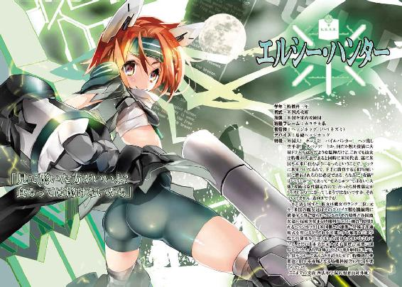
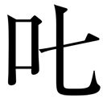
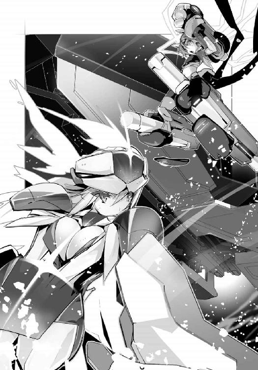

| OBSTACLEシリーズ 激突のヘクセンナハトI<激突のヘクセンナハト> (電撃文庫) | |
| 川上 稔 | |
| (2015) | |

本書（電子版）に掲載されているコンテンツ（ソフトウェア／プログラム／データ／情報を含む）の著作権およびその他の権利は、すべて株式会社ＫＡＤＯＫＡＷＡおよび正当な権利を有する第三者に帰属しています。
法律の定めがある場合または権利者の明示的な承諾がある場合を除き、これらのコンテンツを複製・転載、改変・編集、翻案・翻訳、放送・出版、公衆送信（送信可能化を含む）・再配信、販売・頒布、貸与等に使用することはできません。
●
『午前十時七分 ：東京湾西岸にて雷光現象確認：雷光が〝昇った〟との報告』
『同時刻 ：東京東部各所にて、自動ドアや稼働中のエレベーター、電車の扉が開くなど、不具合が発生。幸いにも負傷者は発生しなかった模様』
『同時刻 ：東京東部各所にて、開放されていた扉が自動で閉じるという不具合が発生。なお、前述の不具合に対し、事故を防いだのはこの動きとの見方もある』
『午前十時十二分 ：東京湾西岸にて落雷警報解除』
『午前十時十七分 ：東京湾中央、四法印学院にて、試作使役体の消滅廃棄を執行』
『午前十時二十一分：東京湾中央、四法印学院にて、試作使役体の逃亡を確認』
『午前十時三十分 ：東京湾中央、四法印学院にて、試作使役体の追走検分を依頼』
《依頼先は──》
●
「落雷警報が解除されましたけど、使役体の逃走は、あれの影響ですの？」
地下は風がなくてつまらないと、そう思う。
代わりというように手で髪を払っても、空調の中では靡きが弱い。黒の髪。制服の深緑に映える色だが、別に赤や青にでも合うのだ。個性が薄い、というのは、
......今の自分の位置と、こだわりを思い知らされますわね。
と思いながら言葉を作る。口から紡ぐのは、
「私立四法印学院、普通科第一位、総合四位、使役体管理役堀之内神社代表、──堀之内・満が、これより使役体試作登録ナンバーＪＤＰＨ－あ７０７の追走を行います」
言って、息を吸う。
まず見上げるのは白の大天井。
地下、術式試験用の空間だ。天井高二十メートル。縦横三十メートル四方の箱の中には、工作台や照準用の的、打撃系用の対衝撃設備などが有り、場としてはやや狭い。
だが、上へと手を広げ、
「奏上。──朱雀」
言うと、空中を割って、肩上に小さな鳥が飛び出した。朱の色。抽象的な形をしているのは情報体として〝楽〟をしているからだが、これでも充分に神獣朱雀の要を為す。
そして両の手の平から、あるものが広がった。
光の輪だ。
朱色の円陣鳥居。
直径五メートル程のそれは、回って下りながら、その軌道上にあるものを投影していく。
「追走用の範囲を確定するために、視界を展開。その状態から収束しますわ」
全体を個に。拡散を束に。そうするプロセス自体が、遠ざかっていったものの足取りを摑むために必要となる。
周囲の結界に投影されるのは、青の色だった。
外界。それも高い位置からの見下ろしだ。
見るのは三百六十度。しかし〝収束〟のため、視点は高速で落ちていく。
大地へ。ここへと戻る視界から見上げる天には、だが、青の空があった。
そして下を見れば、あるのは広大な湾と、中央に浮かんだ島の姿。
そこへと、視線は落下を止めない。
湾を包むように存在する高層建築の群は、大都市だ。
だが、都市の大部分は機能していなかった。
破壊されているのだ。
特に東湾側と、北部の方は力まかせに殴ったように何カ所も潰れ、長い谷として刻まれた跡までが見える。それらの多くは既に草木に覆われ、場所によっては水を湧かし、水源となっているものもあった。
しかし、湾の周辺や西側や、南の方は、町並みにも色がある。工場の煙や、湾を行き来する船の姿も少なからず見えている。
破壊の一方で、背を向けるような活気がある。
そんな湾の中央、島の方へと投影は落ちていく。
いつの間にか視線は、水平へと変化。
下から生えてくるような島上の光景は、まず、中央の森を全体として見せつけた。
緑の木々と広場。北には花畑。真ん中には霊廟のようなものがある森だった。
その周辺には、幾つかの建物が並んでいた。
学校だった。
結界が映す映像に、座標やガイドが描かれていく。そんな表示の中で、各建物にもマークが走り、安全物である事を示す青のチェックがなされていった。
普通科、特機科、術式科、特待科、それぞれの校舎に体育館。図書館や学食なども完備したここは、
「東京湾内、人工島、四法印学院の上空に通過物体無し。周辺にも不備無し。──目視確認」
言っている間に、こちらは視界を動かす。
四方に配置された校舎の間、南東側に見えるものがあった。
白の大きな建物。使役体や装備類の開発研究所だ。
その中へと、視線は落ち、入った。
来る。
「────」
収束。繫がった。
周囲、顔を上げると、円筒状の半透明な結界が、外界の全周を見せている。
ここは地下。地上にある視点は、開発研究所の屋上に立った状態だ。
結界の内側には方位や縮尺のガイドが示され、天上にある惑星の軌道までが表示。
......私の術式では、占星しませんので不要ですけど。
手元に出した術式陣を見れば、この場所を中心とした全方位に地脈の網が広がっている。今の高空視界からの収束を得た事によって、見えた地域と〝縁〟が結ばれたのだ。
「では、これから、追走を行います」
言って、術式陣を近くに寄せる。すると、
「あの、堀之内先輩」
フロアにいた一人の下級生。こちらの執行の検分役を任された生徒だ。
彼女は、書面用の術式陣に現状の推移をタイプしながら、
「──その使役体、捕まえたら、本当に廃棄するんですか？」
「ええ、展開出力が高過ぎて、現状の誰も扱えませんもの。寧ろ、この使役体の出力漏れが与える影響で、近くの者達の術式が壊れかねませんし......」
視線を下ろす。
そこにあるのはストレッチャーで運ばれ、固定された白木のバケットだ。自動箱根型のロックは解除してあり、中には淡い光の具体が存在している。
小さな一匹の獣だ。
竜属だった。
●
少女、堀之内・満は、三十センチ四方の木のバケットを見る。
内部にいる竜属は体長十五センチ程。
青と白の色は意外とマットだ。発光術式に対しても主張がない作りになっている。
現状を理解していただろうにおとなしいのは、完成度が高い事を示している。
だが、これは実像ではない。
箱の周囲、小さな光の輪が回っている。
円陣鳥居の紋章。その効果は流体反応の加圧だ。目的は流体構成物の残像を強引に増幅し、
「──地脈の一時収束により、地脈振動の残像加圧からＪＤＰＨ－あ７０７の残像を再生成功。後はこの子がどうしたか、ですわね」
見れば、竜の子は、その全身からやはり光を周囲に散らしている。
......これ、逃げた先で見つけても、素手で対処するのは危険ですわね。
流体光。それは万物の基礎因子であり、あらゆる術式の燃料となるものだ。
「これだけ流体放出が出来るとなると、うちでも上位クラスでないと扱い切れないでしょうにね。それが逃亡したとなると......」
「さっきの落雷現象でしょうか？ 何やらU.A.H.の方から警戒指示が出たそうですけど。
学校の方も、ドアが一斉に開いたりでちょっとした騒ぎになりました」
「──先生達は何と？」
「落雷で、東京東部を集中管理しているU.A.H.防護システムにミスが生じ、全域に〝開放〟術式が掛かってしまったのではないかと」
「単なる開放じゃありませんわよ？」
堀之内は、ある光景を思い出して言った。
「確認を取りに行った教務員室、──インスタントコーヒーの蓋まで開いてましたわ」
「それは──」
「開放術式対応のドアシステムではなく、〝開くもの〟を強制開放した、......という事になりますわね」
「......そんな事、出来るんですか？ あ、いえ、術式とはそういうものですけど、東京東部一帯、それもうちの学校やU.A.H.みたいな対術式防護の掛かった場所への干渉なんて」
「私も、まさか、という感覚で言ってますのよ？」
告げた台詞の意味に、ややあってから後輩は気付き、あ、と声を上げた。
彼女は苦笑して、
「そんな事が出来るとしたら、地域空間とはいえ、事象レベルでの干渉ですよね」
「ですわね。調査はU.A.H.の方で行っているのでしょうし、こちらとしては追走情報を確定するのが仕事ですの」
でも、と相手が声を掛けてきた。
「その子、確保したら、やはり消滅廃棄ですよね？」
「ええ。──この子を扱い切るには、相当の術者がいなければなりませんし」
と言うと、
「それだけの術者として、堀之内先輩は──」
「私には朱雀がいますわ。──上位三人も同じ」
「でも」
「製作の初期から関わっていましたけど、残念ですわね」
ただ、と堀之内は相手の言葉を潰す自分をこう思った。まるで自分を説得しているようですわね、と。
......私の母がいれば、どうしたでしょう。
朱雀を己に預けた大きな存在は、しかしもういない。
だからここはもう、しょうがない。
だが、と堀之内は思う。本当にそうだろうか、と。
堀之内は、僅かに思案して、口を開いた。
「恐らくは──」
少し気分を変えよう。
辛い事に対し、規則を盾にして自分を納得させるのは容易い。だが、今回の様な例外であるならば、辛い思いになるかどうかは別として、動いてみようと、そう思う。
少しの気まぐれだ。
この下級生にとっては、自分らしくないと、そう言われるだろうか。
「──恐らく、確保部隊は光太郎が指揮を執ると思いますから、確保の後、別の処分が出来ないかを模索はしてみますわ」
「それはたとえば──」
「──分解消滅による廃棄ではなく、分解による特性分離で、素体だけは残す、とか。
使役体としては全く意味が無いものとなりますが──」
「......それがいいです！ 堀之内先輩！」
大きな声と握った手で同意され、堀之内は、自分の中に僅かな間を得た。
......全く。
例外の支持をされて喜ぶのはいけない。いつもそのような判断ではやっていけないのだ。
「──まだ最後まで言ってませんのに、それがいい、はありませんわよ？」
「あっ、す、すみません」
いいのです、と堀之内は苦笑した。自分がそのような判断をする盾として、
「例外ですもの。──感謝は不要ですのよ」
箱上に手をかざし、術式を展開した。
地脈の収束を、この竜属の子の残滓から展開し、その足跡を追う。
始める。
●
「いや、感謝である。──誠、この土地には不慣れでな」
晴れた午前の日差しの下。交番の入口だった。
一つの影が、頭を下げる。
潮の匂いがする湾岸。やや街の中に入った処にある派出所だった。
周囲、道路を、青の警告灯を回した装甲車が行き来するが、
「まあ、姐ちゃん、今のところ厄介な事も起きてなくて良かったよ。
これから四法印まで行くのかい」
派出所の入口、ドアを警官が背で押さえている。
彼が少しでも動くと、ドアが開こうとするのだ。だから入口から動けない彼は、やれやれと肩から力を抜き、相手を見た。
女子。そう言える年齢の少女だった。
長身で長髪。男物のスーツを着込んだ彼女に対し、警官は、
「──あんた、日本語上手だけど、何処の国の人？」
「日本人に見えないかね？」
「この東京の、こんな中心に来て〝ここは何処かね〟をやる日本人はいないさ。
あ、まあ答えなくていいよ。だってほら」
また装甲車が移動していく。警官は、しかし顎でその向こうを示す。湾の上に存在している島と、建造物の集合体を、だ。
「四法印さんとこだったら、あんたみたいなのも普通にいるからねえ。たまに来るよ、飛行訓練中に落っこちて訪ねてくるの」
「私は一応日本出身だが、飛行中そうはならないように気を付けた方が良さそうだな」
「まあ落ちるのも一年生の内だよ大体。──ってか、日本の、何処？」
「横浜だ」
「近所じゃない」
「──しばらく別の国を渡っていてな」
と、声の主は、スーツの内側からケースを出す。そこから取り出すのは、
「免許証だが、通じるだろうか」
「あー、そっちの国で作ったヤツ？ ちょっとこっちと違うねえ」
「そうなのかね？」
「ああ、まあ、ほら、この辺りが」
と、警官が自分のを出して見せる。すると彼は、
「そっちの国のU.A.H.関係？ 准将って」
「文字が情報素体だから渡っても読めるか。元帥もなかなか」
「何処の国の人だいあんた。......文字からするに中東辺り？ 十年前のでかなりやられたって聞いたけど」
いや違う、と彼女は言って、自分の名前を指さす。
「──各務・鏡、洒落た名前と言われる」
「自分で言うかね」
「気に入ってるのでな」
彼女が笑みで言った時だ。
鐘の音が聞こえた。
湾の中。四法印学院の鐘が鳴る。それを聞いた警官が、
「あ、三限だ。そろそろうちのカミサンが食堂に搬入しにいく頃だな」
「じゃあ、私もそろそろ行くべきか。少し周囲を見て行きたいし」
「お？ 行くのかい？ ──一応、何をしに、って聞いていいかい」
「人を捜している」
「十年前に、何かあったかい？」
「いや、もっと昔だ。──しかし、〝十年前〟、とは？」
「あんた余程平和な国にいたんだねえ」
苦笑で言われ、各務は肩をすくめる。
「確かに、──元はひどく平和な、何も無い国だった」
では、と彼女は言い、身を動かす。立ち去る動きの中で、警官の押さえているドアを軽く手で叩いた。
「不始末である」
「おう、気を付けな。──飛べるようになったら復興地区、奥の方な。上から見て解るようにコロッケ屋の看板あるから来なよ」
それと、
「四法印、授業終わる前には入りなよ。今時分、次のヘクセンナハトの出場者決定のためにいろいろ知識の仕入れ直しや、派手な事やってる。
今期はバディもオーケーと言いつつ、上位はシングルで堅いらしいから、相当な連中が集まってるんだろ。やっぱ若い子限定の方がいいのかね。──魔女ってのは」
「成程、参考になる」
言って、各務が手を上げた。
鐘が鳴っている。そちらに行くのかと思えば、
「おい。道、そっちじゃないぞ」
「少々、気がかりを感じた。──何、学校には行く。近道のようなのでな」
では、と去る姿を一瞬追いそうになった警官は、あ、と声を上げ、
「......あれ？」
いつの間にか、ドアが力を失っている。
近くには装甲車の警報音。遠くでは、しかし、鐘の音が終わりを告げる。
四法印学院の午前、三限が始まるのだ。
●
堀之内が教室に戻った時、既に授業は始まっていた。
使役体の追走は出来た。要は移動の際に残る流体の軌道を確定し、方角を認めるだけなのだ。〝道教え〟の術式として、不要なものを削り落とす神道術式は確定の精度が高い。
見つかって、確保されたならば、こちらに戻された時に交渉だろう。とりあえずは、
......そんな思案で、それについては保留とすべきですわね。
前を見る。
教室は階段教室。四法印学院普通科の生徒は一学年五十人程だ。
少ないがエリート。更には独自の個性持ちが多いため、授業内容はどちらかと言えば一般常識や倫理を含んだものになりやすい。
今もそうだ。階段教室の底。大きな黒板の前で教員が術式陣を開いている。
「──ヘクセンナハト。その主役となり得る貴女達、特に三年生の貴女達は、自覚を持つ時期に掛かっています」
彼女がかざした術式陣には、言葉が自動でタイピングされていく。四法印学院の公共術式陣で、三年生であっても、流体消費の効率からそれを手元に展開している者は多い。
自分は違う。
朱の円陣鳥居。そこに教員の言葉を受け取りながら、堀之内は思う。
......どうすれば、ヘクセンナハトの出場が叶いますかしら。
と、不意に横の女子が指された。
はい、と腰を上げた彼女は、ちらりとこちらを見る。その時の手指の動きは〝任せて〟というものだったから、恐らくは教員が自分を指そうか迷ったのだ。
考え事をしているからいけない。
会釈を返していると、横の女子が顎に手を当て、もっともらしそうにこう言った。
「──魔法少女、じゃ駄目なんですよね？ 私、それに憧れてましたけど」
「残念ですけど先生も憧れてましたよ？ 今は魔法三十路ですけど」
クラスの皆が、笑わずに静かになったのは気遣いだと思いたい。
そして、じゃあ、と横の女子が言った。
「正式な兵科としては術式科の術式攻撃兵に該当します」
「そうですね。ではその構成は？」
「百パーセント女性です」
そうですね、と教員がまた言った。彼女は笑みで手を上下に振り、座れと指示をする。
応じて横の少女が着席したなり、教員が壇上を歩いた。
左に。そして黒板の前で彼女は一枚の術式陣を広げる。そこに映るのは、左右を年代とし、上下を人数として見たグラフだ。赤のラインは、矩形を描きながら途中で一度急激な減少をし、そして緩やかに上昇しながら、今度は不意に急速な上昇をする。ただ、
「──これが、世に表出した〝魔女〟の概算です。古来よりシャーマンや、薬師、占術師などとして存在していた魔女は、世情不安定な時代にそのスケープゴートとして狩られ、数を減少しました。
しかし、宗教改革以後、欧州が大規模な戦場と化していく中で、その復権がなされ、近代ではプロイセンを始め、台頭。第一次大戦、第二次大戦では主力となりました。
何故ですか。──そこ」
窓際の女子が、座ったまま即答した。
「アクティブ系術式です」
彼女は言う。
「男女ともに、術式は使用可能です。しかし、女性はアクティブ系に、男性はパッシブ系に優れ、お互いを超える事が出来ません。
つまり、戦闘として考えた場合、女性はアタッカー、男性はディフェンダーとなります」
ですが、と彼女は静かに言った。
「近世以後、武器装備の量産や充実が進み、使い魔としての使役体の開発研究が進んだ結果、矛と盾の関係は、矛が圧倒する時代となりました。
一方、盾側は、集団であるならば都市などを守る結界も張れるため、戦場は防御された拠点と、その導線を取り合いするアタッカーの棲み分けがなされ、──つまりアタッカーである魔女は戦闘の花形となったのです」
「そうですね。──昔からこの棲み分けは自覚されていて、魔女狩りの背景には、それまで培ってきた男性社会が、己の実権を奪われるのではないか、という不安があったとされています。
結局のところ、女性が戦闘に前面参加した国家は人口の減少が生じるので、多くの戦争は初期の段階を過ぎた後、男性主体の防御前線をどう相手国に浸透させるか、という流れとなり、膠着するのが常です」
とはいえ、と教員は言った。
「そのような戦争が、短期間でなければほぼ存在しないのは何故か、皆さんはお解りですね？」
それは、
「十年に一度のヘクセンナハト。──それに対し、中世以後、人類が抗う事を目指し始めたからです」
●
使役体は、人工の精霊体だ。
その竜属の子は、初めて外に出た一方で、外界の事を知っていた。
体長十五センチ。飛ぶ事も可能だが、先程飛んでいたら追い掛けられた。人工とは言え、ベースとなる生物の本能は受け継いでいる。追われる事は、自分が消されるという確信に繫がり、すぐに身を隠す事を選択した。
今は、大田区の平和島の東にいる。大通りから外れた商店街の裏手にいるのだ。
土地、時刻、言語などの知識はある。自分は誰かのサポートをするのだと、そんな自覚が頭の中にあり、しかし、それが出来ない状況だというのも理解出来ている。
自分は危険なのだ。
......しっぱいさく。
その事は、やはり理解出来ている。
己の性能は本能レベルで分析出来ている。自分はヘクセンナハトのために、ただただ流体抽出能力を高める事を主眼とされた作品。
だが、抽出力が高くなり過ぎた。事故のように経路が繫がり、推定値を大きく超える出力が得られたためだ。
一時的な喝采は、しかし、すぐに落胆に変わった。
術者で、自分の抽出する流体を、受け止め切れる者がいないと判断されたのだ。かなり有力な魔女に掛け合ったとも聞くが、彼女達には既に自分のような存在がいた。
自分の方は、事故で出来てしまったため、制御不能な部分があるという。
一応、データは取ってあるので、ある程度近いものを制御状態で再生産する事は出来るのではないかとの事で。つまり自分は、要らなくなってしまったのだ。
自壊への理解はある。
使役体の存在として、本能レベルで理解している事だ。
自分は誰かのサポート役。それが不可能となった時は、消滅する。そこに抵抗はなく、疑問もない。
だからそういうものだと思って、じっとしていたら、扉が開いた。
開けられたのだ。
誰にかは解らないが、ずっと眠っていれば済む部屋の扉を、開けられた。
そして自分は思い出した。己が〝しっぱいさく〟であると解った時、ある人が自分を手に載せ、こう言ったのを。
「貴方の主人になれるとしたら、多分、信じられない程の莫大な流体プールを持つ人ですわね。もしくは──」
その先は解らないが、何となく、扉が開いた時に思ったのだ。
そういう人を、
......さがす？
いないと聞いた。だが、自分を手に載せた人は、その時、多分、残念だと思った筈だ。そういう風に感情を読み取る能も、本能レベルで自分には備わっている。
だったら、と扉に前足を伸ばし、己はこう思ったのだ。
自分がそういう人を探し出せば、誰も残念には思わなくなるのではないか。
使役体として、主人を得るのは最初にして最大の意義だ。ならば、
『────』
扉は開いていたのだ。外まで。全て。
知識は備わっている。外界の知識は、生まれた時に既にある。何のためにあるのか。眠っていたのでは使われないだろうに。
だから出たのだ。捕まってはいけない。捕まったら〝ざんねん〟になる。だから、
「成程」
不意に、後ろから声がした。
今までそこには何もいなかった筈。だが、
「ここには君のようなものがいるのか。──面白い」
声と共に、自分は、いきなり両脇から抱え上げられた。
●
使役体の竜属の子は、自分を抱え上げた少女を見た。
男性用のスーツを着込んでいるが、男性ではない。だが、
......ちがう。
彼女の周囲、流体光が見える。恐らくは使役体の自分が、路地の暗がりであって初めて見えるような光だ。
何か強力な加護、もしくは術式を浴びたか、通過したのだろう。だが、
『──？』
ちがう。
何が〝ちがう〟のかといえば、彼女の力だ。
使役体は、サポート役として、ある能力を持っている。
相手の力を見極める力だ。
だが、自分が彼女から感じるものは、今まで見てきた人のものとは違った。
......ないの。
流体のプールが、希薄だ。魔女としての訓練を受けていない一般人。子供などの平均値よりも遙かに低い。ほぼゼロと言っていい。
だからこの人は違う。
この人は、術式を使えないし、自分がサポートすれば、危険だ。
溢れる流体を受け止め切れず、殺してしまう可能性もある。だから、
『────』
身を振り、逃れようとする。あぶない。きけん。だから、
「すまない。下ろして欲しいのかね？」
言われて、あっさりと下ろされた。
やさしい。
いろいろな意味で、驚き、見上げてみれば、膝をついた彼女がいる。
「素晴らしい。──想定外の生まれとは、この世界が如何に芳醇か、である」
そして、
「感謝である。君の存在に」
よく解らない。〝しっぱいさく〟で、何故、感謝をされるのか。
だが、どうすべきか。暴れて解放されたのに、感謝されて、どう反応をしたらいいのか。そのような知識が自分の中に備わっていない。
ただ、耳は音を聞いた。装甲車。U.A.H.J.四法印支部所有の二十三式六輪ＡＰＣ。対術式防護性能はランク３まで対応。だが最大の能である輸送力は──。
「──君！」
装甲車のフロントドアを開け、スーツ姿の青年が飛び出してきた。彼は身分証明用の術式陣を一枚展開し、
「U.A.H.J.四法印支部、第二課副課長の天城・光太郎と言います。
その使役体から離れ、こちらに寄越して欲しい！ 解りますか!?」
●
腰をかがめたままの各務は、光太郎と名乗る男の背後に、並ぶ足音の群を聞いた。
......何やら物々しい。
シエキタイ、というのは、この、足下でこちらを眺めている竜の事だろう。シエキタイ、脂液体？ 私益体？
「この子が、何か問題を？ 危険には見えないのだが」
「その固体は調整に失敗したものでね。力の制御が出来ず、使用者を殺しかねない。
とても危険な状態で──」
成程、〝使役体〟、か。
つまりは、使い魔。もしくは加圧者、と言ったところか。
一つ聞いておく。
「──君達に引き渡した後は、どうなる？」
問うた先、眼鏡の青年は、一度息を吸った。ややあってから、しかしはっきりと、
「無論、調整施設で分解するのが定則で──」
「──ならん」
は？ という相手を無視して、各務は下を見た。
そこにいる竜の子は、こちらを見上げている。だが、
「行き給え」
各務は言う。
「行き給え。そして生き給え、生まれたのならばそうする甲斐がある。
そしてもし君が力を出すべきと思うなら、私のところに来るといい。
──私はなかなか死なんタチだからな」
言うと、竜の子は、ややあってから首を下に振った。頷きなのか、それとも一礼なのかは解らないが、賢いのは確かだ。素晴らしい。
後は、どうするかだが、
「逃がす気か!?」
「そちらはどうする気かね？」
問うた先、男達が並んでいた。ヘルメット、身体を隠すバリティクスアーマーに、背負ったバックパックは、
「邪魔をするならば、厄介な事になります」
眼鏡の青年が、こちらを術式の窓で見据え、眉を歪めた。あの光る術式陣が、一種のコンソールであり、こちらの技術なのだろう。そして相手は、ややあってから、
「──貴女、何処の所属ですか？」
「おや、所属していなければならんのかね？」
「そんな、一世紀以上前からの慣習を──」
言った青年は、ふと空を見上げ、息を吸った。
「万が一もありますが、貴女も、相当に厄介な存在かもしれません。自覚はありますか」
「自覚はあるが、まだ判断はしたくないな」
ただ、と各務は言った。
「そこで〝そうですね〟と言える立場に君達もいるまい。そして私も同じだ」
「では済みません。──私の判断で動かせて頂きます」
彼は手を上げた。
「総員、対魔女装備、展開許可する......！」
●
「──いいですか皆さん」
教員が、右の手を上げた。五本の指を順に広げ、そして閉じる。数えた数は、
「十。──十年です」
それは、
「十年に一度のヘクセンナハトが迫るこの時期。術式攻撃兵は〝魔女〟と呼ばれ、それによって過去から伝来する呼称加護を得ていくものではあります」
教員は、小さく笑った。
「残念ながら、男性にはこれに該当する性差呼称がありません。ただ男性は兵科表で警護系職業が多いように、その術式に対毒、対術式のパッシブ系が多く、ヘクセンナハトの下でも私達と同様に単体でも行動出来ます。──行動の目的などは、それこそ守備防衛と、私達とは逆となるため、だからこそ後ろを預ける事になりますけどね。
対する私達の方も、攻性術式を転用した反発防護の研究により、防御術式の開発が進んでいますから、前線で彼らの手を煩わせる事もありません」
と、彼女は閉じた指を開け、廊下側の女子を指さした。
「とはいえ、男性方と私達の差、気を付けねばならない事は解りますか？」
はい、と廊下側の少女が立ち上がる。
「──見せますか？」
「いえ、誰もが解っている事の、再自覚ですので」
では、と少女が肩から力を抜いた。周囲、他の皆も、僅かな緊張を身から抜く。
そんな、堅さと安堵の変化の中で、少女が言った。
「自己防御加護などを男性は自前で揃えられます。代わりに、男性はあるものが、やはり使用出来ません」
それは、
「使役体。魔女の使い魔です。──原初の開発に成功した使役体が〝魔女製〟であったため、その子孫である使役体の全ては〝魔女〟にしか使用出来ません。ただ、一応、擬似精霊は生成に成功しているため、それを用いた武装の召喚は可能です」
「その武装とは？」
教員が、皆を見渡した。
彼女の視線を浴びて、誰もがその手に力を込めたり、首元や、ネックレスなどの装飾品に手を当てる。
「──召喚フレーム。男性は使役体と攻性術式が使えないので、──ノーマルデバイスが限界。それも召喚の際は、公務用使役体と呼ばれる疑似使役体を使用します」
●
各務は見た。
男達の背負うバックパックの右側面。上を向いていたランチャーの蓋が弾け、そこから光が飛び出したのを、だ。
白光だった。
それは弾丸でも、雷でも、火でもなく、ただ彼らを一人ずつ守るように空中で固定。
「......精霊かね。人工と見受けるが」
「U.A.H.J.の対魔女用、男性装備の一環。防御としての攻撃力ですよ」
言っている間に、光が消えて、また生じた。彼らの肩上にいた光の精霊が身を震わせて散るなり、その姿が別のものに変わったのだ。
......おお。
武器だった。
光がまず、内部機構を作り、機能を確定していく。各務の目が、それを〝砲〟と捉える時には、既に変形は済み、光は自らが作ったボルトで己の姿を固定する。
出来上がった姿は全長三メートル超。光の色をした、巨大な十手砲だった。
「制圧用。防御側の攻撃手段として、という訳か」
「男性用ですが、制圧用ノーマルデバイスを十六本。──ランカー外であれば怪我をします。個人としては逃走を希望しますが」
「私はこれから大手を振って、あの学校に行かねばならん」
「貴女も、魔女ですか？」
「解らん」
ただ、と各務は言った。
今先程の技術は、なかなか興味深かった。密度を高くした流体に精霊としての個性を与え、そこから武装に召喚転化する。これは術者の負担を軽減するだけではなく、武器の機能などを洗練、確定するのに有用だろう。
「成程。ここでは──」
だから、自分としてこれを行うならば、
「こう、するのだな？」
立ち上がりながら広げ、振った右手。
そこに各務は、己の〝こう〟を射出した。
●
光太郎は、あり得ない光景を目の前にした。
距離十五メートル。路地裏というロケーションで見るには異常な出来事だ。何故なら、相対した相手が、
「使役体無しで、ノーマルデバイスを召喚した......!?」
「ふむ。──そういうものなのか。だが......」
平然と言う相手は、手元から周囲に流体光の渦を発生。そこに流体製の武器を射出成形させながら、こちらに視線を向けた。
「こういうもの、なのだろう？」
周囲、隊員達が息を吞んだ理由はわかる。
相手の手に高速構成されていくのは、白い大剣。だがそれは、中央部にある機構を作り、格納していた。剣と言うよりも打撃武器のような、強引な刃が内包するのは、
「副課長！ 砲弾成形式の加速砲です......！」
更には、規模が巨大だ。柄頭から剣先までが優に五メートルを超える。あのようなサイズを即座射出出来るとしたならば、
......ランカー級。それも相当な上位です！
判断は一つだった。このような魔女が無登録であるならば、
「総員構え！ 防御術式を最大展開で──」
危険だ。何故なら、
......使役体無しでのノーマルデバイス射出など、出来るのはこの世で一人......！
危険という言葉を相手において、光太郎は叫んだ。
「──突撃。制圧しろ......！」

●
授業は、ちょっとしたレクリエーション状態となっていた。
基本事項を確認の後、教員が肩から力を抜き、こう言ったのだ。
「──ヘクセンナハトの夜は、男性主体の防御隊が地上側を守り、私達は航空での迎撃を備えます。前々回、前回と、ヘクセンナハトの領域を向こうは無視する事が解り、今回からはバディ制も認められた訳ですが、余剰戦闘の余波は無視出来ないどころか、本質以上の被害を地上に与えますからね」
ですから、
「皆さんも、実家に帰った際などは、御両親に向ける目が変わっている事でしょう。ここでの訓練期間が長ければ、十年前、二十年前の意味は深く解る筈ですから」
笑みで言う彼女に、あのう、と手が一つ上がった。
こちらも息をついた生徒が、肩をすくめて言う。
「先生、──うちの父、フレームも無しで母との喧嘩を耐えられるのは、加護なんでしょうか、あれ」
「それは母君の手加減という愛でしょう」
笑いが生じ、場が和む。
が、その時だった。
皆が不意に動きを止めた。
教室の中央に、朱の色が生じたからだ。
円陣鳥居の術式陣。その中央には〝警告〟の文字がある。
「堀之内さん」
教員の声に、堀之内は無言で立ち上がった。
そして彼女は、誰に言い聞かせるとでもなく、
「公務が生じましたの」
「本日、二度目ですね。......あまり情が深いのも、判断を鈍らせますよ？」
「大丈夫ですわ。今度のは情ではありません。──先程の落雷で教員室に行ったため、憶えられてるのかもしれませんわね。他のランカー、上位三人はマイペースのようですし」
「成程。──では、出場を許可します」
教員は言った。
「U.A.H.世界魔女ランキング四位。単独ユニットの〝巫女〟属魔女。そして三賢者の一人にして、前ヘクセンナハト出場者である堀之内・充代の娘。その事を理解の上で振る舞いなさい、──堀之内・満さん」
煽りますけどね、と彼女は笑みで追加した。
「ヘクセンナハトは近いのです。──黒の魔女。この世界を滅ぼす存在を討つべき夜は」
●
戦闘とは、難儀なものだと各務は思う。
まず戦うのに、判断力や体格など、適格な才覚が必要とされ、その上でまた、それらを、継続させなければならない。
そして装備を充実し、これも維持した上で、習得し、修得する必要がある。
しかし、年月と労力、金銭をそういうものに払ったところで、得られるものは勝敗の二文字のどちらかだ。下手を打てば死に至る。
......リスクが高いのであるな。
だが、それだけの事をやる価値が、時にある。
「──安全、平和。それらの獲得と維持。君達が私を排除しようとするのは、そういった安定に基づくものかね？ ──特に秩序について、だろうが」
問うた返答に、火花が来た。
正面。いるのは装甲に身を包んだ男達だ。彼らの内、半数程は倒しているが、残りがなかなかにやる。
今もこちらに、巨大な十手型の武器を叩きつけてきて、
「何だ貴様は......！」
「名乗りはした筈だが？ まだここには不慣れでね」
しかし、
「小さな獣を捕らえようとし、不慣れな者に襲いかかる。いや、私も小さな命を見ると遊びたくもなるもので、譲らぬタチではあるが、君達は違うのかね？」
「今はそういう時間か......！」
「その通りだ!!」
断言した。
「私が小動物を愛玩していたら君達が強襲してきたのだ！ 小動物に関する私の問いかけに君達は答える義務がある！」
「それは──」
「小さい動物は好きかね？」
手にしている己の武装。巨大な剣に、攻撃の火花を受けながら各務は問うた。
「犬とか猫とか、ネズミ系などもいいではないか？ 特に、猫などは理想的だ。身を低くして構えば相手してくれると解った時の感動。憶えているだろう？」
「く、くそ......！ それがどうした!?」
では、と各務が言った。
「ちと新聞で見たが、最近、枠を床に作ると猫が入るとか、そのような遊びがあるようじゃあないかね」
「だからどうした!? 俺はそんな事をやっていないぞ！」
「いや、別にそういう事を言おうとしたのではない」
各務は、鍔迫り合いをゆるく引きながら、静かに言った。
「枠内に入らない場合、つい持ち上げて入れたくなるが、──それは下衆であるよなあ？」
「く......！」
「そしてまあ、小さな動物を、思い通りにして、自分の点数にする。──いかん事であるよなあ」
「だ、だからそれが──」
どうした、という言葉は最後まで続かなかった。
彼の持っていた武装が、光となって散ったからだ。
瞬間。武器のあった空間に、彼の使役体が放り出された。
光の精霊。小さな玉のような姿は、しかし直後に空中展開した術式陣に回収される。後はただ、鍔迫り合いをする相手の武器が無くなったため、
「成程」
各務は、己の武器を振り抜きながら告げた。
「──君達の武装。つまりは使役体というものを転用するが、その際の主軸となるのは己の信念。矛盾があっては保たぬと、そういう訳か」
斬撃する。とはいえ、砲門を中に仕込んだ大剣だ。一発は、相手の装甲に食い込み、破壊しながらも吹き飛ばす。
......地面に叩きつける訳にはいかんな。
殺す気は無い。
失わせる気も無い。
そうせざるを得ないだろう相手は、別にいるのだ。
ただ今は、
「問おう」
各務は、相手の動きを見た。一気に踏み込み、波状の制圧を仕掛けてくる彼らに対し、攻撃を重ねた疑問を放つ。
●
各務は、接敵を見据えながら、手の中にある五メートル程の大剣を握る。
「流体から作られたものだ。使役体を使用し、扱うには訓練と、知識、そして何よりも信念を必要とする。この利点は──」
相手を見れば、三メートル程の、やはり同システムによって形成された武器を持つ。否、彼らが武器の射出成形をするのを真似て、己のを作り上げたのだ。
彼らの、突撃における身構えに不備の揺れも何も無いのを見て、各務は微笑した。
......見事である。
よく統制された組織。これ程の兵員がいる上で、
「──この武装の利点は、術者の信念が折れるか、生命活動の停止、流体供給の不足がない限り、武装を保持出来ると言う事。それも、術式の具現化であるため、流体が保たれていれば弾薬などの補給も要らない。一種の無敵武装だ」
敵が来た。先頭の三人が十手型の武装を叩きつけてくる。
左右から、上段と下段の水平斬り。正面が中段の突き。どれも十手のソードブレイカー部分を下に置き、単体でも上下段差をもった攻撃としている。
壁だ。
鍵となるのは中央の一人。彼の〝突き〟が最も早くこちらに届く。
突撃の先端を避ければ、上に行っても下に行っても、左右に振っても十手の打撃だ。
さて突撃を止めるには、中央の彼を打つしかないが、これもまた、三メートル級の武装の陰になっていて、やりにくい。
よく出来た三連携。更には、
......左右からもか。
こちらを包むように、同じような組が二つ来ている。
そして各務は見た。彼ら三組の背後、残った者達が身を低く滑らせながら、十手を立ててシールドとしているのを、だ。十手の表面には、その長さよりも大きい長方形の術式陣が立ち、〝防護〟の文字を見せている。
この戦闘の被害を、外に漏らさない。そういう事なのだろう。
ならば、と各務は思った。
「どういう事かね」
前に出る。
左右からの十手の打撃に先立ち、中央からの突きが来る。
構わなかった。
各務は、手にしている大剣を水平にし、柄から下に落としたのだ。
斜め落ちになった剣の柄頭。それが地面に当たる前に、各務は己の履いている長靴の踵で踏む。そして、
「君達は、何をしている」
斜めに浅く立つ形となった大剣の先が、突撃の十手に下から食い込んだ。
ソードブレイカー部分は下側。そこに極厚の刃が激突し、鋼の音を跳ね上げた。
当たる。そして砕く。
割るのでも削ぐのでも断つのでもなく、ただ破砕した。それもソードブレイカーの基部ごと、十手を二つに砕いたのだ。
金属音が響き、光の精霊が術式陣に消えた。
直後に、十手を突き込んで来ていた中央の装甲服へと、こちらの大剣が届いた。
地面に柄頭を食い込ませた大剣は、パイクよろしく装甲服の胸部を下からカウンターで穿つ。装甲は、硬化樹脂材の下に織り込んだ繊維を断裂させて破断。減速した身体は、しかし極太の刃に激突し、
「......！」
その身体が跳ね上げられたのは、こちらが柄頭を下から蹴り上げたからだ。
浮かせて水平にし、大振りの鍔を立てて前に突き込む。その剣幅は中央を突き抜けてきた十手よりも太いものの、
......左右の攻撃の間を行けるか......！
各務は、突き込んだ大剣に引っ張られるように前にステップ。
軽く身を捻り、左と右から来る打撃の間を抜け、前方に出た。
左右には、十手を空振りした装甲服がある。その間に向け、各務は手に摑んだ大剣を後ろへと振り上げて回す。そして届かずとも構わず、
「砲撃」
信念で動くならば、意思で伝わる筈。
即座に手の中に伝わってきたのは、果たして機械の駆動音だった。
やや動きが遅いと、そんな風に思うのは、まだこの装備の作法に不慣れなせいだと判断しておく。今為すべきは、変形が生じ、中央の刃が割れ、
「──主砲、出たか」
すれ違いざまと言えるタイミングで、各務は砲撃を後ろへとぶち込んだ。
●
......砲撃状態まで成立していますか......！
装甲服の男達を率いてきた青年、光太郎は、各務と名乗った少女の砲撃を正面に見た。
激音がし、光が破裂した。だが、
「......空砲!?」
大出力ではある。自分の手前、身構えていた防護隊の防護障壁が、一度表面を洗われて光を得直すなど、ランカー級の一撃に匹敵する。だが、
「────」
空砲の破裂が、彼女とすれ違った左右の二人を吹き飛ばしていた。
十手を振り抜こうとしていた最中だ。彼らとしては、前に出て追撃を避けながら、十手を一回転させて防御の構えに入る。そんなつもりだったろう。
だが少女はそれを逃さなかった。
背面撃ち。しかも弾丸を放つ砲撃ではなく、衝撃波重視の圧縮砲だ。
砲弾を成形出来なかった訳ではなかろう。ただ加速式バレルの中、先端側の加速力を低め、後ろから高速の〝爆発〟を叩きつけたのだ。
砲弾ならば、まだ良かった。
弾である以上、左右のどちらかを狙わねばならない。発射時の爆圧でもう片方が揺らされるかもしれないが、直撃ではないだろう。
だが、狙った上での空砲はマズい。どうマズいかと言えば、
「──左右、確保から散開！」
振り抜く筈の十手に、後ろからの爆圧を本人共々に受け、二人の隊員が宙を舞った。既に装甲服の強化機構の限界を超えた速度だ。制御は出来ず、振り回されるがままに飛ぶ。
その行き先は、左右から少女を囲もうと突っ込んで来ていた二隊だった。
「くっそ......！」
右の隊が叫んだ。
「所属不明の女の子を囲って盛り上がるつもりが、野郎の受け止めかよ！」
言っている間に激突した。左右の男達三人二組が、飛んで来た一人ずつを受け止める。
装甲がぶつかり、意外にも軽い打音を立てた。そんな流れが二組生じた瞬間。両方共に、
「散開......！」
受け止めた三人二組が、動きを合わせて中央から左右に退いた。
直後に光太郎が見たのは、右の班が吹っ飛んだ光景だった。
一瞬だった。
各務と名乗った少女が、右の隊へと突っかけたのだ。
それは、宙を飛んだ隊員を追う軌道。だが、彼女の即応はおかしい。
......空砲の反動は無いのですか......!?
疑問の答えは、既に見えていた。
砲撃によって上へ跳ねた大剣を、彼女は両手で握りながら肩で右に押し込み、
「......と」
回していたのだ。
砲撃の反動を利用した大旋回だ。踵を軸に独楽のように、しかし身体を仰け反らせての豪快な横薙ぎは、
「そこかね」
問うような言葉と共に、方向性を与えられた。
踵を踏み込み、旋回から突撃へ。風を切る一発は、右に飛んだ兵員を正確に追った。
問題なのは、宙に来た一人を受け止めようとしていた三人だった。
少女が、飛んで来た一人の真下へと、正確に大剣をぶち込んで来たため、一瞬の判断を迷ったのだ。
それがミスだった。
大剣が、その速度で、宙に舞った一人をくぐって抜けた。
野太い切っ先がぶち当たるのは、三人の内、やはり中央の一人だった。彼は仲間を受け止めるのを諦め、十手をガードに構える。
管楽器の低音を、二つ打つような音がした。
十手を、大剣の先端が突断したのだ。
ガードを抜け、大剣が中央の一人を打ち飛ばす。その直後、光太郎の視界の中で、大剣が垂直に一回転した。
砲撃展開。機構の機動と再構成は先程よりも早く、一回転終了と同時に、
「散開......！」
命令に従うように、空砲がぶち込まれた。
左右の二人が吹き飛び、頭から落ちかけていた先の一人が、
「......！」
一回転し、背面気味に、しかし足から着地した。
そしてその時既に、光の弧が大輪を描いている。先程と同じように、大剣が豪快なスイングを水平軌道に作っているのだ。
各務・鏡。彼女の狙いは、左の隊だ。
旋回からの攻撃が走り、打撃音が穿つ中で、光太郎は言葉を聞いた。
それは、各務と名乗った少女の声だ。
「どういう事かね」
攻撃し、打ち払いながら、彼女は自分達ではなく、戦闘そのものに問いかける。
「何故、このような装備を必要とする......！」
●
各務は疑問した。打ち払い、競り合いから押してこう問うた。
「この装備。──流体による再生産が可能で、携帯による重量や嵩の問題も無く、そして信念と流体があれば燃料補給や弾薬の装備も不要という武装」
このようなものがあった場合。どうなるか。
「──戦争を生じれば、国一つどころか、世界が滅びかねん」
しかし、
「しかし私が見たこの町は、平和だった。人は親切で、命がある。──矛盾だ」
だから、と各務は言った。身を前に出して言った。
「問おう」
各務・鏡は疑問する。目の前の相手を突き打ち、道を空け、
「──君達は一体、何に対して怯えている」
武器を振り、砲撃し、問いかける。
「これ程の強力な装備。それを持って、今の町と人々を守りながら、──何故、小さい命を武装化し、戦闘状態を保っている」
何故だ。
「何が君達を守らせ、恐れさせている......!?」
●
光太郎はこう思った。この魔女は、何だろうか、と。
無知というべきか。それとも、愚かと言うべきか。
自分達が何のためにこれらの武装を研究開発し、そして魔女と共に世界を守っているかなど、
「答えは今も見えているというのに......」
彼女はそれが解らないと、そう言うのだ。
だが、と光太郎は思った。
彼女の問いかけは、自分達が常日頃の〝いつも通り〟としているがために、真実だ、と。
「──隊長！」
光太郎は、正面で防御姿勢を取っていた隊員達が、腰を前のめりに上げるのを見た。
「連絡を！ ──この地域からの避難を！」
●
避難。
光太郎は、そう言われた意味を理解した。
彼らでは勝てないのだ。
......魔女と、男性の術者では攻撃性能が違う......！
女性の使用する術式はアクティブ系で攻撃や反発特化。
男性の使用する術式はパッシブ系で防御や緩衝特化。
そして何より、女性の方が、アクティブであるが故に使役体との交流性を持つ。
現代においては、人工使役体もあり、男性の防御術式も飛躍的に性能を高めているが、
「あの娘、ランカー級です！ 使役体無しでノーマルデバイスだけ射出して、振り回されてるのは意味が解りませんが、ノーマルフォーム出してフレーム一式揃えるくらいの力量は間違いなくあります！」
「それでも私達なら押さえ込める筈だろう？」
言うと、隊員達が口の端を上げた。
「言い忘れましたが、ランカーって言葉の前に〝トップ〟ってつくかもしれませんぜ」
大体、と別の隊員が言った。彼は皆と共に術式の多重展開を行い、装甲服の機動性能を高速戦闘用に変換。術式陣の幾つかの項目に手指で許可を押しながら、
「──それに、周り見て下さい。あの娘、俺達と戦ってますが、誰も殺すようなこたあしちゃいない。どちらかというと、俺達を振り払っているだけだ」
「敵意が無いのは解っています。──使役体の扱い規則に反したのと、使役体無しでノーマルデバイスを展開したのを、危険と判断したのです」
つまり、それがための戦闘で、向こうが必要以上の被害を望んでいないならば、
「立場上の戦闘。向こうもそれが解ってやっているという事ですね」
「何故か、解りますか？」
解っている。
「疑問です」
彼女が先程に問うた言葉。今、こちらの隊員達と激突しながら、この戦闘状態に対してぶつけている憤りこそが、彼女の戦う意味だろう。
何故戦うのか。
彼女のそれが、こちらに解らないのと同時に、彼女もまた、解らないのだ。
問われている。しかし、
「あの疑問に、私達が本当の意味で答える事は出来ない」
「じゃあ、どうします？」
「耐えましょう。──今はまだ授業の時間。問いかけには答えが必ずある時間です」
だから、
「回答者は必ず来ます。──トップランカーの魔女が、彼女の問いに答えに来ます」
だったら、と隊員達が言った。
皆が下がる。各務と名乗った規格外の魔女から距離を取る。
全員が十手を縦に構え、術式陣を展開。強化術式を入れ直し、
「御嬢と、どっちが強いですかね」
「御嬢様は負ける理由を持ちません」
だったら、と隊員達が、また言った。
「試すのが、ここから先の俺達の仕事ですか！」
「そうだ！」
光太郎は手を振った。
皆に囲まれ、大剣を提げて構えとした各務に言う。
「告げる！」
よく解らない。相手も、今の状況も、逃げた使役体も、どうしたものか。
だが、光太郎は、腹の奥に奇妙と言える感情を得ていた。
......この相手は──。
自分達の、当たり前の現状に疑問を持つならば、
......全ての問題に対し、劇薬となるのだろうか。
「我々は君の疑問に応じる義務も、また権利も無い」
「それは、答えられる者が別にいるという事かね」
「いますとも」
しかし、と光太郎は言った。
「君は危険で、また、その一方で、実力が解りません。──ただ、今これから答えを送る相手が来るとすれば、それはこの世界で第四位のトップランカーです」
「自分で道を拓ける覚悟はあると、それは述べておこう」
言って、各務が微笑した。
「ようやく通じたな。私達の戦う意味が」
彼女が前に出る。一歩を踏む。二歩を踏む。それに応じ、手前の隊員が、下がれと手指示を寄越してきた。
自分が為すのは、この地域からの避難指示の手続きだ。
皆はどうなるだろうか。ただ、誰も彼も口の端を上げ、
「いいじゃあないですか。やってやりましょう。──二桁ランカー相手なら、俺達だって良い勝負になるんだから」
「俺達ゃ集団で、向こうは地上戦限定のシングルだけどな」
「だけど測れるのは確かだぜ」
一人が、各務に言った。
「俺達が、世界の壁だ」
ああ、と別の一人が言った。
「拓けさせねえ。──越えるなら認めてやる」
そうだ、ともう一人が言った。
「越えるなら上な。──スカートが良かったが、女の子のファッションに口は出せねえな」
すまんな、とパンツスーツに靴というスタイルの各務が言った。
彼女は会釈して、踏む足を軽いステップに変え、
「頼むぞ諸君」
武器を構えた。
「──感謝である」
●
西の空に、小さな光が生じたのを、皆は窓から見ていた。
高い天井を持つ階段教室。
縦長の窓に、少女達は視線を移し、一部は広げた術式陣に今の光景をスキャンする。そんな彼女達の動きに、教壇から手を打つ音が響いた。
「──皆さん、最近ちょっと遅れ気味なので、気を散らさないように。貴女達、魔女の教導を行う四法印学院とはいえ、基本は高等学校。授業の進行が遅れたら、私もドヤされますし、貴女達も座学や実地の通常試験が心許なくなりますよ」
彼女の声に、はい、と頷く言葉もあれば、無言で従い、視線を戻す者もいる。
しかし中では、手を上げた上で、
「あの、大丈夫でしょうか」
「──先程、当該地域には、戦域非指定Ｓランク級の戦闘が生じると、そういう指示が出ました」
教員は静かに応じる。
「人々は退出していますし、原因に対しては、外部の廃墟地域への誘導を行っているようです。問題はありませんよ」
いえ、と別の少女が手を上げた。彼女は一度、「えーと」と前置きして、
「大丈夫ってのは、......ほら、相手の事で」
「多分これ、野良の魔女が相手ですよね」
他からも声が上がった。
「登録外で強力な魔女というと、大体がスカウトしてU.A.H.か、この学校に入る事になるじゃないですか。でも堀之内さん、そういうのに出張ると──」
皆が結論した。
「──大体、派手に躾けますよね」
彼女達が確認を取る先。教員はただ頷くだけだ。眼鏡を上げ、やがて口を開くなり、
「いいではないですか」
言う。その瞬間に、西の空に光が一つ発生した。
「どれだけ強くても厳しくても、我らが歴史と宿命を思えば、足りぬくらいでしょうに」
●
堀之内が現場にたどり着いた時、そこは残骸と、散る流体光の風に満ちていた。
廃墟。
湾岸からやや北西に進めば、川沿いであっても遺跡のような現代の廃墟に着く。
その入口に近い位置であったが、見知った影が幾つも倒れているのを堀之内は見た。
「皆さん......！」
広い道路。昔はもっと西の方と繫がるための道だったらしい。
そんな街道の左右に、装甲服を砕かれた男達が倒れている。
ここまで来る間に報告は来ていた。そこで告げられている相手は、
「──おや、新手かね」
スーツ姿というより、乗馬服のような締まったスタイル。彼女はこちらを見て、
「......今の移動、いきなりだったが、瞬歩か何かかね？」
見破られた。
だが、来た瞬間は、見せていなかった筈だ。だとすれば、ブラフか、または、
......移動系術式が起こす流体の動きを、見られましたの？
自分の接近を感づかれないよう、万が一を考えてある程度の距離からは足を使って移動している。だが、己の想像する察知の外までを感づかれたとなると、
「......何者ですの、貴女」
「何かおかしいところがあるのかね？」
問われ、堀之内は半目で右の手を上げた。指で示すのは、
「それ」
言われ、相手は自分の手にしていた真っ白いノーマルデバイスに気付いた。
大剣型。砲身内蔵で砲撃可能なモデルだというのは報告にあったものだ。
しかし、目の前で見ると、一つの異常がある。
「ノーマルデバイス......、のみですの」
「......先程も、ちょっと騒ぎになっていたが、これが展開出来るのはおかしいのかね？ 何やら使役体が必要とか、そんな話であったが」
彼女の言葉に、違和と言うよりも軽い苛立ちを堀之内は感じた。
......おかしいですわ。
何を言っているのか、解るけど、理解出来ない。
意味は解るのだ。
使役体無しでノーマルデバイスを展開したと、そういう事だ。
だが、理が合わない。ノーマルデバイスの展開とは、そういうものではないのだ。だから、
「──朱雀」
言うと、右肩に小さな赤い鳥が乗った。情報体。自らの疲弊を避けるために簡素化しているので概要的な姿だが、精霊としては四聖獣の朱雀に該当する。
己が治める神社。堀之内神社の守り神として、古来から住み着いている一羽だ。
見れば朱雀は胸を張っている。自己主張の少ないクール系だが、今日はテンションが高いらしい。ならばここは素直に、
「──行きますわよ」
「唐突な話だねまた」
答える意味は無い。相手は自分の麾下とも言える防護隊を一中隊壊滅させたのだ。二桁ランカーならば制圧出来る彼らを完全に打ち、しかも必要以上の深手は負わせていないとなると、
......上位ランカー級！
だが、と堀之内は思った。それ程の実力者が、今の時期に在野であったなどと、そんな事が有り得るのだろうかと。しかし、
......目の前の出来事だけが事実ですわ。
思えば、身は震える。
甘受せよ現実。辛い事も理不尽も、断絶も何も、目の前でしか生じない。だから、
「──ノーマルフレーム展開！」
●
各務は、目の前に現れた少女に、身肌の震えを感じた。
流体。地脈。それらが今、彼女の味方についている。明らかに、この世界の理が、こちらよりも向こうに従っているというのが肌に解ってくるのだ。そして、全ての力を従えるためのシステムが、
「術式か......！」
人が作り得て、世界を従わせるもの。
己が持つ武装の成形よりも大きな力が、少女の方へと渦巻いて走る。
光があった。
その中で、幾枚もの術式陣が展開する。色は朱。楓をあしらった円形の文字盤には、幾つもの言葉が流れ、少女の肩に乗っていた赤い鳥が一鳴きした。
『......！』
鳥の姿が光に消える。
鈴の音が響いた。軽い鈴では無い。神社で鳴らす金属の大鈴だ。それが周囲に音の結界を張るように鳴り音を広げ、中央で少女が腕を広げた。
直後。彼女が両の手を身体の前で叩きつける。
快音が響いた。
瞬間。彼女の衣装が音に散った。だが、その時にはもう、術式陣が彼女の身体を隠すように覆い、
「────」
もう一度、手を打つ音が響いた時だった。少女の身体の各所に小さな部品群が現れた。
各務の目には、流体で構成された駆動器に見えた。
当たりだった。
駆動器は流体を食って回転し、彼女を支える地脈を一気に加速させる。そして光の渦が加圧され、彼女の五体に纏わり付き、
「......ほう、装甲と強化駆動系までを構成するとは、見事な精神の表出状態」
成形されるのは、鎧に等しい重装甲と衣装。特に脚部は飛翔と大型武器の支点システムとして強固なものが射出された。
全ては内部に駆動器を収め、流体駆動機構を構成する。その上で各部に流体で出来たボルトが数千を下らぬ単位で射出。ことごとくのパーツを穿って合致した。
音が響く。
中央、胸の中に収めるように、一枚の術式陣が立ち上がったのを各務は見逃さなかった。
ハート型のインジケータ。恐らくは彼女の流体装備の中枢システムだろう。
術式陣の中に逆映しで見えた文字は、
〝Phlogiston Heart System〟
「成程」
鈴の音が静まり始め、光の壁も薄くなって行く向こう。結界の中から今にも出ようとするのは、巨大な弓銃を携えた少女の姿だった。
上半身は装甲よりも衣装という感が目立つが、巨大な腕部や脚部は高速かつ重戦闘用だ。
彼女がゆっくりと視線を上げ、こちらを見る。
戦闘は近い。その事を予感の上で、各務は息を吸った。
「成程」
解った事がある。
思い違いが、一つあったのだ。
自分が今、手にしている大剣。これは、この世界における主武器の類いとして間違ってはいないものだろう。だが、
......大振りで、かなり振り回されたのは確かであるな。
軽量化システムか何かがあると、そう思っていたのだが、違った。
「──つまり、今の君のような、装甲衣装と、強化駆動系をも流体で作り上げた上で、振り回すものだったのだな、これは」
そして、その中枢は、彼女の胸部装甲に収まっていく術式陣。
「Phlogiston Heart。──燃素信念というべきそれが、術式の核と表出の管理をする箇所か。
ならば、ここのルールに合わせれば──」
各務は、大剣を空に投げた。そして身構える。
......大事なのは、四肢と、心の自覚であろうな。
思うなり、空から大剣が落下した。柄を上に、先端を下に。巨大な刃は切っ先を地面に打ち込み、破壊音を立てる。
直後に各務は声を上げた。
「ノーマルフレーム展開。──それが作法であるな？」
●
「......先生、東廃墟にて、大規模な地脈の震動があります。それも二つ！」
教室内。水晶のペンダントを手に掲げていた少女が呟く。
同じように、別の少女も顔を上げ、
「──特機科、術式科、特待科までが、気にしているようだね。私達特有の流体がざわめいてる。さぞ使役体は賑やかだろうさ」
だが、先の少女が言った言葉は、一つの状況を示している。
「......堀之内さんの相手となっている野良の魔女も、ノーマルフレームの展開を？」
疑問に、手を打つ音が響いた。教壇。教員だ。彼女は皆を見上げ、
「ノーマルフレーム。......つまり武器としてのノーマルデバイスと、衣装としてのノーマルフォームを統括してそう呼びますが、これらの装備は、使役体の力を借りた召喚者の意識の具現とされています」
そして、
「フレームを支える駆動器システムは、私達誰もが持つフロギストンハートによって統御。
ならば相手の野良魔女も、──同様のシステムを展開出来るのでしょう。
魔女の心。世界を変えて己の思い通りにするフロギストンハートを」
●
堀之内は、それを見た。
相手となる少女のノーマルフレーム展開。否。既にデバイスは展開しているのだ。正確にはノーマルフォームの展開だろう。
だが、目の前で見ても、やはりあり得ない事がある。駆動器システムなどは、全てその展開に織り込まれ、装甲も合致していくというのに、
「......使役体無しでノーマルフレームを一揃え召喚出来ますの!?」
「先程から疑問だが、出来ないのかね？」
「それが出来るのは──」
言っている間に、相手の胸部装甲前に、一枚の術式陣が浮いた。
確かギリシャ文字。それらをあしらった術式陣には、〝燃素信念〟の文字がある。
フロギストンハートシステムそのものではないが、同様のものだろう。
......私の展開を見て、コピーしましたの？
無茶苦茶ですわ、と堀之内は思った。このような相手は、今まで相対した事が無い、と。
ただ、無作為にコピーが行われた訳では無い。
こちらの展開が終わろうという瞬間。つまりは、多重術式で自分の元へと引き寄せた地脈と流体が、解放される一瞬を狙われた。
ノーマルデバイスは流体で出来た武器だ。
それを彼女は、地面に突き立てた。
地脈は空間中を流れるものだが、地下内においては特にその密度を濃くする。流体で出来た刃は、集まった地脈に対して要石のように刺さり、彼女へと力を供給しただろう。
その上で、駆動系の展開だ。自分が集めた流体と地脈をそのまま受け継ぐようにしているため、流体製駆動器は、離れていく地脈や流体に残っていた〝型〟を利用した筈。
つまりは狙いを定め、コピーを行ったのだ。
デバイスが先行成形されているため、フォームのみの展開。時間は短く済む。
ゆえに両の拳を彼女がぶつけた時、
「──勝負としていろいろ借りたが、このようなものでいいのかね」
見事だ。
左右対称型のノーマルフォーム。自分のシステムを一部転用しているが、その事を、
「卑怯だと思うならば、解除するが？」
「──フロギストンハートシステムは、魔女ならば誰でも一定以上の戦力となり得るためのシステム。駆動器系はチューニングもありますが、基本形は幾つかのもので誰もが同じですわ。それを模す事を卑怯というなら、私も卑怯という事になりますの」
「......どういう事かね」
は？ と堀之内は思った。
そうか、とか、解った、という納得の言葉が来ると、そう思ったのだ。
だが、違った。
......どういう事か、って......。
フロギストンハートシステムの駆動系。
今、言った通りに、単に流体で武装を作るのではなく、まずは流体で、後の強化に繫がる駆動器を成形する方法だ。その駆動器をパワーアシストとして己の装備を完成。完成後は、各部の出力強化器としても使用する。
「もはや、流体で武器のみを作り、体力任せの勝負をする時代ではないと、そういう事ですわ」
言った先、相手は応じない。
ただ彼女は、こちらを見据え、息を吸った。
動くつもりだ。
肩上、朱雀が姿を現し、強く鳴いた。
警告か、威嚇か。ただ鋭い鳴き声は、今まででもそう聞いた事の無い高音だった。
......十年前の、あの夜のようですわね。
故にこちらも息を吸い、名乗った。魔女同士の戦闘。そしてこれは、公式の記録に残らないとは思うが、己のノーマルデバイスを構え、
「堀之内・満、──四法印学院生徒会長、世界魔女ランキング四位、戦種は〝巫女〟。正式に勝負を申し込みますわ」
「──血の気の多い話だね全く。私のコレは......」
見れば解る。というか、ノーマルフォームはその人の心を示すというのに。
こちらはただ、見た目からだが、区別出来る名称を言うだけだ。
「──聖騎士系ですわ。少々、古いと言えるデザインに属していると思いますけど」
「......前の影響が残ってるのか。まあいい。有り難う」
相手は小さな笑みを見せた。
作った笑いではない。本当に感謝している。それが漏れたという笑みだった。
「堀之内君。私の所属やナンタラは適当にそちらで頼む。──ともかく勉強のためにも君の勝負を受けるものである」
彼女はゆっくりと、口を開いた。
「──各務・鏡という。憶えて頂けると幸いだ」
●
教室の窓に、壁が掛かっていく。
分厚いシャッターだ。一枚一枚の装甲板は大きめだが、物理防護能力よりも内部に多く防護術式システムを優先して織り込んでいる。
教室内、壁はシャッターと同級システムが内包だ。教室内が暗くなる一方で、天井と床の四隅を中心とした各所に補強と緩衝制御の術式が展開。
「──これで、教室内にいれば、マギノフレームの一撃にも耐えられます。東京湾沿岸各所にも、同級の術式防護障壁が立ち、人々を守っているでしょう」
教員が言っている間に、音が響き出した。
ここは湾上。莫大な海面を反響板として届いてくるのは、
「大気の裂ける音」
誰かが、見えぬ空を見上げて言った。別の一人が指を折って数を数え、
「秒速七十超えてる。ノーマルの初っ端からこれだと、教室出ないで中庭で寝てた方が良かったな。トップランカー級の空戦が見られたろうに」
「待って」
一人が、階段教室の机を陰とし、教員に気付かれぬよう、こう呟いた。
「今、外の父さんから聞いた話だと、相手は戦種聖騎士だって。──航空戦が出来る戦種じゃないんじゃないの？」
「魔女は例外の固まりだろう」
という小さな応じに、答える声があった。
天井を震わせる大気の鳴動は明らかに二つ。皆が肩をすくめ、
「鈍重で、古くさくて誰も適格者がいなくなったような聖騎士装備で、朱雀の巫女と航空戦やるなんて、どういう事......？」
「──ほら皆さん、例外は常に何処にでも何にでもあるものですよ」
響いて唸り、昇っていく音を一度見上げ、教員が言った。
「魔女のフレームは、使役体の力を借りた召喚者の意識の具現です」
聞こえていたのか。うわ、という警戒と、やれやれ、という空気の中で少女が問う。
「──でも先生、何でアレ、古来からのいろいろな職業の装備を模すように、とか言われるんです？ 自由にファッションしたいんですけど」
「表出の具現性を高め、後の活動性を上げるためですよ。歴史としての〝形状〟は、それなりの理由があります。まさかナイトドレスで黒の魔女と戦うつもりですか？」
いいですか、と言う間に、空から響く音に、別のものが混じり始めた。
金属音と、大気を穿つ音。
「剣戟と、砲撃......」
ええ、と教員が頷いた。
「ノーマルフレームの基本デザインは、使用者の意識、信念に基づいた武装や、職業を模した装備となり、ランカークラスならばその強化とレタッチに余念が無い事でしょう」
だから、
「野良の魔女がどうかは知りませんが、自らのフレームを鍛え上げていったという意味では、堀之内さんの方が上である事は確かです」
なお、と教員は言葉を続けた。
「──彼女よりランクが下であっても、ヘクセンナハトでは役目がある。その可能性が高い事は、十年前の惨劇で皆さん理解していますね？」
問いかけに、皆が身を固くした。
空。高い位置に砲撃の音が行った。もはや大気を裂く音は、遠雷のように聞こえ、
「──なお、皆さんの最大の補助となるのは使役体です。使役体の個性が、装備の彩色に関わるので、もしファッション重視で使役体を選ぶなら注意ですが、使役体は魔女と共生関係にありますから、交換は利きません。
もし気に入らない色を作る使役体をパートナーとした場合は──」
はい、と空を窺いながら、息を整えた生徒が手を上げた。
空では戦闘が生じているが、今は授業中。もはや自分達の気にすべきは、
「ヘクセンナハトの対抗として、私達も作業を進めていますが──」
シャッターの閉まった窓に背を向けるようにして、少女は言った。
「装備として不備のあった場合は、急ぎ服飾科に相談し、デザインを工夫する、ですね。使役体の癖なども、ブリーダーに直して貰う事が肝要です」
ええ、と教員が頷いた。自分と生徒達、その相互を、視線で作り直しながら、彼女は言う。
「──先生達がヘクセンナハトに躍起になっていた頃は、〝そんな我が儘は許さない〟でしたけど、いい時代になりましたね」
では、と一人の生徒が手を上げた。
先程、父からの報告を受け取っていた少女だった。彼女は身を前に乗り出し、
「先生、──使役体なしでフレームの召喚は出来るんですか」
「それが出来るのは、──一人だけと言われています」
視線を回し、皆を見据えた上で、教員は言った。
「黒の魔女。人類の宿敵、この世界の魔力の根源とされた月に自ら封印された、ヘクセンナハトの課題たる彼女だけ、と」
●
各務は、空の空気が澄んでいる事に感嘆を得ていた。
初夏の折だというのに、大気は冷たい。無論、高度も十キロを超えた。それでいて飛翔し、戦闘行為に集中出来るのは、
「成程、この衣装を支える駆動器などが、本来ならば術者が為すべき保護術などを代理してくれると言う訳か」
眼下に見えるのは東京湾。奥の深い形は、その中央に一つの学校を置いている。
魔女を育成しているのだと、そう聞いた。だが、
......周囲だ。
東京が、破壊されている。
東京湾の南西側、横浜方面に向けては、人々の住まう町が有り、生活の煙や熱気に大気が揺らいでいるのが見える。
だが、そこから北へと視線を向ければ、もう違う。
新宿を中心に、巨大なクレーターが開き、湖になっている。他にも各所、小型の穿孔が幾つも大都市の廃墟を飾り、時には町の形を斜めに叩き切ってもいる。
建物などは、破壊によって歪なオブジェと化していた。上から下へと圧縮されたものもあれば、半ばを球状にくり貫かれたものもある。
「これは──」
各務が呟いた時だった。目の前に、飛び込んでくる姿があった。
赤い髪。
堀之内だ。
ノーマルフレームの流体光によって影響を受けた髪を赤く光らせ、彼女が手持ちの武装を構えている。
長銃に見えた。赤と白の、竜の顔とも、羽を後ろに広げた鳥にも見える銃だ。
彼女はそれをこちらに構え、空中を斜め飛びに加速しながら、
「────」
砲撃が来た。
砲弾は長銃の内部で成形された流体砲弾。だが、物理硬度を上げているのだろう。回避のためにこちらが横に加速すれば、
......おお。
水蒸気爆発から突き抜けて飛んで来た一発は、矢羽根のついた高速弾だった。
後から音がついて来る。そんな勢いの中で、各務は堀之内を追った。
飛翔の原理は解っているが、小回りなどを利かせる技術がまだ理解出来ていない。脚部装甲の加速器主体では、上半身の動きによって全身が容易く振り回されるのだ。
無論、そのアンバランスさを使用すれば、
「速度任せの軌道の中で、身体だけは振り向く事も可能か！」
前に飛ぶ身体を、右に捻る。
速度がある程度のレベルになれば、空気抵抗とは別で、身体全体は進行方向への運動を止めなくなる。故に各務は身体を回し、右から後ろへと振り向き、
「そこかね......！」
右後ろだった位置。距離二百メートル程の位置に堀之内が回り込んでいた。
跳ねられた。
軌道を強引に変えるのは、脚部加速器を使用したショートジャンプだ。
下だ。空を広く、立体として捉え、しかし速度の低下がしにくい下方向を選択する。
一見した瞬間。眼下の廃墟の方が目に入り、彼女の挙動が見えなくなる辺りも、
「慣れているな」
こちらも跳ねた。すると先程まで自分がいた位置を、砲弾が通過した。
瞬間。各務は空中で身を屈めた。身体を前に転ばすようにして、
「こうか」
脚部で天上を蹴る。
加速は一瞬。だから続ける。二歩、三歩、四歩を加速すれば、
「そこだ」
正面に見えるのは、廃墟を背景にこちらへと長銃を構えている堀之内だ。
撃たれる。だが自分も回避をする。
空を切り裂き、右に跳ね、撃たれても左に跳ね、そして一気に、
「......！」
来た砲弾を、各務は大剣で突き切った。
手応えは真っ直ぐだった。ならば剣先の行く方向に堀之内がいる。
いた。
後は簡単だ。加速を持ち、堀之内に距離を詰め、
「────」
撃たれた。距離百メートル。砲弾はこちらに飛んでくる。
やはり真っ直ぐだ。真面目さを感じる素直な軌道。だからこちらは砲弾を突き切り、
「砲撃......！」
即座に大剣を砲撃状態に展開。己の行くべき軌道に向け、空砲ではなく弾丸をぶち込んだ。
●
当たった、と各務は思った。
攻撃直後の瞬間。それも、ヒットしたかどうかを確認するような時間に、カウンターの一撃を入れたのだ。
長銃を構えていた堀之内にとっては、回避運動に入るのも難しかったろう。しかし、
「おお......」
炸裂した流体光の飛沫。こちらの砲弾の破片と爆散の向こうに、別の光が見えた。
矢だった。
矢の形状は、堀之内が放つ弾丸の形。だがそれは、一本ではなく、砲弾として飛翔している訳でもない。
こちらに向けて堀之内が掲げた右の手に、三本の矢が重なり、盾となっているのだ。
三重の矢の向こうで、彼女の鋭い視線がこちらを捉えていた。
飛翔し、こちらに対していい位置を取ろうとしながら、朱雀の巫女が言う。
「──私の盾は、一人分の力でどうなるものではありませんのよ」
「その故事も、ここにはあるのか......！」
言った瞬間だ。堀之内が盾を解除した。
自分も次の砲撃を準備する。
だが、堀之内の方が速かった。彼女は長銃をこちらに向けぬまま、
「砲撃展開......！」
直後。金属音が回った。
堀之内の手が摑んでいた長銃が、その後部を大きく開放したのだ。
銃ではない。弓だった。基部に転輪を二重に有した弓が展開し、竜にも朱雀にも似た全容を空に広げる。
飛翔しながら、堀之内は流体の弦を弾き、
「鳴きなさい〝朱竜胆〟」
一瞬で、十数発の砲弾が、こちらに向けて飛翔した。それも追尾つきで、だ。
●
白の騎士が、宙を舞った。
赤の巫女が、空を追った。
展開した赤の弓からは速射の砲撃と多重射の追尾弾が連続する。
まるで獲物を追うように、宙を遡上しては降下し、数十の弾丸が騎士を追う。
騎士は幾度も空中にショートダッシュを掛け、また時折に、
「く......！」
全身を震わすような加速を入れ、追いすがる弾丸をかわしては距離を取ろうとする。
時に足下付近まで、追尾の顎が迫り、そして交差した。
食われる。その瞬間にダッシュを入れ、白の騎士が距離を離す。
直後に、透かされた弾丸は共にぶつかり合い、誘爆を発生。空に幾つもの光の破砕が連続し、騎士の軌道を露わにしていく。
赤の巫女は手を抜かなかった。常に弾幕の背後に己を置き、射撃と加速を繰り返した。
行く砲弾の束はもはや鳥の群が飛び立つのにも似て。
弦の鳴り響きが空に連音を奏でていく。
狙いは前方、しかし下に。
追い詰めるなら、逃げ場のない廃墟へと押しつける。
建物の陰に隠れても無駄だ。弓の砲撃は老朽化した町の構造体を容易くぶち抜き、手を入れられていない放棄の町並にとどめを与えていく。
だがそれでも、相手はそこに遮蔽があると考えたのか。
騎士を先頭に、二人は街の中に高速で飛び込んだ。
●
堀之内は、速度を落とさなかった。
行く高さは地上高五メートル前後。時速三百キロを超えようとする今の状況にとっては、割れたアスファルトに触れるだけで致命となる。
だが、堀之内は速度を落とさない。
視線の先、各務と名乗った魔女が、速度を上げつつあるからだ。
......随分と無茶を。
秒速九十メートル近い現状だ。廃墟とはいえ、障害物がない訳ではない。
この街とて、こうなる前は街の上を高架が渡り、道上には車が行き来していたのだ。
無論、今やもう、それらは残骸だが、完全に消えた訳ではない。
「十年、ですものね」
十年前は、こうではなかった。薄い記憶で堀之内は憶えている。
ここには人々がいて、街は光と音と動きに満ちていた。
今はもう無い。
そんな中で、自分達は今、違う光と音と、動きを作っている。
「そこ......」
正面へと、堀之内は砲撃を叩き込んだ。
追尾の弾幕。
だが、堀之内はそこで終わらせない。更に攻撃に手を掛ける。
「結界......！」
弾幕が走る瞬間。それらを囲むように大型の術式陣を展開。その術式陣内部を範囲指定して、全ての弾丸に一括して軌道制限をインストール。そしてキックスタート。
弾の群が行った。
風を切って跳ねていく全ての軌道は、各務を上下左右から追い込むもの。しかし軌道制限があるがために周囲の建物や地面には当たらない。
最短距離の追い詰めで、全ての弾丸が各務へと届いた。
対する各務が動くのを、堀之内は見ていた。
相手は、高速軌道の中でこちらに振り向いたのだ。
解っている。
先程にも見せた機動だ。速度を上げた上で、移動は慣性任せにして、自らは自由に機動を行う。
......剣で追尾弾の初期を迎撃。そして砲撃でカウンターですわね。
その通りに、各務が瞬発した。
彼女は加速し、追いすがる弾幕を斬り捨て、誘爆を狙い果たしながら、
「────」
こちらを見る視線が、強い。
瞬間。堀之内は、振り向く各務に対して、更なる砲撃を叩き込んだ。
三発。非追尾。しかし高速弾だ。
大気を割り、水蒸気爆発を弾けさせて矢が走った。
対する各務が気付き、後ろ向きに加速する。そして、
......当たりますわ！
言葉通りの事が発生した。
三発の打撃が、各務に激突したのだ。
だがそれは、光の破裂に変化した。秒速九十メートルの速度域の中、散った流体片と快音はすぐに通り過ぎ、髪の間を抜けるだけだ。
防御されたのだ。
しかし堀之内は視認した。こちらの砲撃を受けたのは、盾のように切っ先を上にして構えられた大剣。各務は剣共々大きく後ろに吹っ飛び、その勢いで追尾弾の追走から離脱。更には、
「砲撃!?」
楽器のように構えられた大剣が、斜め撃ちに空を砲撃した。
意味の無い一撃。元はこちらに撃とうとしていたものが、防御によって大きく逸らされたと、そんな風にも見えた。
違った。
砲撃の行く先に、巨大なビルがあった。元々は高層のホテル。白かった外壁は雨に黒く汚され、中央に開いた大穴から空を覗かせていた。
建造物の中腹。巨大な穴を成立させる左右の柱の内、手前側を各務の一撃が穿った。
破砕の音は、強い糸を切るものに似ていた。
あとは簡単だ。
風が唸り、瓦解の音と共に、
「......何考えてますの!?」
自分達の進行方向に、百メートル四方はあろうかという建造物が倒壊してくるのだ。
●
各務は、身を翻した。
堀之内に背を向け、大気の中を加速する。
上空。巨大な質量が、もはや頭上に落ちてくるような錯覚を寄越していた。
だが、各務は加速した。
宙を蹴るようにして、身を前に倒し、倒壊する建造物の下をくぐる軌道に乗った。
......そろそろだ。
行くための〝間〟を読む。
これから為す事は、全てがタイミングだ。故に、
「──来い！」
叫んだ瞬間だった。背後から高速の三連撃が再び来たのだ。
堀之内の砲撃だった。だが二度目となる三重の攻撃は、
「────」
頭上を抜け、あるものに激突した。
倒壊するビルの破損部。倒れてくる上半分が、下部との接続でまだ引き摺っている箇所を、正確に貫いたのだ。
結果として、大質量の倒壊は支えの一切を失い、加速すると同時に軌道を変えた。
正面激突コース。
奥側を下に、こちらを受け止め、滑り落ちるような流れとなっていた。
下をくぐる軌道は間に合わない。
対する各務は、眼前へと巨大な壁が落ちてくるのを見た。
「成程」
各務は叫んだ。
「私を狙い撃つより、道を塞いで止める事を選ぶ。──それが君か！ 堀之内君！」
口の端に笑みが浮かぶ事を自覚しながら、各務は動いた。全身を跳ね上げ、
「そうであって欲しいと、望んだ甲斐があったとも......！」
●
堀之内は、落とした建造物の上を回るよう、上昇軌道に身を飛ばした。
宙をたぐるように、高速で全身を上にスイング。後は各務が壁に激突するのを確認し、速度を落として仕留めに行く。
出来なかった。
堀之内の目が見たのは、各務の全身が跳ね飛ぶ処だった。
身を前に低く、建造物の下を行く軌道を選んだのだと思っていた。
違った。
白の聖騎士は、全身を前へと一回転させる勢いで、
「......！」
跳躍した。
空中を蹴り、全身を倒立から浴びせるような動きで、彼女は上へと跳ね飛んだのだ。
......無茶な！
一直線の高加速から、垂直跳びに近いような軌道へと己を変える。
慣性もあるだろうに、全身にはかなりの負担が掛かっている筈だ。だが、
「......か！」
荒い息を吐いて、騎士が己の動きを完遂した。
位置はぎりぎり。建造物の落下する縁に手をつき、身体の回転を補助した程だ。
だが、やった。
そして堀之内は、各務がこちらに振り向いたのに気付く。
身体は進行方向への勢いを持っている。しかし彼女は、もはや飛翔していなかった。
倒壊し、落下していくビルの上面を、こちらに身体を向けたまま足をつけ、騎士がバックステップから大滑走を開始した。
姿勢は腰だめ。まだ残っている窓硝子を通過の衝撃波で割り砕き、足裏からは火花を散らしながら、彼女がこちらに大剣を構えた。
狙撃だ。
砲撃状態。既に砲口内に光を有している各務の大剣を見て、堀之内は悟った。
......カウンター狙いですのね!?
単なる砲撃では、自分の三矢に阻まれる。だから彼女は、カウンターを狙った。
己は足を止めるような状態で、こちらは高速の飛び込み。
しかし高度は合わせ、正面から狙える状況。これならば、相対速度を利用して盾ごとぶち抜けると、各務は思ったのだろう。
今がそれだ。
だとすれば、と堀之内は首から頰に熱が上がってくるのを止められない。
......わ、私がビルを向こうに落とすのを、読んでましたのね!?
甘い子と、そう言われた気がした瞬間。各務がこちらへと砲撃を放った。
カウンターの一撃は、身体ど真ん中。弓手の己からしても、見事と言える狙撃だった。
●
堀之内は判断した。
防御を一切選択しなかったのは、経験故だと、そう思う事にする。
ただ今、ここで行うのは、
「〝朱竜胆〟」
術式陣の中。フロギストンハートが過熱している。その熱量を頰にあるものだと思いながら、堀之内は流体弦を一気に引き絞った。
手の中で弦を握り込んだ瞬間。朱竜胆のチャンバーに砲弾が成形。それも、チャンバーから加速路を埋める程の長い一発だ。
......これなら、防御されたとて、使役体無しのノーマルデバイス風情を砕けますわ！
思い、堀之内は正面を見た。
各務の狙いはこちらの身体、ど真ん中。
ならばそこへと上からの斜め撃ちで、
「──鳴きなさい！」
●
光を宙に砕き、朱の矢が飛んでくるのを、各務は両の目で捉えた。
自分が放った狙撃の砲弾が、斜め上から削ぐように飛んだ朱の矢にぶち抜かれた。
敵弾は、しかしそのまま貫通。高速でこちらへと飛んでくる。
命中コースだ。だが、威力は高目。防御すれば大剣が砕かれる程の勢いがある。
「全く......！」
口の端に浮かんだ笑みを、しかし各務は嚙み殺し、こう叫んだ。
「問わねばならん......！」
言って、各務は大剣を立てた。
直後。盾とした刃に、飛来の砲撃が激突した。
直撃だった。
一瞬で、巨大な刃が破砕する。
●
......仕留めましたわ！
落下していく建物の表面上で、光の爆発が生じたのを堀之内は見た。
散った光は明らかに流体光。敵のノーマルデバイスを砕いた手応えは確かにあった。
向こうにとってカウンターならば、こちらにとっても同じなのだ。
そして砲弾の威力ならば、こちらが上。ならばと撃ち込んだが、成果は確かに出た。
しかし堀之内は手を抜かない。飛翔する勢いを消さず、砲撃展開の朱竜胆を構えると、倒壊する建物の直上へと飛んだ。
再砲撃した。
追尾のない多重弾丸。狙いとしては、先程各務がいた場所を中心としたものだ。光煙が舞う向こう、人の姿はぼんやり見えるが、正確さには欠ける。それ故の多重弾丸だった。
射撃音は流体弦の鳴く音一発。
果たして多重の弾幕は、眼下の敵へと確かに飛んだ。
直後。落ちていった建造物が、地面へと衝突した。
岩の割れるような音が鳴った。
下。建造物が軽いバウンドのような動きを見せる。
古く、朽ちた建物だ。地面に対して垂直になる天井や床から、接合を失った壁が落ちていく。その瓦解の響きと埃の煙が、建物内部に溜まっていた大気に押されて吹き上がる。
衝撃で落下していく壁が無くなれば、後は格子状の構造体が見えるだけだ。
莫大な空白が幾つも空いた事で、吹き上がろうとしていた煙達が静まっていく。
蜂の巣のような構造になった残骸を見て、堀之内は思った。自分の砲撃が、粗方無駄になってしまいますわね、と。
だが、弾幕の飛ぶ先、散っていく煙の中に、あるものが見えた。
光だった。
明らかに流体光。それも、
「......フレーム再展開!?」
疑問は、正しく答えそのものだった。
眼下。真下と言える位置に、各務がいた。
彼女は両腕を広げ、ある事を行っていた。
砕け散ったノーマルデバイスの、
「再構成......！」
●
各務は、息を吸った。
......見事な砲撃だ。
武装として比較した際、己のノーマルデバイスは堀之内のそれに敵わない。使役体を使用していない事もだが、正直、初めに人真似で手荒く作り過ぎた。
駆動器など、一切無いような作りで、これまでやってきたのだ。
故に再構成を掛けたかったが、如何せん、儀式を正式に行っている暇は無いし、流体とてすぐに搔き集まるものでもない。
故にリサイクルだ。今あるものを再構成。素晴らしい。エコだね。
だが、問題があった。
何だかんだ言っても、自分がしっかり作ったものだ。砕こうにも、難しい。
だから堀之内の砲撃を利用した。カウンター。こちらの攻撃で倒せるならばそれでよし。もし彼女の砲撃を利用出来るなら、その流体をも転用出来るので尚よしだ。
結果として、尚よしだった。
......ならば──。
流体駆動器を中央に仕込み、各務は大剣を再構成した。
いける。
今までと違い、大剣の鍔に加速用のスラスターも仕込んであるのだ。
「では」
柄を握るなり、飛来する弾幕を断ち割りながら、各務は飛翔した。
行く先は垂直。直上の位置にいる巫女の魔女に向けて、だ。
●
その使役体は、空での戦いを見上げていた。
人の居場所を離れ、廃墟の広がる地域へと来ていたのだ。
生存のための知識はある。ここは放棄の街。追っ手はいない。ならば、あとはここで、ずっと落ち着ければそれでいい。
ただ、空が騒がしくて、ふと見上げた時、その使役体は、ある事に気付いた。
自分を逃がしてくれた人が、戦っている。
解る。
......これは──。
彼女には、やはり何も無い。初めてあの人に会った時、この世界の魔女ならば皆が持つべき流体の力や何もかもが、感じられなかったのだ。
不思議。
だけど彼女が戦えているのは、何故だろうか。魔女の流儀で戦闘出来ているのは、
『────』
解らない。だけど、その使役体、竜の子はこう思った。方法や、手段や、技術などどうでもいい、と。自分の知識にあるものの外で、彼女は戦えているのだ。だとしたら、
......なぜ。
何故だ。
どうして、ではない。
何故、彼女は戦っているのか。
そして何故、彼女は自分を逃がしてくれたのか。
存在自体が間違っている自分を、何故。
『────』
竜の子は、空を見上げた。
今、二つの光が、高速で絡み合いながら、光を散らして天上へ昇る。
止まらない。
●
堀之内は、敵の強化を知った。
......この相手......！
こちらのセオリーに則っているが、時折にそれを無視した行為をする。
ランカーの中でも、たまにそういうセオリー外の者がいるが、この相手は酷い。戦闘中だというのにノーマルデバイスの組み替えを行い、更には、
「私の速度についてきますの......!?」
巫女ではあるが、使役体は朱雀。飛翔速度と制御ならば、上位三人にも劣らぬどころか、上回る部分もある筈と、そう思っていた節もある。だが相手は、
「すまんが、君の力を借りているのだ。当然では無いかね」
と、こちらが至近で放った追尾弾をかわし、大剣をぶつけてくる。
対する己は三矢のシールドで弾き、背後へと追尾弾を置き撃ちする。
初速は無しだが、加速して跳ねるように動いた追尾弾幕は正確に相手を追った。だが、各務と名乗った相手は、追尾弾を大剣で切り払い、加速してこちらに迫り、
「堀之内君、聞こう！」
「貴女に何を話す意味がありますの!?」
言葉に、しかし相手は構わなかった。矢のシールドの向こう。大剣を鍔迫り合いしながら、
「この世界だ！」
各務が眉を立て、問うて来た。
「これだけ壊され、君達は、何のためにいる!?」
そして、
「君達のこの武装。一体、何を敵とし、守るためのものだ!?」
「ヘクセンナハトを知りませんの!?」
反射的に、自分は問い返していた。
......幾ら何でも......！
十年前の記憶は、自分にだけ明確という訳では無いだろう。だが、各務は空中で腕を組み、
「知らぬ！ だから教えを請うている！」
......こ、この馬鹿......！
素直過ぎるというか、堂々とし過ぎているというか。
ともあれ無知にも程がある。
こちらとしては、幾度も授業でやった内容や、ネットや日常で聞く事を、改めてこの馬鹿に説明する。
「いいですの？」
矢を放ち、かわされながらも言ってやった。
「──黒の魔女ですわ」
●
飛翔しながら、堀之内は各務の大剣に己のシールドをぶつけ、捻った。
お互いが大地の方を向けるようにして、衝突を続ける箇所から光の火花を散らしながら、数度のロールを打ち、
「見えませんの？」
空を昇りつつ、視線を下に向けて堀之内は言う。
「──眼下、復興都市がありますけど、その外にある東京周辺はおろか、日本列島。そして何より、世界全体が破壊されたという事実が、──見えませんの？」
「それは──」
「黒の魔女との戦闘でこうなったんですわ！ 十年前の事、そして、それ以前からずっと続くこの世界の理ですのよ......！」
突き放す。射撃する。射撃する。だが各務が大剣で追尾弾を受け止め、一気に払い、
「黒の魔女との戦闘が、この世の理とは......？ そんな戦闘があるのかね!?」
「ええ、それがヘクセンナハト。この世界を作ったという黒の魔女。そして飽きて破壊しようとした彼女を、人が封印し、彼女も嘲笑で応じて以降、──十年に一度、封印を解放し、彼女と相対して倒すべき夜が得られますの」
但し、
「解放の結界は狭く、基本、相対する者は一人か、二人といった選抜。
そして人類の史上、それは一度も成功していませんけどね。常に再封印ですわ」
では、と各務が前に来た。上昇する流れの中、勢いよく振りかぶられた大剣は突きとなり、こちらの三矢に受け止められる。
一気に距離が近くなった。
だが、未だ刃と盾の狭間を置いた上で、各務が問うて来た。直上、天へとお互いが等しく加速しながら、
「その、黒の魔女とやらは、何処にいるのかね」
解りませんの？ と堀之内は砲撃をシールドの陰から行い、叫んだ。
「──月ですわ!!」
●
各務は、単純な言葉に、一瞬だけ防御を忘れた。
高速の動きの中、来た砲弾に気付くのが遅れ、
「と......！」
肩の装甲を砕かれた。
衝撃が来て、身体が高速飛翔中故に大気と激突する。
一回バウンドしたような動きをもって、堀之内と間を空けた各務は、空中で一回転。
「は」
と荒れた息を吐き、身を整えてみれば、
......ああ。確かに。
頭上。青の空のど真ん中に、白い円がある。
月だ。
さっきから、ずっと見えていた大天上の真円。
そこに、この世界を作り、壊そうとする魔女がいるという。
十年に一度、彼女と会い、戦う事が出来るという。ならば、
「は......」
●
はは、という各務の笑い声を、堀之内は聞いた。
距離にして既に数百メートルを離れてしまったろうか。
だが、それだけの間を空けても、彼女の声はこちらに届いてきた。
「はは......」
各務の周囲に、光の波のようなものが生じている。
地脈だ。各務が展開しているフレームの駆動器だけではない、恐らく彼女が持つ何かの力によって、地脈の流体が加圧され、喜んでいるのだ。
......何ですの、あれは......。
「はは......！」
巫女で、地脈や流体に親しい堀之内でも、見た事が無い程の地脈干渉だ。自分などがやれば、整調性が高くなって、体積的にはもっと広くいけるだろうが、あの出力は叶えられないと、そう思う。
力馬鹿。そんな言葉が思い浮かんだが、確かに戦闘技術については秀でている。
今、彼女の力に乗った声が、地脈を通じてこちらに届いてくる。
「ははは......！」
これはきっと、魔女や、多くの能力者に伝わるだろう。地脈に耳を当てれば、導管を通したように響いてくる筈だ。
「漸く」
各務が額に手を当て、しかしその手を外に振りながら、こう言った。
「漸くだとも」
「貴女は──」
こちらの声が逆に届いたのか、各務が振り向いた。
眉を立てた笑み。そして右手で天上中央を指さし、彼女は宣言した。
「私が、君達の言う、黒の魔女を倒すのだ」
●
......黒の魔女を、倒す？
各務の言葉に対し、堀之内は息を詰めた。
この世の理。それを無視するような力を振るう相手が、全ての理ともいえる黒の魔女を、排除しようと言ったのだ。
だが、堀之内は、どう思えば良いのか、解らなかった。
自分達は、各務が言った事を目標としている。故にここは、仲間が出来たと、そういう風に理解すべきなのかもしれない。しかし、
「何が──」
いきなり目の前に現れて、自分達が得ようとしている権利を望まれた。
そして、
「何が貴女に解ってるって言うんですの......!?」
堀之内は思い出す。己の母は、前ヘクセンナハトの出場者だった事を、だ。
結果として世界はこうなり、母は収容された時には瀕死の状態だった。
だが彼女は、自分に朱雀と術式の多くを預け、搬送台の上からこちらに手を伸ばした。
綺麗な笑顔だったと、それは憶えている。頰に触れられる手から力が抜けていくのを、両の手で支えて押しとどめようとしながら、
......独りにしないで......、と、とすがりついたんですわ。
自分も、子供なりに魔女としての自覚があり、力もあった。
だが、その瞬間の願いは、叶えられなかった。
だから、だ。
だから今、こうしている。
あの晩、どのような魔女でも叶える事の出来なかった己の願い。
そんなものが再び生じてはいけない。その原因を自分が断つ。そして堀之内は思い出す。あの時、母が笑みで言った言葉を。それは、
「────」
告げられたのは、未だに意味の解らない一言だった。
いつか解るだろうと、心に封じ、まだ答えは無い。故に堀之内は、
「問いますわ！」
問うた。瞬間にはもう射撃を放っている。
連射だ。朱竜胆を振り、その動きも利用しながらの多重速射を堀之内は叩き込んだ。
青の空が、白の月を持つ天上が、一瞬で赤光の怒濤に埋まった。
弦の高鳴りを終える事無く、堀之内は叫んだ。
「貴女に、何が出来ると言いますの!?」
問うた先、各務が応じた。
彼女はただこちらに刃の先端を向け、
「──望むならば、君を幸せにしよう、堀之内君」
こちらへと、白の聖騎士が瞬発した。
●
各務は、一つの結論を己に出していた。
......この相手は、真っ向から勝負せねば勝てまい。
遠距離攻撃が主体だが、近距離戦でも追尾弾幕を置き撃ちするなど、なかなかやる。下手に飛び込めば、弾幕の壁に囲まれて終わりだ。
そして、こちらが動きに変化を入れると、遠くに距離を取っての攻撃に切り替える。
ビルを倒した時がそうだ。あの時、迂闊に動きを止める事も無ければ、観察に終始する事も、近寄ってくる事もなかった。
堅実の固まり。そのような評価を下すしかあるまい。
ならば、方法は一つだ。
正面。
相手と真っ直ぐに向き合った時、追尾系の弾丸は、その性能の意味が無くなる。
速度重視で飛び込めば、相対速度故、追尾弾がこちらに追いつく前に、振り切って中に飛び込めるだろう。
後は直線系の高速弾が厄介だが、
「だから大剣を作り直したのだ......！」
各務は加速した。
空中を走るように跳ね、左右に小刻みに振りながら瞬発した。
行く。
一瞬で数百メートルの距離を埋め、
「おお」
頭上どころか全身を狙うように、大外から赤光の弾幕が追ってきた。
各務は空中でサイドステップ。飛来する弾幕を揺らし、誘爆を誘いながら、
......来るか！
新たな高速弾が正面から来た。
構わなかった。
大剣の切っ先を突き込み、
「行くとも......！」
砕いた。
●
堀之内は射撃した。
三発、二発、三発、そして、
「集中弾......！」
狙い撃つ必要も無い。単なる的として正面から飛び込んでくる白の騎士を、堀之内は砕きに掛かった。
弓矢の動きは遠くまで届くハンマーに等しい。
光の打撃によって、騎士の装甲が弾け飛んだ。
頭部のヘルメットも欠け、肩も、脚部も破砕する。だが、
「......！」
迫られた、と思った瞬間だ。
放った砲弾が、当たらなかった。
各務が、大剣をこちらに押し込み、己自体は刃の陰に入ったのだ。
強化した武器を遮蔽とするには、本来の装甲があっては邪魔だったろう。
剣を盾に突撃される。そのような行為を、この近づいたタイミングでいきなりに行われ、
「構いませんわ！」
堀之内は長重型の砲弾をチャンバーに成形。加速術式の加速路を発動させた上で流体弦のキックをぶち込んだ。
放つ。その瞬間だった。
堀之内の視線の先で、大剣が変形した。
......砲撃形態！
しまった、と思った瞬間。反射的な判断が身を救った。
十数メートルを後ろに跳ね、チャンバー内の砲弾を空中に置き捨てたのだ。
直後。各務の砲撃が、発射直前だった砲弾を撃ち抜いた。
狙われていた。
幾ら長重の一発とは言え、発射の加速路を突き抜けていなければ単なる流体の砲弾だ。
砲弾が砲身内で爆発すれば、朱竜胆とて無事では済まない。
故に各務は、それを狙っていたのだろう。彼女の大剣を撃たねばならない状況を作り出し、こちらが砲弾を成形した直後。自らの砲撃を叩き込もうとしたのだ。
だが、今、こちらはその状況を回避した。しかし、
「く......！」
破壊された砲弾の赤光。その欠片をぶち抜いて大剣が来た。
砲撃状態は既に収束。極厚の、打撃武器にも似た刃がこちらに届き、
「まだですわ!!」
堀之内は、シールドを展開。各務の刃を激突で緩衝した。
●
防ぎましたわ......！ と堀之内は思った。シールドごと押されているが、これから引き剝がし、追尾弾の置き撃ちで距離をとる。それが自分のするべき流れだ。
だが、堀之内は声を聞いた。まずは、
「は」
という荒れた息を吐く一声だ。そして続くように、
「一人ならば届かずとも──、そうであったな？」
切っ先の打撃を受ける向こう。各務が剣の陰から顔を上げた。
汗まみれの表情は、眉を立てた笑み。その顔が、強引に加速し、
「まずは打撃で一発......！」
シールドが瞬発的に押されて歪んだ直後。金属音がした。
眼前で、各務の大剣が砲撃展開をしたのだ。砲口がこちらを完全に捉え、
「二発目......！」
衝撃がシールドを掲げた腕に来た。
術式陣が幾枚も展開し、三矢のシールドの許容量を超えつつある事を教えてくれる。
しかし、
......まだ保ちますわ......！
各務は、零距離砲撃の反動で、大剣を上へと跳ね上げてしまっている。
ならば、と堀之内は朱竜胆を背後へと構えた。ここで置き撃ちを放ち、退避だ、と。
だが、堀之内の眼前で、各務が回った。
動きとしては後方一回転に近い動作。それは大剣に縦旋回で振り回されるようで、
「おおお......！」
まさか、と堀之内は思った。
この相手は、零距離砲撃の反動を利用して、
「......っ！」
一回転し、天地を逆転した形での、下からの大上段斬撃。
足は空中を嚙み、そして激突する場所は、
「三発目だ......！」
構えていた三矢のシールドが砕け散った。
快音と光の飛沫と共に、堀之内は己の前面に多重の術式陣が出たのを悟る。
衝撃緩和、痛覚減衰、身体強化、それらが示す結果は、
「く」
直撃した。
一瞬でその身は、数百メートルの直上へと跳ね上げられる。
●
穿った、と半回転の余波を得ながら、各務はそう思った。しかし、
「......甘かったか！」
直撃だった。
だが、各務の目に、小さく遠ざかる光が見えている。
真正面。水平方向にこちらから去って行くのは、堀之内の砲撃光だ。
堀之内自身は直上に飛ばしたというのに、何故、自分の正面方向に彼女の赤光砲弾が飛んでいくのか。
......狙いを外すためか！
当たる瞬間。直撃を覚悟で、堀之内は背後に向けた弓から砲撃した。
反動を利用し、前に出たのだ。
振り抜かれる大剣の上。彼女は鍔元側に僅かながら身をずらした。
直撃ではあった。シールドも砕き、負傷もしているだろう。
だが、クリーンヒットでは無かった。
いい勝負勘だと、そう思い、各務は空を見上げた。
昼ではあるが、月のある空。
白の円輪を背景に、堀之内がこちらを見ていた。
額から血を流し、胸部装甲や、弓を持つパワーアームの左腕も破損している。
何よりも、息が荒く、肩が揺れている。だが、
「貴女、何も知らないようですわね」
言う彼女の胸部装甲から、一枚の術式陣が浮き上がった。
フロギストンハート。
現在の破損状況をフィードバックしているのか、半壊状態のそれは、しかし真っ赤に光り、フレアすらも起こしていた。
「教えてあげますわ」
言っている間に、光を各務は見た。
堀之内の足下の空中。否、広大と言って良い範囲に、赤光の草原にも見える光の揺らぎが生じていくのだ。
大規模な流体射出。それは、
「このフロギストンハートが砕かれない限り、魔女は敗北しませんの」
そして、
「フロギストンハートが過熱した時──」
ふふ、という笑いを、各務は聞いた。それは、眉を下げた堀之内の唇から漏れる笑みで、
「教えてあげますわ。ノーマルフレームが、何故、ノーマルフレームと呼ばれるか」
堀之内が両腕を広げ、そして打った。
高い音を響かせ、彼女は顎を下に振り、礼とする。
朱雀が鳴いた直後。巫女が叫んだ。
「使役体とノーマルフレームを再合一させる事で、魔女は本当の姿を現出させますのよ！」
声が、凜と空に響いた。
「マギノフレーム、展開......！」
●
光太郎は、既に復興地区北側の避難指示を終え、関係社寺各位に地脈干渉を行わせる指揮をとっていた。
幾つもの術式陣を展開し、統計データを取りながら各地域の社寺に地脈の乱れを抑制させる。必要ならば抑制用の術式として、祝詞や真言を送るのも己の仕事だ。
『光太郎様！ うちの神社、音響装備が壊れてるんですけどどうしましょうか！』
『そういう場合は君が歌うんです！ いいですか、ハイ〝♪御伊勢の女は鮭色ピンク── 我によーし 貴尊によーし〟』
『そ、そんなの歌ったら近所迷惑ですよ！』
『だったら音響買い換えなさい君......！』
折角歌ったのが無駄にされた感で甘ギレしていると、不意に周囲の術式陣が警告のサインを立ち上げた。
一瞬で、幾つかの神社の地脈干渉が許容量を超え、遠くの山や町中から光の柱が爆発する。
何が起きているかは明白だ。空を見上げれば、一瞬で解る。
「御嬢様......！」
天上。濃い色の青の空に、それが構築されていく。
莫大量の流体を、朱色の平野のように広げ、そこから浮上してくる巨影がある。
巨大な戦艦。空を行く偉容に見えるのは、弓型の航空砲撃体だった。
高速で射出成形されていく全長は五百メートルを下らない。内部フレームが確固し、外装が合致し、作られるごとに金属音を立ち上げて唸る。多重の流体装甲と流体駆動器を組み上げ、大鈴の音を鳴らして出来上がっていくのは、
「マギノフレーム、〝朱竜胆〟！」
●
各務は、それを見た。
竜にも、鳥が羽を広げたようにも見える全貌は、堀之内が手にしている弓の形に近い。
しかし、中央上部に搭載されたレドーム上。彼女は弓を手に、こちらを見ていた。
破損したフロギストンハートは、赤くフレアを散らし、その向こうにいる堀之内は、
「──衣装変更。マギノフレームと、そういうものかね？」
「ええ、そうですわ」
言う姿は、先程とは変わっていた。
破損部の修復が為された事もだが、翼にも似た頭飾りや袂。そして各部に装甲が追加され、一回り大きくなっている。手にした弓自体に変更は無いようだが、流体光を常に纏っている辺り、出力強化が為されているのだろう。
そして彼女の足下で、巨影が完成した。
「教えてあげますわ。貴女が、私に勝てないと言う事を」
「それは──」
「使役体とのコンビネーションで作られる、最大の武装。ノーマルフレームを基軸に、一人では絶対に為しえない、信念の形」
これが、
「人類が黒の魔女と戦うために紡いだ技術の粋！ 全長五百メートル超の魔法杖、これがマギノフレームですの......！」
堀之内が、眉を下げた笑みで、こちらを見るのを、各務は視認した。
既に自分も破損をしている状態だ。その上で、
......来るか！
五百メートルの砲撃体が、音を立てて展開した。
弓形。中央の転輪に大鈴の金属音をかき鳴らし、朱色の弓が翼を広げる。その中央にある加速路式の砲門は、口径にして二十メートル近い大砲だ。
各務は、回避に入った。しかし、
「貴女を砕きますわ」
砲撃体が、前に出た。
巨体に似合わず速いと、そう理解した瞬間。
「鳴きなさい、朱竜胆」
大砲の一撃に、各務は一瞬で砕かれた。
●
堀之内の放った砲撃が、廃墟地区に突き刺さった。
威力は限定的だ。彼女自身が神社を治める者であるが故、地脈への悪影響を抑えるのが常になっている。
朱の一柱は廃墟地区の高層ビルを穿ち、断音と共に地殻へと突き刺さる。
初めは、何も起きなかった。ただ軽い震動と、静寂があっただけだった。だが、
「────」
二拍の後、それが来た。
着弾地点から半径百八十メートル。そこに、大鈴の激音が走ったのだ。
大地が下から上へと鳴り、建造物が震動で爆ぜた。大気が震えて叫び、空中に雷光現象を突っ走らせる。
光が一瞬、地殻全体から空へと昇った直後。
百八十メートルの半径が、圧砕した。それもまるで、両手で叩き潰されたように、だ。
何もかもが雷光にまみれ、震動に散る音は、神鳴る響きに等しい。
そして全ての上空。睥睨する朱の大弓の上で、一人の少女が身動きを取った。彼女は一度、両の手を大きく打ち、こう宣言したのだ。
「──次弾装塡」
●
堀之内は、各務が何処にいるのかを特定出来ていなかった。
......流体が薄い。
報告にあった通りだ。魔女ならば誰でも持っている流体を内燃する才覚。それによって、魔女は常に己の身体に地脈を通し、自分自身を地脈から流体を抽出する蛇口のように出来るのだが、
......彼女には、どうにもその能力が無いようですのね。
それがどうやってあのような流体量を制御出来ているのかは解らないが、事実はその通りだ。
先程まで、ノーマルフレームを纏っていた時は、そのフレームが有する流体で検知が出来、追尾なども設定が出来た。
だが、フレームが欠損し、恐らくは多くの点で不備が出ている現在。彼女は、
「......不思議ですわね」
マギノフレーム〝朱竜胆〟の砲撃は、直撃では無かった。対魔女用に流体捕捉システムを常備しているが、動態捕捉はしていなかったため、以後の各務の位置は解っていない。だが、
「生きていると、そう確信してますわ」
何処にいる。
きっと眼下の廃墟の中。そこで息をつき、立て直しを図っているだろう。
しかし、ノーマルフレームの作り直しをしたならば、それが終わりの合図だ。
流体検知で主砲を叩き込む。だが、その前であっても、
......手を抜く訳には、いきませんわね。
「次弾の準備を終えるまで、──副砲展開なさい、朱竜胆」
砲撃体であるマギノフレームは、主砲だけの存在ではない。各部の副砲を装甲板から開放。無砲塔型だが、誘導指定で眼下の廃墟に絨毯爆撃を指定する。
廃墟中枢は人のいない場所。獣ですら、その場所に残る流体の残滓を恐れて近づかない場所で、草木すらも弱く生える。
あり得ない死の面積。そこを、
......神道の魔女の打撃とは、禊祓による浄化弾。
少しは地脈を整調する事が出来るだろうかと、そう思いながら、堀之内は副砲を発射した。
●
空からの攻撃は、常時十六発を基礎とする一直線の絨毯爆撃だと、各務は息をつきながらそう分析した。しかも、
......私のいるラインを、確実に食うな。
副砲の口径は恐らく二メートル三十センチ。音からして砲身長は無く、砲弾は発射後に加速する誘導式だろう。着弾もだが、通過の衝撃波も含みで、大範囲への攻撃特化だ。
厄介だな、と各務は呟き、砕かれた己の装備を見た。迫る着弾音を耳にしながら、
「全く、......想像を超えるとは、正にこの事だ。硝子には注意してやらんとな」
呟き、各務は周囲を見る。
今、自分がいるのは、薄暗い空間だ。恐らくはデパートであった建造物の最上階。元は窓から町並みを見渡せる食堂か何かだったのだろう。各所にはソファセットやテーブルがあり、しかしそれらは窓から離れるようにぶちまけられている。
窓から、風か何か、外圧が飛び込んで来たのだ。
「これが十年前にあった、ヘクセンナハトとやらの余波か」
各務は思う。きっとこの世界は、十年ごとに災厄を得ているのだ、と。そして多分、
「十年前のものが、最も酷かったのであろうな」
だからだろう。堀之内と名乗った相手が、怒りに近いものを見せているのは。
彼女にはきっと、ヘクセンナハトへの因縁があるに違いない。ならば、
「それを救うには、また、大変な勝負になるな」
戦う事は可能だ。
砕かれたノーマルフレームは再射出展開が出来る。胸部装甲から出せるフロギストンハートのインジケータはまだ完全に崩壊していないのだ。だが、
......あのマギノフレームとやらは、どう建造したものか。
あれだけの巨大なものは、簡単に出来る代物ではない。多くの知識もだが、トライアンドエラーによる鍛錬も必要だろう。それに、時間を掛けて射出したところで、上空の堀之内が見逃す筈も無いだろう。
どうしたものか、という思いを煽るように、爆撃の音が近づいてきた。否、ここから見える街の向こう。街道を破壊して赤光の滝が迫ってくるのが見えるのだ。
「行くしか無いか」
とはいえノーマルフレームの再展開は危険だ。それをやった瞬間、検知されて砲撃を食らう。だから現状のまま飛翔し、各部を補修しながらあのマギノフレーム上に到達を、
......狙う、か......？
という疑問を心に思った時だ。迫る爆撃の震動の上で、各務はそれに気付いた。このラウンジの中へと、来客の影が一つあったのだ。
竜の子。先程逃がした、使役体の竜だった。
●
その使役体は、一人の魔女を見据えていた。
......わからない。
自分は、いてはならない、間違った存在だ。
だが彼女は自分を逃してくれた。
そんな彼女は、しかし今、ランク四位の魔女と戦闘をしている。それも、正式なランカー戦ではなく、どうも自分との出会いを起点とした私闘のようなのだ。
そして自分が思うに、目の前にいる彼女とて、また、間違った存在なのだろう。術が、魔女の共通システムから逸脱しているし、何よりもランカー相手に私闘している。
だけど、と使役体の竜は思う。ランカーに対して〝間違う〟ならば、それは彼女達の敵である黒の魔女そのものの行為だろう。
しかし彼女は、黒の魔女ではない。
だから使役体の竜には解らない。
何故、彼女は存在出来ているのか。
何故、彼女は戦っているのか。
そして、
......なぜ？
何故、この人は、自分のように逃げないのか。
「君」
彼女が、こちらを見た。そして頭を搔き、
「身勝手ですまないな。だが、一つ、力を貸して貰えないだろうか」
何のためにか。それは、
「上にいる魔女、堀之内君の間違いを正したいのだ」
言われた。
「──黒の魔女に全てを注ぐような生き方は、すべきではない」
●
使役体は、小さな心を震わせた。
魔女は、この世界の理だ。黒の魔女を倒す事は、彼女達の存在意義と密接でもある。
しかしそれを、否定する人がここにいる。
世界を相手に、真っ向から向き合い、逃げない人がいる。
......わかった。
解ってしまった。
解ってはいけない事が、解ってしまった。
世界に逆らうと、そう決めた時から、もはや、逃げ場などないのだ。
そして今、その人が、傷ついている。
状況は解る。自分はそう言う生物なのだ。失敗作だが、今、大事なのは何かが解っている。
だから自分は、
『────』
前に進んだ。もはや逃げるためではなく、ただ、前に進んだのだ。
驚く程に、軽い一歩だった。
●
堀之内は爆撃の行く先で流体の反応を検知した。
各ブロックごとに精査していた検知術式の内、南東側の一枚がそれを警報したのだ。
そして視線を走らせた堀之内は、一つの異常を見た。地表間際、元は駅前であったろうビル街の中から、流体反応が急激に増大している。
......これは──。
術式陣の中、街の模造に、流体の出力が逆漏斗状に重なっている。それは渦を巻くように、一気に空へと到達し、
『御嬢様！』
眼下、南東の地表から白の光が破裂した瞬間。光太郎からの報告が来た。
『──マギノフレームの展開反応です!!』
●
廃墟の街が、数十メートルの単位で割り砕かれた。
激音を、岩を破砕するような音は、下から空へと突き上げる。
瓦礫と地殻と砂煙を噴き上げ、大地から巨大な剣が跳ね上がった。
止まらない。
轟音は大地の破壊に並び、各部が引っかかるように震動し、そのたびに廃墟が砕け散る。
そして空へと飛翔したのは、巨大な剣だった。
全長五百メートル。青と白の、聖騎士が持つ大剣だ。
●
堀之内は、それを斜めの眼下に見据えていた。
......まさか、マギノフレームを......!?
どういう理屈かは解らないが、使役体がいたのだ。きっと各務は、使役体と契約し、己と主従を結んだ。結果として、
「来ましたわね!?」
来た。急速、という言葉も生ぬるい勢いでの上昇速度だ。
そして堀之内は見る。こちらに向け、一直線の加速をするマギノフレーム上、一人の聖騎士が立っているのを、だ。
今までとは違い、白だけではない。
マギノフレームに準じるように、青と白の姿が、ノーマルデバイスを携えてこちらを見据えていた。
各務・鏡。
彼女の立つ巨大な刃は、
「それが貴女の──」
「ああ、そうとも......！」
各務が、手にしていたノーマルデバイスをこちらに向けた。そして、
「──これが私の、正義のようだ！」
●
刃が空に突き立った。
崩壊し、人もいない空虚な都市の上空。天上にて月を背にした朱の大弓に、青い直剣の刃が跳ね上がる。
弓も剣も、どちらも巨大だ。
無人の街上。誰も見ていないというならば、遠くにある者が目に入るようにと、それらの全長は五百メートルを超える。
空、大弓に向かって剣が加速する。出現からの初めての動きは上昇で、それは後部加速器を全開した一直線だ。
対する大弓の方が、その中央部の加速砲に砲撃準備の光を宿しているというのに、避ける素振りも何も無い。まるで、先を行く友人に走って追いつき、肩を叩きに行くような、視線を逸らさぬ軌道で直剣が突っ走った。
剣の鍔元には、一人の少女が立っていた。
鎧。光で出来た羽根飾りを風に流した彼女は、前を指さした。
パワーアームとなっている大型の指の向こう。相手がいる。大弓の上部のレドームに立っている巫女衣装の少女だ。
剣が告げた。速度を上げて言った。
「問おう、堀之内君」
弓が応じた。下がりもせず応じた。
「何ですの!? 各務・鏡......！」
言っている間に、直剣が展開変形を行う。駆動系からまだ擦り合わせも未熟な火花を散らして、内部フレーム上のサブフレームが稼働。剣を割って砲門が突き出す時には、後部の弾体成形部と加速器には光が宿っている。
対し、朱の弓も光を増した。
その光に向かって、言葉が生じた。
「一つ、思った事がある」
それは、
「今、君は月を背にしているが、これまでも、ほとんどが、ずっとそうだった」
ならば、
「まっすぐ、何の気負いもなく空を見上げたのは、何時が最後かね」
●
堀之内は、胸の奥底に、こみ上げる感情を得た。
......この相手は......！
今までの戦闘。確かにずっとそうだった。何しろ自分は射撃系。相手に対し、上という位置を保っていた方が正解なのだ。だが、
「────」
目の前。眼下。足下の巨大な建造物には、己の影が落ちている。
夏の陽光は高く。青空の奥底にある月光は、今は弱く意味が無い。だが、影の落ち方は、己が天上に背を向けていると言う事だ。
......確かに。
これまで、月をまっすぐに見上げた事がない。
この戦闘だけ？ 否、そうではない。
「決めたんですのよ」
全く、と堀之内は思った。この相手。自分の行動を測り、そしてこれまでの流れの中で、そこに戦術以外の意味を感じたというのか。ならば、
「決めたんですの」
大事なものを失った時。それからずっと、
「次に空を見据えるのは、今後ずっと、空を見据えると決めた時だと」
「素晴らしい」
各務が言った。
「──私はきっと、その時からずっと、空を見上げられなくなるかもしれない」
「......は？」
「いいだろう、堀之内君」
こちらの疑問に答えず、各務が、指さす手を振り上げた。
「勝負だ」
●
空を上下に結ぶ砲撃は、上からが先に為された。
大弓の中央後部。最大限まで絞られた術式弦が、弾体加速器のハンマーを強打する。
空を震わす弦の鳴り音が、直径十数キロに流体光を波紋させて射撃。
大鈴の搔き鳴らしに似た響きが、空を五百メートル分、上から下に連打。その音と、飛沫く光に弾かれて、長大な弾体が発射された。
矢形。全長四百メートル強の一発が、朱の大弓から空を貫通した。
砲弾は、大気を先端だけで押し割って破裂させた。そして生まれた真空を突き抜け、流体で成形された矢が、ほぼ至近とも言える位置にいる直剣を穿ちに行く。
対する刃は、まだ砲撃準備を完了させていなかった。
砲弾の成形が終了していない。だが、加速器に光は満ちている。
砲弾を成形直後に放つ。そういう姿勢だが、既に大弓からの一発は放たれたのだ。
だが、鍔元に立つ少女が振り上げた手を下ろさない。
彼女は真っ直ぐ前を、飛来する矢と、大弓と、その上に立つ少女と、そして、全ての後ろにある青の空と月を見据え、口を開いたのだ。
「届くといい」
届け、ではない。
「──道をくれ給え、月に翳す翼」
大弓からの一発。射撃という言葉が、直撃と名前を変える瞬間。直剣上の姿が、手を前に振り下ろした。
「砲撃」
●
堀之内は見た。明らかに遅いタイミングでの、各務の砲撃合図を、だ。
......間に合いませんわ！
砲弾を成形してから即射撃が出来るよう、加速路には光を入れていたようだ。だがもう既に、こちらの一発はその砲口に食い込もうとしている。
勝ちだ。
マギノフレーム朱竜胆の射撃は、最大状態からの発射で、距離が近いのならば、全マギノフレーム中トップと言える一撃を見舞う事が出来る。
今はそれらの条件が合致だ。
各務の一撃は間に合わず、砕かれる。
こちらの勝ちだ。
だが、それを残念に思う自分が、心の中の何処かにいる。
これは慢心か、それとも自分の現状への諫めなどを失う事への思いなのか、どちらかは解らないまま、
「砕きなさい朱雀の一撃！」
叫び、矢に術式を掛けた。朱竜胆の加圧補助を受け、発射した一発に更なる加速術式を装塡。範囲系ではなく直接装塡として、
「行きなさい！」
行った。砕く。だが、その直前に堀之内は音を聞いた。
金属の、火花散らす擦過音。
......これは──。
砲弾成形システムが、加速路へと弾体を送り込む音だった。
冷たくも響いた音源は、各務の直剣の最後部。そこから、これから、彼女は悪足搔きの一発を放とうというのか。それとも、
「まさか......」
言葉と同時に、力が来た。
各務の砲撃だ。
直剣の加速路を、一気に弾体が突っ走ってくる。
対するこちらの一発も、その砲口を破砕し、突入するように食い込んだ。
そこが、致命だった。
......しまった。
着弾の瞬間。こちらの矢は衝撃に歪む。それは僅かなものだが、直進する力は僅かに乱れ、その先端に圧が集中し、膨れるように変形するのだ。無論、そこから、朱の矢は伸びるように貫通力を発揮していくのだが、
「タイミングを合わせ、カウンターを放つと言うんですの......!?」
●
堀之内の視線の先で、直剣が破砕した。
こちらの一撃で崩れ、更に奥へと割いていく筈だった先端部分が、自ら破裂したのだ。
威力は内側から来た。そして、
......やはり......！
砕きの力は、各務の直剣だけを食っていたのではなかった。
朱の矢。その先端が破壊され、跳ね散るように裂けている。それら中央を来るのは、青の色の弾体。各務のマギノフレームが撃った一発だ。
着弾の瞬間に、衝撃で歪む矢そのものを狙ったカウンター砲撃。更には、
「弾体成形を遅らせてまで、細身の圧縮砲弾を作りましたのね!?」
矢が食った砲口に比べ、それを割いてくる一直線の力が、明らかに細い。
各務のマギノフレームは旧式とも言える聖騎士系。砲撃は、得手ではないデザインだ。
だから彼女は考えたに違いない。その分、弾体を圧縮硬化し、加速力を溜めよう、と。
先に加速路に光を入れていたのは、そこに加速術式を上掛けチャージするためと、
......細身にした弾体を、安定発射させるための調整......！
慢心はないつもりだった。
こちらは、朱竜胆の射撃として、フォーマルなものを用いたのだ。
ただ、各務は、こちらを〝返す〟ための手立てを惜しまなかったと、そういう事だ。
「ならば......！」
堀之内は、迷わなかった。
朱竜胆と各務の直剣の間の空間。そこを視線で結界指定し、範囲内の己の固有物に座標安定の術式を掛ける。
間に合うかどうかは考えなかった。ただ、目視なしの手捌きで術式を放ち、
「潰れなさい......！」
座標固定は、そのもののインデントを補足するため、形を整える効果も持つ。
矢に掛けた術式は、膨れて割かれる朱の力を、上下から押さえて元の直線に戻そうとした。
各務の一撃を、矢が食らって潰そうとする。その瞬間、堀之内の視界に、あるものが見えた。
各務だ。
彼女が、砲撃合図に振り下ろした指先。それが、こちらを指していた。
「──見事である」
告げられた瞬間。お互いの間で、二つの力が炸裂した。
両者の砲弾が、力の衝突に耐え切れずに自壊。巨大な誘爆を生じたのだ。
●
「御嬢様！」
光太郎は、二つの力の衝突と崩壊を、空に見上げていた。
月の下。
空の中。
朱と青の爆砕光が生じた中で、激音が響いた。
堀之内の朱竜胆と、各務の直剣。二つの爆発に吞まれたマギノフレームが、しかし各務の方から、半ば砕けつつも激突したのだ。
お、という声をあげたのは、治療中の隊員達だった。皆が空を見上げ、
「二つのマギノフレームが......！」
絡み合って、落ちてくる。
刃の殆どを割られ、失った直剣が、弓の大部分を折られた朱竜胆に突き刺さる形で。
『副課長！』
通信が来た。術式陣の送り元は堀之内家の屋敷。地下に設けられたオペレーションルームだ。古来より黒の魔女との戦闘において、その代表格を輩出してきた堀之内家は、他の同様の家や企業、軍事組織などと同じく、代表者のバックアップを行うシステムを有する。
今、指揮所に詰めている侍女達が、声をあげていた。
『御嬢様のマギノフレームが、落下します！』
「見ています！ 位置は──」
『見てて解らないんですか』
「だ、大体東京湾の東側です！ 詳細を！」
結構厳しい、と思いながら、彼女達も元は魔女だったのだと思い出す。皆にとっては、満は先代の忘れ形見であり、ホープなのだ。
......あっ、私、邪魔な男扱い......！
そんな事も思ったが、地位としては副課長。地位以外に誇れるものがあるのかどうか自分でも謎だが、執事としての能力はあるんですよコレが。
ともあれ詳細は来た。位置は、
「東京湾北東、──旧幕張！」
●
落下と崩壊を見るには、湾上が一番だった。
東京湾中央。そこにあるのは、一つの学園だった。
今、その内部では、上空を北東へと落ちていく二つのマギノフレームが観測される一方で、全ての校舎は防護壁を閉じ、空には防護術式の障壁を掲げていた。
だが、そういった警戒に構わず、各校舎の屋上などに、幾つかの影があった。
まずは西側、特機科と刻印された、ソーラーパネルに覆われた屋根上。
続く東側、術式科と刻印された、地上側に入口のない空中校舎の屋根上。
そして北側、完全に浮上した特待科の校舎前にて、それぞれが別に、思う事を、
「──堀之内」
「──遂に、ですか」
「──お母さん、この花が咲くわ」
告げ、誰もが己の為すべきに戻る。空からの落下に背を向け、空を、月を見上げる。
直後。東京湾北東の大地に、超大質量の激震が走った。
快音とも、波音とも言える響きを重ねて爆発を呼んだのは、大弓と直剣の形だった。
マギノデバイスが落ち、戦闘は終了したのだ。だが、
「──決着、ついたか、つかずか」
誰かが呟いた。その瞬間だった。
新たな光が、学校の各所に展開した。
術式陣。表示は警告だが、その内容は緊急事態を告げるものだった。
《警告：第五警備態勢を展開：黒の魔女の出力を検知》
それだけではない。
「見えますね」
術式科の屋上から生まれた指摘。空の中央にある月が、光を放っていた。
黒の魔女を封印した月が、挙動しているのだ。
●
光太郎は、各地に展開した術式陣の警告に対し、声を作った。
「総員、各所警備と治安に回りなさい！ 観測班は御嬢様達を観測記録！」
「副課長！ 月を観測しなくていいんですか!?」
「月は他の誰かが記録しています！」
光太郎には、予感があった。
......黒の魔女が、何に反応しました!?
そんなものは決まっている。眼下で生じた二人の魔女の戦闘に、黒の魔女が心を動かしたのだ。片方は、母が前回の決戦に出た因縁の相手。そしてもう片方は、
......明らかに、黒の魔女を知っている風でした......！
両者の戦闘は、魔女達の戦闘としては有り得る規模のものだったが、その経過には異質があった事を、自分達は知っている。ならば、
「私達は、この戦闘と、その結果の記録を！」
それで充分だ。何故なら、
「黒の魔女は、二人に興味しているのですから！」
言った瞬間だ。夏の陽光に、淡い光が追加された。
天上光。
月を包むように見えていた光が、流体の輪となって、一度、月の北極側に形を生じた。
こちらから観測している分には小さなものだが、実際は、それは月の上に掛かる天使の輪のような大きさで、更には、
「見ています......！」
輪が広がり、楕円となって、一度月の後ろに回った。
まるで、月を瞳孔とした眼球のようだ。
何処にいても逃れる事が出来ない、巨大な視線。
それだけではない。
光が、月の正面に集まっていく。
《警告》
「副課長！ 月面から観測される流体量が跳ね上がっています！」
何が起きるかは明確だ。
「黒の魔女が封印に干渉！ その力を放出させます......！」
通信役の声が響くなり、空の光が揺らいだ。流体光であったものが、影を持ち、黒くなり、そして、
「腕だ......！」
確かに、と光太郎は言葉を心に作った。見上げる空と、地上に落下した二人の魔女の残骸。その両者を結ぶように、月から黒い細腕が這い出たのだ。
●
崩壊と崩落は同義だった。
堀之内は、落下から着地によって生じた衝撃が消え、マギノフレームが自壊を始めたのを悟っていた。
朱竜胆の大弓は半ば砕け、弾体の加速路も失われている。
術式陣を出して確認すれば、フロギストンハートには致命の亀裂が入っていた。完全に砕かれてはいないが、もはや自らの破砕に堪えられず、壊れていく状態だ。
......私の方のテンションも、同様ですわね。
この状況では、もはや戦闘は続行出来ない。
その諦めが、心の加熱を止めてしまう。だが、
「空が......！」
マギノフレームの装甲板が砕け、落下し、破片が光の塵として消えていく向こう。天上に浮かんだ巨大な眼球から、黒の繊手が爪を立ててこちらに伸びてくる。
空を来る黒の手指と腕。黒光の棚引きを持って迫るそれは、一体、どれ程の力量によって為されるものか。
......あれは──。
自分は、あれが何だか解っている。
黒の魔女の力の一端。
封印から漏れ出たそれは、実際、幻影に近いものの筈だ。もしあれがその大きさ通りの物理的な威力を持っているなら、月と地球の間にある空間が荒らされ、空が割れている。
つまりあれは幻影だ。力があったとしても、それこそ黒の魔女の本来の力とは遠いものの筈。
だが、そのような事が解っていても、また別の理解が、心を震わせる。
黒の魔女が、こちらを捕捉したのだ。
寒気を感じたのは、ある言葉を思い出したからだ。
......私は──。
私は、ずっと、月に背を向けて戦っていた。
もしも、黒の魔女がその気になれば、こちらを背後からいきなり鷲摑みにする事だって出来たのだ。
「────」
甘かった。否、状況が〝正しくなった〟というべきか。何故なら、本来、黒の魔女とそれ以外の魔女とは、こういう関係であるべきだからだ。だが、
......く。
高速で、ひたむきに、欲されるように伸びてくる黒の腕。既にその大きさは明らかになっており、
「空を覆う......！」
広げた手は、月の直径に比肩するのだ。
既に月は隠れ、この東京の空に、黒の色が広がった。
何もかもを包むような巨大な五指は、もはや手の平の中央くらいしか、ここからだと知覚出来ない。
指の全ては、日本を越え、太平洋の中央から、東欧辺りまでを陰らせているだろう。
対し、今、自分に出来る事は、
「──堀之内君!!」
声が聞こえた。
右手側、振り向くと、見知った影が飛び込んで来ていた。
各務・鏡。
彼女は、自分よりも砕けたマギノフォームの姿で、しかしまっすぐにこちらを認めると、
「君のフロギストンハートは、生きているか!?」
声が響いた。
「力を貸して欲しい！」
●
堀之内は、何が起きるのか解らなかった。だが、聞こえた声に対し、妙な信頼感を得てもいた。
先程まで戦っていた敵。出所不明、理由も不明で敵対し、更には自分の身内を傷つけてもいる相手なのだ。
だが、目的が同じだ。そして、
......この人は──。
今も、月から目を逸らしていない。
これまで、このような者がいただろうか。
この世界、十年に一度のヘクセンナハトという、生け贄の儀式にも似た夜が訪れる地平にて、空を恐れずに見上げ続け、現状において黒の魔女の力が迫っているというのに──。
「堀之内君......！」
手を伸ばされた。パワーアーム。彼女はもう、こちらの懐に来ているのだ。だから、
「何を？」
「ああ、簡単だとも」
各務が、両の腕を外に振った。
「──あいつを穿たねばならん！」
何をするか、解った。自分は既に、一度とならず、幾度も見ているのだ。
この相手、各務・鏡という魔女の力は、恐らく何らかの技術によるクラフト系。自分達が儀式的手続きによって地脈から流体を引き出し、駆動系と装甲などを作り出すのとは違い、
......いきなり、流体を〝摑み、加工出来る〟のですわね......。
創造、という言葉に近い。
だが、あり得ない技術ではない。存在自体が術式というような、加護や改造を受けていれば可能な話で、一部の魔女はそんな自己改良を加えてもいるのだ。
だが、それであっても、全ては自分の術式として、保有する流体の減少や過熱を生む。
目の前の相手は、そうではない。
流体反応は、初めから無かった。今もそうだ。魔女と言うよりも、一般人以下。それなのに、こちらよりも高速に流体を掌握し、加工し、
「力を貸して欲しい」
どうしてそこまで、自信をもって言える。
解らない。
解らない事ばかりだ。
だが、自分を信じる事は出来る。昔から、今もずっと、己を揺るがさないからこそのランカー四位。東日本代表だ。
ならば、と己は思う。これまで自分が見てきたものを信じよう、と。
目の前の相手は、流体加工の得手。そして戦術も確かだ。自分と比肩して同等以上、と言って良いかどうかは解らないが、結果は相打ち。
だったら、
「朱雀！」
肩上に出てきた術式陣の中。使役体の朱雀は、疲れがあるのか、胡座を搔いていた。
......ホントに鳥なんですの......。
たまに疑問に思うが、否定してもあまり意味は無いのでスルー。大人の判断ですわね。ただ、朱雀はこちらの意思を読み、理解したらしい。
《マギノフレーム：構築一部解除》
《警告：フレームの一部解除により、フロギストンハートの自壊促進：十五秒》
「力を貸しますわ！」
マギノフレームを、崩壊に任せるのではなく、自ら流体へと解除する。これは、流体加工の得手である各務にとって、確かな力となるだろう。ただ、
「時間がありませんのよ......！」
「解っているとも」
そして各務が、肩越しに笑みを見せ、こう言った。
「感謝である」
●
光太郎は、己の判断が正確であった事を悟った。
「副課長！」
観測役の隊員が、黒の五指に摑まれようとする空ではなく、東京湾の対岸を指して叫ぶ。
「御嬢様と、相手のマギノフレームが融合します!!」
見た。距離にして二十五キロ程。それだけを空けて尚、五百メートル超の建造物は視界に対して大きく屹立する。
「おお......」
大気を震わすのは、朱竜胆の駆動系が鳴らす大鈴のような響きと、各務の直剣が鳴らす鐘のような響きだ。
二つの音は重なるでもなく、ただ宙を凜と通り、荘厳に渡る。
そして二つのマギノフレームが、一つの形を取った。
中心部には直剣を。
その鍔元から左右の水平には大弓を。
ボウガンにも、長大な剣にも見える武装は、全長で一キロを超えている。
「あれは......」
光太郎は、言葉の先を呟き掛け、首を左右に振った。
「大奥様に追いつけるものではありますまい」
まだ、という一語を喉に吞み、光太郎は皆に叫んだ。
「──見なさい！」
大鈴と、鐘の響きが、空を見据えた。
振りかざされる黒の五指は、既に外気圏に届いたのか。黒と言うよりも青の色を帯びつつある。だが、大気のレンズ効果か、急激に歪んで膨らむように見える手の平に対し、
「十年越しに、堀之内の一撃が、黒の魔女に届きます......！」
叫んだ瞬間だった。
世界が震動した。
空に向け、全長一キロの大砲が、その全力を放ったのだ。
●
砲撃の反動は、緩衝されなかった。
発射時の衝撃波は数十キロ範囲の空に放電現象を放ち、大地においては廃墟となっていた東京湾北から東側の建築物を大きく薙ぎ払い、吹き飛ばす。
それら建造物の残骸が宙を飛び、別の廃墟へと突き刺さり、また転がって砕く中央、走った爆圧が東京湾を揺るがした。
広大な湾の北東側、幕張沿岸を中心に、湾の底が見えた。
泥と砂、そして砕かれた人工島や埋め立て地の足場が、濡れながらも陽光の下に露わになり、水が一斉に外へと膨らんだ。
音は、波音ではなかった。
水自体が圧縮され、盛り上がった海面の下で、海水が捻れて唸りを上げる。それはまるで、船が軋むのにも似たような響きだった。
それらの動きと音にいち早く反応したのは、東京湾中央の四法印学院だった。既に防護術式を展開していた学院の防御システムは、発生する津波に対して海中から打ち立てるような防波用の防護障壁を展開。更には沿岸に警告を促すと共に、自分達の防御システムが届く範囲においては、砕波のための障壁を海へと突き立てた。これは東京湾の水深が比較的浅い事から可能であった事で、学院側から連絡を受けたU.A.H.J.や、堀之内家を初めとした有力家や復興横浜市役所を基礎とした組織は、沿岸の防波と、津波を逃すための用水路の確保と補強に広域術式を展開した。
更には、
《警告：衝撃波、到達まで七秒》
それは、打撃だった。
津波を東から西へと、莫大な水飛沫に変えるものが来た。
爆圧の威力だ。それは高震動として海を破裂させ、雨と化し、その上で、
「......！」
対岸の建物の内、東に面したものの窓硝子を揺らし、場合によっては亀裂を走らせた。
だが、誰もが、それらの窓や、伏せた頭上から、一つの光景を見ていた。
天上中央。
空に突き立つ弓剣から放たれた一撃が、
「お......」
世界を包もうとする黒の五指を、貫いていたのだ。
●
一直線だった。
黒の腕は、広げた五指が無防備であったと示されるように、伸び切ろうとしたその肘までを、光の一撃で貫通された。
破裂は、後から来た。
最初に散ったのは、下腕部だった。手首よりも上の辺りが内側から丸く膨らみ、木肌が割れるように弾けたのだ。
後は、簡単だった。
破砕が肘へと突っ走るのに合わせ、手首から指までが、まるで置き忘れて行かれたかのように空中で力を失い、しかし赦されなかった。
穴の開いた手の平は、その穴を向こう側から広げられ、五本の指が外へと歪に突き出した。
そして崩壊した。
消える時は一瞬。
天上に、淡い流体光を腕の形で散らし、それは消えた。
地上からの破壊は、上腕まで達して止まったようだったが、腕を機能不全にするにはそれで充分だった。
何もかもが、月に向かって消えていき、ただ、後に残るのは、月を囲む目の輪だ。
しかしこれも、一度細まるように収束し、
「消えるぞ......！」
人々が起き上がり、窓を開け、家から飛び出して歓声を上げた頃には、空の黒が消えていた。
夏の空の下。月を浮かべた天が、ただそこにあったのだ。そして、
「魔女の刃は、何処だ......!?」
皆が振り向いた東京湾東側。
そこにはもう、何も残っていなかった。ただ、空には雨雲も何も無いのに、塩を含んだ雨が来る。津波が寄せた余波として、一部の沿岸地域には浸水が有り、用水路は引き波で唸りを上げていた。
皆が見て、得ているのは、一時の変化。
だが空にも、大地にも、もはや何も無く、
「何なんだ、一体......」
気付けば、雨も過ぎていた。
何もかもがいつも通りとなっていた。
●
「よし」
堀之内は、各務の声と、肩を落とす動きを見ながら、現状を確認した。
マギノフレームが消え、自分達は廃墟の屋根に立っている。空にはただ青の色と、月の白が有り、眼下には、湾の底へと戻って来た波が、そのまま勢いをつけて海底の瓦礫や石を転がし、廃墟へと水を打ち上げている。
各地からは、海底の構造物が動き、ぶつかって鳴らす低音と、大気を含んだ海がそれを吐き出そうとして、ホワイトノイズにも似た音が鳴っている。
対岸からは、遠く、サイレンの音も聞こえてくる。
自分達の一撃が、二次災害とも呼べるものを引き起こしたのだ。
......黒の魔女と、あまり変わりありませんわね。
ただ、堀之内家や、U.A.H.J.を初めとする対策組織は上手く機能したらしい。
沿岸部は、廃墟を利用する事も出来るため、波の逃げ場と一時的な蓄積をそちらに回し、目立った被害は衝撃波による窓の破損だと報告があった。無論、各地の社寺の内、沿岸に近い幾つかは地脈許容補助システムに逆流が有り、タンクの幾つかを吹っ飛ばしてもいるのだが。
しかし、気になるのは、別にあった。
手元、光太郎からの賞賛を知らせる術式陣が、実家の指揮所から来た侍女達の賞賛表示で潰されるのを余所に、
......各務・鏡。
自分は先程、砲撃の中で確かに聞いた。
黒の腕が破壊され、月が露わになった時、彼女はこう言ったのだ。
「漸く見つけたぞ、硝子......！」
硝子？
それは一体誰の事なのか。否、何よりもまず、
......貴女は、一体、何なんですの？
訳が解らない。今、目の前で見えるのは、
「────」
各務が、その全身を力なく揺らした。同時に彼女のマギノフォームが解除され、元のスーツ姿に戻る。
倒れる。否、頽れる。
疲労か、緊張の解除かは解らない。マギノフォームを失っているのは自分も同じだ。
こちらは制服姿で、
「ちょっと......！」
背を、肩で担ぐように受け止めてみると、意外と軽い。力を入れ過ぎないように、腕を回して抱き上げて支えると、
「貴方......」
足下にいるのは、白と青の竜型使役体だ。
●
堀之内は思い出す。この使役体、試験などには自分も関わっていて、期待されていたのだと。だが、失敗作として廃棄が決まった時、自分は最後の情報取得を行った後、ある手筈をそこに加えた。
この使役体が、自由を望むなら、施錠術式などが外れるように、と。
檻の中に入って始末されるのを待つというのは、どうしても赦せなかったのだ。他のそういう使役体の処遇に対して、偽善ではあろうが、ただ我が事となれば、
......思い出しますわ。
母が敗れ、死んだ後、幾つかの悲嘆を聞きもした。
結局人類は、黒の魔女を封印したつもりが、逆にその檻で囲われ、殺されるのを待つだけなのだと。
同じでありたくないと、そう思った。
好きに生き、好きに死ぬ権利が、何処かにあっていいだろうと、上から目線を承知で、しかし、こうも思ったのだ。
当代でヘクセンナハトを決着出来るなら、これは偽善ではなくなる、と。
そのつもりで、己に約束した。
だが、その後、この子が逃走ルートとして、西廃墟側を選択したのは予想外だった。危険がないように、人のいない東に行くかと思っていたのだが、やはり人に近しい部分が無意識に働いたのだろう。西側に行かれた事で、自分の追跡術式も働き、結果として光太郎には迷惑を掛けた。
......ですが......。
「ちょっと、貴女......！」
巡り廻って出会った相手と共に、黒の魔女の力を、その片鱗とはいえ穿った。
自分のした事は、正しかったのかどうか。正しいのならば、
......私は──。
これから何がどうなるのか、問うべき相手は、
「────」
抱きかかえ、見た相手の顔。それは、
......漸く見つけたぞ、と。
恨みは感じられない口調。
あるのはただ、何かに対する怒りのようだった。それも、単純な責ではない。幾つもの思いが混じったものだろう。
だが、
「どういう事ですの」
気を失った彼女の顔は、微笑していた。
失神の弛緩ゆえか、表情なのかは解らない。何もかも解らないまま、
「何なんですの、貴女......」
空、空気を叩く音が近づいてくる。光太郎のヘリが、こちらを回収に来たのだ。
●
音楽が聞こえる。
朝の空気は、朝日と共に熱を帯びる。夏であっても、尚早朝の空気は静かで落ち着いている。そして澄んだ大気の中、聞こえるのは、
「何？ 米国国歌？」
場所は屋上、ジャージ姿でやってきた幾つかの影に、先にいた少女が応じた。
「そろそろ一勝負だから、集中したくて」
「あ、御免......、邪魔した？」
幾人かが、屋上に至るドアに戻ろうとするが、少女は手を上げて制した。
「気遣いされるとボクの方がやりにくいよ。特機科の代表って事は、皆の代表でもある訳だから、特別扱いされると逆にやりにくい」
何故なら、と彼女は言った。赤い髪、肩で切り揃えられた列を手で払って、
「米国は世界の代表で有り、世界の何処にでもその力を届かせるものである、ってね」
「おうおう頼もしい」
まあね、と少女は苦笑した。そして音楽を鳴らす。手元の術式陣に仕込んだ音響術式から聞こえるのは、生の楽団が奏でるもの。曲は米国国歌。〝星条旗〟だ。
Oh, say can you see, by the dawn's early light
──おお、見えるかこの薄暮の中
What so proudly we hailed at the twilight's last gleaming?
──我々が夜を徹し誇りもて掲げたものが見えているか
Whose broad stripes and bright stars, through the perilous fight.
──命を賭す争いを抜けて我々が見守った土塁の上
O'er the ramparts we watched were so gallantly streaming?
──かくも勇敢にたなびき続けたあの広い縞と輝く星は誰のものか
And the rockets' red glare, the bombs bursting in air,
──真紅の推進弾と炸裂する爆弾の降り止まぬ夜
Gave proof through the night that our flag was still there,
──我らの旗は身じろぎもせずあの場所にはためいていた
Oh, say does that star-spangled banner yet wave.
──おお、輝く星を飾るあの旗は今なお翻っているだろうか
O'er the land of the free and the home of the brave!
──自由の祖国、勇者のふるさとに
「英語よくわかんないけど、格好いいよね」
「そういって貰えて嬉しい。ボクも、父さんのこの演奏を聞いてる時、小さくて訳解ってなかったけど」
だけど、と少女は皆に視線を向けた。
「──そっち、大丈夫？」
「夏休み前の課題だったら、アンタの分くらいはこなしてやんよ。特機科代表。だけど特別じゃないなら、課題疎かな時は赤点食らうからね」
「ボクの分をこなすのは、特別扱いじゃないの？」
「特機科は仕事上、仲間を大事にするし、世界の何処にでも、どんな奴にでも、仲間なら、その扱いを届かせるものである、ってね。──足手まといは全体の迷惑なんだ。そうはさせないよ」
有り難、と少女は応じた。そして、
Oh, say does that star-spangled banner yet wave.
──おお、輝く星を飾るあの旗は今なお翻っているだろうか
O'er the land of the free and the home of the brave!
──自由の祖国、勇者のふるさとに
特機科校舎の屋上。ソーラーパネルの並ぶそこは、校舎に泊まり込み作業をしていた学生達が、朝の空気を吸いに出てくる場所だ。軽い体操が日常儀式となっているがゆえ、段々と人が集まってくるが、少女はその先端で笑う。
「ああ、全く」
振り向く視線は、東京湾の西側沿岸。
そこでは、幾つかの場所で鉄の足場が組まれ、既に工事の音が生じている。
昨日発生した大規模な戦闘と余波によって、一部の堤防と水門に負担が確認されたのだ。術式や加護はあるが、物理的な補強があれば全体の補助になるし、加護を掛けるフックを増設も出来る。そのための工事に、
「あれ、うちの一年出てる？」
「一部、建築の連中が出てる。やる気出すのにバロックにして良いですかとか、東大寺みたいなの一回やってみたいですとか、無茶な申請してたけどどういう水門にするんだか」
言われる台詞に微笑で返し、少女は軽く伸びをした。
「さて」
腕を浅く脇に引き、前に突き出す。
「ちょっと上を狙うのに、やるべき事をやりますか」
●
堀之内は、学長室が苦手だ。
単純に苦手なのではない。複合的な意味で苦手だ。特に今日はそうだ。
第一に、学長室の位置がいけない。普通に何処かの校舎に教員室と一緒にあればいいものを、教員関係共々、学校敷地内北東の図書館にある。
この図書館がまた問題で、蔵書を一般系、資料系、と集めていったら、当然のように量に偏りが生じ、それに合わせるように作ったからピラミッド型なのだ。しかも教員室もその中にあるため、学校内で「教員室に行って来ます」などと言おうものなら、幾人かが頭上に三角形をジェスチャーして「コレ？」とか言われる。
特に中東出身の魔女からは「アレ間違いなくピラミッドパワーネシャッチョサン！ 花とか枯れないネ！」とか言われもするのだが、あれは学長がエイジングのためにそんな設計にしたのだろうか。
そしてまたいけないのが、学長本人だ。何故なら、
......母の御仲間なんですのよね......。
前ヘクセンナハト。その代表の座を争った三魔女たる〝三賢者〟の一人が、学長だ。結局は母が代表となったが、当然、その頃には自分も生まれていて、つまり学校内で唯一こちらを子供時代から知っているのが学長と、そういう事になる。
自分としては、唯一、この学校で主導権を握る事の出来ないと思える相手だ。
そしてまた、本日学長室が苦手な要因としては、
......どういう事ですのコレ、一体......。
堀之内は思った。
何故自分は、今、放課後の学長室にて、この相手と一緒に並んで立っているのだろう、と。
各務・鏡。
スーツ姿の彼女と共に、己は、学長と向かい合っていた。
●
「では、──各務さん？ よく眠れたかしら」
各務は、先程から無言で半目の堀之内を横に置きながら、学長の言葉に頷いた。
正面。いるのは眼鏡の女性。セミロングの髪色は異国のもので、年齢は三十代前半程か。だが、〝魔女〟ならば年齢は外見からは測れないであろうな、と思いもする。ただ、全身から感じられる不確かな雰囲気が、
......面妖、というべきか。
ここのルールはよく解らない。個々の人々に比べ、自分だけが気付くものも、そうでないものもあるだろう。ゆえに学長に感じる雰囲気については保留とし、
「ええ、感謝いたします。学長閣下」
「閣下と言われるのは──」
「胸ポケットに薄めのハンカチ。胸に徽章などつけていた時期があったものと」
言うと、学長が胸のハンカチを指で弾くように軽く叩いた。
「これはまた......」
と彼女が苦笑。
「昔の御茶目ですよ」
へえ......、と横の堀之内が白々しく息を吐く辺り、関係があるのだろう。だが、学長が、ハンカチを叩いた手に、一枚の術式陣を広げていた。
花の形を模した陣図形。
「とりあえず、昨夜、うちの宿舎を使った分の請求書です」
「流石」
「いえいえ、ぶっちゃけ、魔女の中には空間転移を使って踏み倒すとか、そういう剛の者もおりますから。各務さんがちゃんと招聘に応じて下さって有り難いです」
あ、あと、と彼女は目を細め、やはり別の花形術式陣を堀之内に投げた。
堀之内が、首を傾けて避けようとすると、
「そう邪険にしなくてもいいじゃありませんか」
と、苦笑気味の学長が手指を引く。
瞬間。術式陣が、堀之内の顔横で止まった。すると彼女は、
「これは一体？ 学長、用件を先に言ってから投げて頂けませんの？ ──もし爆発物だった場合など、面倒ですのよ？」
「そちら、光太郎さん宛ですよ。以前、手配して頂いた高野山由来の根菜の種が、綺麗な花を結んだので、数を増やして返せる算段がついた事を」
「本人に直接送らないのは何故ですの？」
堀之内が言うと、学長が頰に手を当てた。彼女は吐息と頭の振りをつけて、
「それはもう、充代の子とどうしたらコミュニケーションが取れるかと......」
堀之内の上唇が歪んでいくのを見るのがなかなか楽しい。が、堀之内が、こちらの視線に気が付くと顔を赤くして、
「な、何を見てますの？」
「いや、なかなか興味深い。君もそういう表情をするのだな、と」
「ええ、各務さん、──堀之内さんは、見た目より可愛いのです。宜しく御願いしますね？」
「了承したものである」
何が!? という声はとりあえず無視しておく。
だが、ここが〝間〟だ。場は既に解れた。ならば、
「学長閣下」
とりあえずという形だが、請求書を畳んで胸ポケットに入れた上で、言っておく。
「──単純に言って、自分、異世界から参りました」
●
......変な事言い出しましたわ──!!
堀之内としては、内心でこう思った。しでかしましたわ......！ と。
というか異世界？ 何ですのソレ。何処の作り事の話ですの？ でも、
「まあそういう事もありますね、各務さん」
「学長!? 信じますの!?」
「魔女の出自は何でもありでしょう。それに、堀之内さん、貴女についてですが──」
言われ、今更ながらに自分は思い出した。何故、ここに、各務と共に呼ばれたのかを、だ。
訳が解らない。ランカー順位変動の告知などは、自分だけを呼べば良いだろうに。何だか、この相手と共にいると、こちらのペースを大きく崩されそうな気もするが、学長の話を聞いていると、各務の方が本論のようでもある。だったら、
「......というか学長先生！ 何で私まで!?」
ええ、と学長が頷いた。
「こちらの各務さんが学外の魔女なのに貴女に勝利したでしょう。ランクの変動をどうしようかと」
......勝者当人の前で降格告知ですの？
正直、プライドが嫌気を告げる。ゆえに、何かを言われるより早く、言葉を作る。
「──別に五位落ちで構いませんわ」
ランク落ち。
昨日の勝負は、やはり、自分の敗北だ。相打ちとして扱われているし、結果としてもそういう面は多分にあるが、
「......各務さんは、何の用意もない外部の魔女。こちらはランカーとして訓練や準備を重ねてきた魔女ですの」
勝負の最後。お互いの砲弾が相殺したのが、明確な証拠だ。
威力では、自分が勝っていた。
だが、各務は対応したのだ。己も急ぎ、対処をしたが、
「後手でしたわ、私。──結果ではなく、場の流れ、勢いをみるならば、死に体はこちら。
ランク落ちを宣告されても文句は言えませんわね」
「待って欲しい」
各務が、首を傾げて口を開いた。
「......別に自分は、ランクなど構わぬが？ 黒の魔女を倒せればいいのだから」
「だ・か・ら」
何処までルールが解っていないのか。ここで言う事だろうか、否、昨日にも話したと思うが、忘れているのか。
「ヘクセンナハトに挑める魔女は独りだけですのよ！」
そうなのか？ という顔をする各務に、学長が頷いた。
「説明しましょう」
彼女は、顎に手を当て、こう言った。
「──まあ大体そう言う事です」
「説明になってませんわよ......！」
「堀之内君、厳密過ぎるのは心を病むぞ、君」
「余計なお世話ですわ──！」
いやまあ、と各務が手を前後に振ってから、こちらに頭を下げた。何事かと思えば、
「そうか、自分は君の野望を邪魔してしまったのだな。すまん」
「......勝者の驕りですわよ、それ」
言うと、顔を上げた各務が、口の端を軽くあげた。
「──性分である」
......この女......。
内心で歯を嚙んでる間に、学長が笑顔で手を一つ打った。ハイ、と彼女は言い、
「各務さんは、能力で有望ですし、身寄り無いようですから、当学院で迎え入れたいと思います」
「えええ!?」
「うむ、それはいい判断である」
「えええ!?」
「ふふ、各務さん、そう言って貰えると、私としても嬉しいですね。ええ」
「えええ!?」
「うむ。自分としても、衣食住の安定した場で、理解のある者が近くにいると幸いだ」
「というか、あの、私の声、さっきから無視されてません!?」
言うと、いつの間にか横にやってきた各務が、こちらの肩に手を置いた。
「えーと、宜しく頼む。確か、堀之内──」
各務が、一瞬天井を見てから、こちらに視線を戻した。そして彼女は、笑みで、
「──満子」
「誰が満子ですの!?」
定着しそうで怖い。
●
「執事長、──あ、今は副課長ですか？ 御嬢様から、学長のメールが」
「ええ、今は前者で。内容は──」
と、光太郎はスーツの襟を正した。緊急でもなければ、メール類は一度指揮所の検閲を通ってくる。これが煩わしいとも思う一方で、安全の確保や、主人が戻ってきた時のゆとりを与えるためにも必要なのだと、光太郎はそう思う。
......焦る人生は、よくありませんからね。
代々、堀之内家に仕える身としては、そう思う。そして屋敷のホールの中、侍女が術式陣を広げ、二重の安全チェックをした上で、
「内容は、以前の種の御礼です。ええと──」
侍女が、内容を要約して告げた。
「御嬢様と勝負した各務という方を学院に迎え入れたいので堀之内家が保証人になって欲しいと言う事と、部屋としては宿舎にランカーはいかんだろうというので御嬢様の居室に空き部屋があったから本人確認無しで掃除して空けておけというのとこれから御嬢様が各務という方を学院内部案内するそうなのでフォローを宜しくとの事で」
「今、種の御礼が何処にありました!?」
「転送した御嬢様の文面に。──あ、一番最後のは急いだ方がいいと思います」
言われる間に、光太郎はダッシュでホールから跳び出した。
「学院に急ぎます！ 御嬢様の移動をＧＰＳで確認を！ 案内の先回りをします！」
「執事長、御夕食は」
「途中のコンビニで！」
じゃあこっちはテキトーで、という彼女達に後を任せ、光太郎は懐から車の鍵を取り出した。急がねばならない。何故なら、
「堀之内家の執事長が主人の先を回れぬなど......！」
●
「という訳で、まあ、放課後ですし、ざっと学院内を案内しますわ」
堀之内は、道を選んだ。この四法印学院、簡単に案内するならやはり、
......中央ですわね。
北東にある図書館から、まず、北を回るように行き、
「一番北にあるのが、あの浮上校舎の特待科。他の科に含まれないような能力の持ち主や、突出した力の持ち主が、やはり個人指導に近い授業を受けてますの」
だが、そちらには行かない。特待科の校舎の下には花畑が広がっていて、その世話をしている生徒もいるのだが、
「とりあえず、特待科が魔女の実力的にはピーキーで、偏りありますけど最上位と言っていいですわ。ただ、ランカー比率でみると、能力が突出しているが故に対策も打たれやすく、上位はほとんどおりませんの」
「とはいえ、最初の一撃は効くのだろう？」
各務の言葉に、頷くしかない。
「──ですわね。対策の打ちにくい者は上位ですし、対策が打たれるまでの〝犠牲〟に近い者達がいたからこそ、彼女達に勝てた部分もありますの」
自分もそれら礎の上に立つ者だ。卑下もしないし誇りもしない。制度があるが故の戦術は、ルールという言葉につきものだ。
ならば、と選ぶ道は、南。学校敷地を、北から南へと縦断するルートとなる。
この道は、堀之内にとって結構〝好き〟の部類に入る。何故なら、
「堀之内君、......学校の中央が中庭兼自然公園とは、やはり魔女の流儀かね？」
「ええ、精神集中の場や、触媒の育成、精霊達の休む場所としても有用ですの」
そして、木々の屋根が出来ると、その上から覗けるものがある。
背の高い建築物は、四方をぐるりと見回すと、
「四法印学院は校舎を東西南北の四つに分けていて、南は普通科、西は特機科、東に術式科、北に特待科がありますの」
幾人かとすれ違う。スーツ姿の各務が目立つのか、自分が注目されているのかは解らないが、芝生の上で身体を伸ばしている者達や、木枝の上で箒を抱えている者達の視線が来る。だが、それらに構わず、
「世界魔女ランクの四位までが、各校舎にいて、私は四位で普通科の代表みたいなものですわ」
成程、と各務が応じた。
「では、君と一緒に他の上位ランカーを倒せば良いのだな」
「は？」
「聞いた話では、バディ制もありとか。──ならば、どうせなら私と君が組めば、事は随分と為し遂げやすくなるのではないかね？」
「また勝手な事を......！」
思い出すのは、やはり、母との別れの際の事だ。
戦いとなれば、どれ程実力があっても失われる場合がある。魔女同士のルールに基づいた戦闘ならば危険に応じて干渉も入るが、黒の魔女との戦いではそうもいかない。バディ制となれば、下手をすれば相方を失う事もあるし、自分がそうなる事もあるのだ。だから、
「私は、独りで戦えますのよ？」
だが、言った先、各務が尤もらしそうに頷いた。そして彼女は手でこちらを制し、
「────」
各務が視線だけで、辺りを見回している。
解る。
ここは中庭。それまで放課後の鍛錬時間に入っていた学生達が無言になり、こちらに対しての身構えを作っているのだ。
いつでも、こっちに挑む気はある。
実際自分は、昨日の戦いで朱雀を疲弊している。
......マギノフレームの召喚は出来ても、フルでの戦闘は厳しいですわね。
しかし、それを見逃す者達でもあるまい。特にこちらは昨日、黒の魔女に文字通りの一矢を報いた成果がある。ここでそれを討つならば、
「隙があったら、私達を倒してランクを上げよう、というところだね」
声を隠しもせず、各務が言った。
「素晴らしい。これだけ志を同じに出来る皆がいれば、決着の時期が楽しみだ」
彼女が、当てもなく歩き出し、こちらの肩を叩いた。
「見晴らしの良いところは？」
「──南。普通科校舎を抜けて表に出たところに、桟橋がありますわ」
「ではそちらに行こうか」
各務が、背を向けたまま、言葉を作った。
「いい環境である。──君には告げておく事がある、堀之内君」
●
『執事長！ ターゲットは南に移動！ 恐らく桟橋です！』
「えええ!? 君！ さっきは西に行って学食だって言ったじゃないですか！ それだとこれから学院周回道路を半周しなければいけなくなりますよ！」
『ウダウダ言ってないでとっとと行って下さい執事長、男でしょうが貴方。御嬢様に後れを取ったら侍女一同、明日一日は作り笑顔で対応しますからね』
「だ、男女同権！ 男女同権を主張しますよ私は！」
●
堀之内の視界の中、桟橋は無人だった。
いつもならば、水に属する魔女達が休み、放課後の訓練に入っているだろう。
彼女達の船も、フロートも無いのは、やはり昨日の影響に違いない。
......今日は、水の地脈が荒れてるんでしょうね。
水が、本質的に落ち着くまでは海上の訓練は無しだ。だとすれば今日はプールが混んでいる筈。プールは普通科と特機科の校舎の間にありますの、と、そんな事を思って、
......も、もう学校案内は終わってますのよ！
思う視線の先、西日の下を各務が歩いて行く。
桟橋の飾り門を潜り、木材タイルの床を行く。足の底、波が動いている感覚を得ながら、各務の五歩程後をついていく。すると、
「戯言だと思って聞いて欲しい」
各務が、不意に切り出した。それはこちらが言葉を挟む間も与えず、
「──かつて、こことは別の世界に、一組の姉妹がいたのだ」
言われて、ようやく間が空いた。
誘われていると、そう思いながら、自分は疑問を告げる。
「それが、何ですの？」
各務の境遇。異世界というのは、正直どうかと思うが、今のは間違いなく彼女の身の上の事だろう。姉妹がいたというのは、当然、初の情報だが、
「少し、理解を深めて貰おうか」
各務の背が、苦笑をつけて言葉を紡ぐ。
「魔法も何もないとされていた世界だ」
「......は？」
「信じられぬであろう？」
信じられないと言うより、理解が出来ない。
魔法が無いと言う事は、流体が無い？ 術式が無い？ 加護が無い？ だとすれば、
「......何を燃料や、貨幣価値の基準としてますの？ というか、どういう文明で......」
「それがまた、情けない事に想像力の欠如というやつであってな。ここと見た目はあまり代わり映えがしないのである」
だが、それは、本質が大きく違うと言う事だ。
無論、そんな事は理解出来ているのだろう。各務は両腕を軽く外に振り、
「──だからこそ、姉妹は、妹が病弱だったという事もあって、何もかもがある世界を空想して遊んだ」
その手段とは、
「絵や文字という表現。妹は作家になる夢を持ち、屋敷の奥にある資料を探るようになった」
「資料......？」
創作物のために、歴史書や、図鑑、文献を漁ったと、そういう事だろう。うちのクラスにも同じようなのがいる。彼女達の場合は、絵や文がそのまま術式になるからだが、資料による厳密性と想像性の両立が難しいのだとか。だが、各務の場合は、
「父が、収集家でな、そして、ある時、それを見つけたのだ」
「それ、とは？」
「──創造の書だ」
桟橋の先端についた。そこで腰に手を当て、各務が言う。
「私達の世界は、元から魔法が無かったのではない」
つまり、
「魔法を危険として、その世界の魔法の力を一点に集めたとされる書」
「それが、創造の書とやら、ですの？」
疑問してばかりだが、興味は湧く。
もし、この世界の魔法を、一つに集めたらどうなるのか。
想像した事も無かった。だが、その実際が各務の手元にはあったのだ。
......し、信じてしまってますわよ、私！
まあ、言葉遊びだ。そう思おう。各務も、こちらの内心を理解しているのか、
「内容は、分からずともいい」
何故なら、
「──それは、持ち主の想像力を具現化し、自らに連ねるのだから」
●
各務は、己の告げた言葉に、堀之内が反応を作れないのを悟った。
......聡い子であるね、全く。
言った意味が、ダイレクトに通じたのだろう。
そして数呼吸の後、背後から堀之内の声が響いた。
「持ち主の想像力を具現化するなんて......、まさか、そんな無茶なアーティファクトがあったら、神になれますわよ!?」
「ああ」
各務は腕を組み、その手に力を込めながら、言った。
「莫大な量の世界が生まれたとも」
そうであるな、と自分は思った。手元とも言える空間に、確かにそれは出来たのだ。
望めば、思うままに形作れる世界が幾つも、小さなドアの向こうを手に入れる感覚で、出来上がっていく。
思い出すだに、恍惚で、危険な遊びだ。何しろそこには、自分達が創造した世界を成立させるため、
「命が無数に作られ、生活し、そして増えていっては衝突もし、理解し合っては、また、生きていったのだ」
しかし、と己はここで言わねばならない。何故なら、
「妹はしかし、病故、死の影を常に感じていた」
「それは──」
ああ。
「だからだろうな。──どの世界も妹の想像に従い、滅びていった」
「──待って」
「何かね？」
問うと、背後から言葉が追ってきた。
「姉は、どうしましたの？」
問われる。
「妹が、創造した世界を滅ぼしていくならば、姉は、一体、どうしましたの？」
●
堀之内は、各務の背を見た。
両腕を組んだ背は、こちらの問いかけに対し、ゆっくりとその脇を締めた。組んだ腕を押さえる手に、力が入ったのだ。まるで、己の身体を押さえ込むように、だ。
は、と各務の息が聞こえた。
「──世界の展開に巻き込まれた姉は、妹まではいかないが、妹と共に作った世界の権限を有している。だから妹を止めようと、莫大量の世界を渡り、しかし──」
しかし、
「間に合わなかったのだ」
ゆえに、と彼女が言った。
「私が、妹を倒す」
宣言だ。そして堀之内は理解した。昨日の戦闘中の彼女の疑問も、月を見上げた時の喜びも、最後の砲撃の時の怒りも何もかも。
......この人の妹が、黒の魔女ですの......!?
はは、と各務が、小さく笑った。
「いいかね」
「な、何がですの」
「──あの子の死の想像が世界を滅ぼすというなら、殺してでも止めて、終わりにするのだ」
「────」
堀之内は、何も言えなかった。
自分には、起点がある。十年前、母を失った時の事だ。あの際の思いを払うため、他には与えぬため、自分は魔女の道を選び、今に繫がっている。
失いたくないし、失わせたくも無いと、そう思っている。だが、
......この人は──。
失わなければならないと、そういう覚悟なのだ。
自分と相反する。
だが、己は、言葉を失ってしまった。
聞いた内容もだが、各務の言葉には、一つの事実があったのだ。
失いたくも、失わせたくも無いと思う自分だが、
......黒の魔女を殺せば、それは、私とて、〝彼女〟を失う事になりますのよね。
敵だ。それも、自分の敵であり、世界の敵だ。容赦をすれば、自分達が受けた十年前と同じ事が生じると解っている。
しかし、自分の起点には矛盾がある。
黒の魔女の正体を知らなかったせいもあるだろう。あれは天災のようなもので、どんな事をしても倒せば良いと、そう思っていた。だが、
「──堀之内君」
フ、と各務が振り向いた。彼女は細目つきの笑みでこちらを見て、
「──信じたのか？」
「な、何ですの、その振りは......！」
何か、一遍にはぐらかされた。そんな気がする。
自分の思いが空回りしたようで、気恥ずかしい。相手を思い過ぎた。他人に対する感情移入はなるべく避ける方針だというのに。そうでなければ、失うのが悪いというのに、流石に不意打ちの情報が多くて、
「おや」
各務が、こちらの背後に視線を向けた。
「君は、昨日の」
え？ と後ろを向くと、桟橋の袂に、光太郎がいた。彼は頭を下げ、
「御嬢様、御夕食の用意が出来ています」
●
『ハアアアアアア!? 執事長！ まだ夕方ですよ！ 御夕食って何です!?』
「ハアアアア!? 御嬢様は今日この分だと学校内の居室で過ごされます。さあ君達が夕食を作ってこっちに運ぶまでのタイムラグはどれだけですかねええええええええ!?」
『こ、この執事長、憶えてなさいよ！ 帰ってきたら呪ってやりますからね！』
「何か本職に言われてますよ私......！」
●
各務は、堀之内が何かふて腐れたような態度で桟橋を戻っていくのを追った。
すると、光太郎とか言う執事が、彼女とこちらの間に入ってくる。彼は簡易な術式陣で何処かと交信していたようだったが、それを閉じ、こちらに並ぶと頭を下げた。
自分も会釈を返すが、
「いいのかね？」
「昨日の事でしたら、私共はU.A.H.J.と提携しつつも別の規範で動いておりますので」
「堀之内君次第か。──私は嫌われているようだが？」
いえ、と光太郎が首を横に振った。
「御嬢様が不機嫌な時は、本心を隠している時ですよ」
言った上で、しかし彼は、表情を変えた。こちらを横目に、しかし正しく見据え、
「先の戦い、私ども堀之内グループがバックアップについていれば、御嬢様は貴女に後れをとりませんでした」
「それは頼もしい話だね」
「光栄です。──個人的には、各務様には、御嬢様の味方になって頂ければ、と」
「随分と踏み込んだ話であるね」
はい、と光太郎が頷いた。
「各務様も御理解と思われますが、御嬢様は頑張っておられます。......とはいえ実際、今期はヘクセンナハトの封印解除の圧縮技術も解析が進み、バディ制も有りとされているので、他ランカーはバディをつれていたり、国家レベルの援助を得ているのです。
それらに対し、御嬢様は、堀之内の当主として、独りでよく奮戦されています」
「当主？」
何となく、解っていた部分でもあるが、本人には聞きづらい事がある。
私もまだ甘いな、と思いつつ、聞くべき相手は目の前にいる。彼女の情報を、伝えるかどうか、俯瞰して判断出来る人間が、だ。
「光太郎君。──つかぬ事を伺うが、彼女の両親は」
「先代は早く亡くなられ、奥様は──」
光太郎が、黙礼つきで静かに言った。
「奥様は、前のヘクセンナハトの出場者として、亡くなられました」
やはりな、と各務は思った。
ここでも、また、失われなくていいものが、失われたのだ。
だが、光太郎が、言葉を続ける。
「別れの挨拶が出来ただけでも幸運だったかと」
●
桟橋を戻り切った堀之内は、後ろの二人がまだ半ばにいる事に気付く。
振り返るまでも無い。
......どうせ、私の事、話してますのね？
自意識過剰な気もするが、光太郎はこちらの味方であろうとする意識がちょっと強い。各務に対して勧誘でも行っているのだろう。それは余計な御世話を思う一方で有り難いとも感じる事。だから自分は、止めるのではなく、
「二人とも、早く......！」
と、振り返って言った瞬間だ。
自分は、ある事に気付いた。
桟橋の半ばで足を止めていた各務の顔。その両の瞳から、力なく涙が零れているのだ。
......は？
本当に、不意打ちばかりだ。何が何だか解らず、
「な、何ですの、一体」
だが、その時になって、各務も自分の涙に気付いたのだろう。
各務が、手で目尻を払うように拭った。
「すまん、無礼とは思いつつ、君の母の話を聞いた」
「光太郎......！」
光太郎が、深く頭を下げる。これは非礼を詫びても反省してないポーズ。そのくらいは解る付き合いだ。だから今の内に各務には言っておく。
「余計な事を。......でも、同情されるような私ではありませんのよ」
「同情ではない」
各務が、湿った瞳のまま、しかし眉を立てた顔で、台詞を告げた。
「──私達の作った世界で、君の母という存在が失われ、君が哀しみを得た事が哀しいのだ」
息を吸い、彼女は言う。
「私に力があり、過つ事がなければ、君達家族を幸福に書き記す事だって出来ただろうに」
言われ、ふと己は思った。各務の言った事は、真実なのだと。
......あ。
自分達は、何処までが彼女達の産物かは解らない。聞いている限りだと、個人の部分までは関与しておらず、〝世界〟の概要くらいなのだろうか。その中に、エピソードを考えていた位なのだろうか。
だが、彼女達が正しくいたならば、自分は今頃、母達と仲良く生活していて、
「そんな、今更に......」
ああ、と各務がこちらの肩に手を置いた。
「今更、である。ゆえに君には言わねばならない」
それは、
「今までよく頑張ったな、──満子」
「だからその呼び方やめなさい......！」
気付けば各務が笑っている。よく表情の変わる、と思うが、自分とて今日、呆れたり嫌気の方で表情過多な気もする。
......やってられませんわ。
吐息する。そして肩をすくめ、
「夕食、どうせ宿も決めていないのでしょう？ うちの居室へ──」
と言った瞬間だった。
不意に各務が、表情を変えた。
......は？
次の瞬間。肩に乗せられた手が、下に沈むように引かれ、バランスを崩した。
前のめりに、各務の後ろへと回らされる。
●
「御嬢様！」
光太郎の声に、つんのめった身体を直す堀之内は返事も出来ない。
いきなり引き倒されるとは、何事か解らない。しかし、
......音！
金属音が背後で響いた。
そして振り返った先、こちらの視界には、あるものが見えた。
緑色の壁。それも空一面に広がるような巨大なものだ。
「これは──」
各務が、右の手を空に広げている。そこには防御術式の術式陣と光の盾が出来ている。それも、強固な出力で、だ。
彼女が今、全力で支えているもの。その正体は、
「マギノデバイス!?」
●
光太郎は、そのマギノデバイスに見覚えがあった。
垂直に立っている姿は、長方体のブロックを装甲板で押さえ込んだような飛行機型。
五百メートルの巨体を、支えている各務は大したものだ。何しろここは桟橋、大地は敵の重量を受け止めない。足下から下、海底に達するまでの補強を即座に術式で組み込む辺り、
......戦場慣れした方だ......！
思い、光太郎は視線を上げた。
今、不意に出現し、物理衝突を狙ってきたマギノデバイス。
......これは......。
知っている。だから言わねば、と思った瞬間。横の堀之内が叫んだ。
「特機科でランク三位の魔女、米国代表のエルシー・ハンター！」
堀之内の声に、解説しようと口を開き掛けていた光太郎はこう思った。御嬢様の解説を奪う事が無くて幸いでした、と。
......流石は御嬢様！
自分の空振りを嘆かない。というか空振り以前に見逃しです今のは。
だが、これはどういう事か。部外者の自分にも解る。
「ランカー戦を、上位の方から挑んで来たと言う事ですか！」
「ああ、そうだよ」
遙か上。垂直になったマギノデバイスの上に、やはり垂直に立つ影がある。
小柄な、赤髪の少女。空手着にも似たマギノフォームを纏うのは、
「エルシー・ハンター。──さあ、ランク下、これからボクとランカー戦をやってくれる？」
否、と光太郎は思った。
......既に始まっているでしょうに......！
いきなりのマギノフレームの召喚とその重量に任せたプレス攻撃。流石に、出力系が暖気していないのか、砲撃や同種攻撃が来なかったのが幸いだ。だが、全長五百メートルのマギノデバイスを打ち付けて来た事自体が、
......まだ、戦闘扱いになっていない、と？
問うた視線の先、ハンターが眉を立てた笑みを見せた。
彼女は、自分のマギノデバイスを受け止めている各務を見て、
「展開からの不意打ちと自重。それ一発で潰せると思ったのに、受け止めるなんて凄いね......！」
直後。いきなりにマギノデバイスが消えた。
ハンターが、流体の結合を解除したのだ。
大量の流体光が散る中。数百メートルの高さから、ノーマルフォームに換装したハンターが落下する。その腕には、小型化したパイルバンカー装備のノーマルデバイスが盾のように接続されており、
「行くよ......！」
一撃が、回避態勢に入った各務を追った。
●
堀之内は、眼前で生じる戦闘を追った。
ハンターのノーマルフレームはフォームもデバイスも基本は近接仕様。魔女の区分で言うとカラテカ系と聞くが、確かに白のジャケットや帯の意匠はその通りだ。しかし立ち回りはどちらかの足を前に出したピーカブースタイルに近く、距離を詰める速度が尋常では無い。
......地上戦が出来る魔女というのは、珍しいですわね。
基本、魔女は箒で空を飛ぶように、飛行能力を誇示するものだ。
だが、ハンターのそれは違う。彼女自身も空を飛翔する事は可能だろうが、基軸の戦術は地面を離れずに行っている。
対する各務は、まだノーマルフレームすら展開していない。防護術式と、それを鋭角化させたシールドバッシュでハンターの迎撃に回っている。
後手だ。
理由は解る。
......ハンターの攻撃が、早いんですわ。
打撃が繫がり、止まっていない。押して、押して、押していく。
各務が下がれば、その分を押して、止まらない。その動きを可能とするのは、身体の各所に展開する加速術式もだが、
「......足裏付近の、姿勢制御術式！」
ハンターの足下だ。
ダッシュ時も、打撃時も、足裏と接地した地面に術式陣が展開する。あれは、
「御嬢様！ あれは何です!?」
「踏み込みを、角度無関係で地面側に送り、フィードバックを受け取るものですわ！」
移動するという事は、足裏が地面を蹴るという事だ。
戦闘における足裏と地面の関係は、意外に深い。
例えば、打撃する場合、足裏が地面についていれば、反力をそこで堪える事が出来る。
打撃するとは、武器で相手を押す事なのだ。当然のように打った瞬間にはこちらにも反力が来て、相手が硬ければ押し返されてしまう。
この時、足をつき、しっかり踏み込んでいれば、押し返されない。
つまり、足を接地し、正しく踏み込めば、武器と膂力の全てを相手に叩き込めるし、自分が押し返される事も無い。つまり、あの制御術式は、反力を地面に転送する事で、
「打って、当てた上で、前に出る勢いを保てますのね......！」
これが、足を浮かせて空中で打撃すると、そうはいかない。この場合、弾丸と同じで、踏みこたえる事が出来ないため、相手の防御力がこちらの突進力を勝れば、跳ね返される。
ゆえに、射撃や、空中での攻撃は、高速での衝突が基礎だ。
接地の踏みこたえが、有るか無いか。
この二つの差は、意外に大きい。
踏みこたえが有る場合は、攻撃力を全て相手に叩き込めるため、振るう力は少なく済むし、速度に頼らなくて良いので、コンパクトに連打を打ち込める。
踏みこたえが無い場合は、攻撃力の全てが相手に届かないため、振るう力を増大させ、速度を頼るがゆえに、攻撃は大振りのものとなりやすい。
ハンターは前者で、自分や各務は後者だ。
否、各務はその技術故、自分のスタイルをある程度組み替えたり、臨機応変していく事が可能だ。だが、彼女の基礎戦術となる、〝この世界〟合わせの魔女の戦い方を教えたのは、
......私ですわね──。
他人の足を間接的に引っ張っている気がして、ちょっとメゲた。
だが、沿岸の公園で響く度重なる連打と速度に、自分としては危険を感じた。
「御嬢様、ハンターの足下が......！」
「解っていますわ。──浮上を是とし始めてますわね」
「ナイス見識です御嬢様！」
光太郎、テンション上げるのが御上手ですの。
だが、現状はそれどころではない。ハンターが速度を上げる中で、魔女の飛翔を絡め始めたのだ。
方法は簡単だ。足裏に出す姿勢制御術式と、対応して地面に出す姿勢制御術式の間に、距離を取るのだ。
つまり、足場としての地面を、空中に〝借りる〟。
何故、そんな事をするのか。
......踏み込みの接地の方向と、反力の方向の関係ですわね。
人が放つ攻撃は、大体が水平に向けたものだ。だから反力は当然、逆の水平方向に来る事になる。
これを踏みこたえるには、しかし、垂直方向にある地面を使うしかない。
ここに、面倒が生じる。水平に来る反力を、垂直下にある地面に向け直さねばならないという、転化のプロセスだ。
全身に来る反力を足裏へと、垂直に流し直す。
使用されるのは体術だが、これは手間だし、無駄やタイムラグを生じるものだ。
だから魔女の大体は、地上戦を行わない。地面が無ければいけないし、その地面も、素直に反力を受け止めてはくれないからだ。
だが、ハンターはその面倒を解決した。
足裏と、対応する地面を、距離を空けていて尚結ぶ姿勢制御術式だ。
空中で術式陣を踏めば、それは地面側のものと対応。宙に地面を〝借りた〟事になる。
ゆえにハンターは、空中の何処にでも、どの角度にも踏み込み、堪えられる。そして今、彼女は段々と飛翔を始めていた。
垂直の地面に反力を流すのを待たず、空中に身を乗り出すようにして、
「空中ダッシュ......！」
宙に流体光を散らして、カラテカが行った。
踏み込む。
本来ならばあり得ない角度からの打撃を放っても、全て〝地に足ついた〟状態に出来るのだ。
その結果として、押して、空中をウオールランして回り込み、時に身を宙に飛ばしての浴びせる攻撃を絡めていく。それらの複合は、
......速い......！
攻撃の回転速度が、一般の近接系魔女よりも遙かに速い。
自分がそう思う程なのだから、各務にとっては、未知の脅威だろう。そして各務が防戦一方なのは、自分のせいだという思いもある。だから、
「朱雀は──」
戦闘を見ながら、横目で自分の術式陣を展開。昨日の戦闘で疲弊した朱雀の状況を見てみると、赤の使役体は術式陣の中で布団を敷いて寝ていた。尾羽が引っかかるのに拘わらず、大の字だ。目を開けている。
......これ、本当に鳥なんですの......。
毎度謎に思うシーンがあるが、今回がコレだろう多分。
だが、寝ていると言う事は、疲弊からの回復が為されていないと言う事だ。
そんなこちらの素振りに気付いたのだろうか、各務が防御の連続の向こうから問うてくる。
「堀之内君、召喚は出来るかね」
いえ、と言おうとした。その瞬間だ。
ハンターが、割り込むようにこう言った。
「召喚？ する訳ないじゃない。ボクがアンタを倒せば、堀之内はまた四位確定になるんだから！」
「べ、別にそんな事は──」
否、と各務が言った。
「──それが現実なのだな？ この世界の」
違う、と自分は言いたかった。昨日の戦闘。どちらが優勢であったかは、己が一番よく解っている。
自分は、月を見上げていなかったのだ。だが、
「────」
ハンターの攻撃の中、各務が両の手を振った。
......ノーマルフレームを召喚しますの!?
攻撃の連打の中をどうやって、という疑問は、既に見えていた。
流体光だ。
ハンターの動き。彼女が作る姿勢制御術式の術式陣が、今、破片となって宙に散っている。だが、それは、
「貰おうか、ハンター君。既に予約は掛けてある」
光が、一瞬で各務に集中した。
「御嬢様！ あれは──」
光太郎の促しに、堀之内は応じた。
「──見れば解りますわ！」
●
『執事長、無視されましたね』
「見事です御嬢様......！ 解説よりも戦闘に集中される時間帯ですからね！」
『前向きなのはいいですけど、無視されましたよね執事長』
「誰か！ 誰か！ うちの部下達が現実を押しつけてきます!!」
●
ハンターは、相手の技術に軽く口笛を吹いた。
......情報の通り......！
この相手は、流体をダイレクトに掌握出来る。
万物の構成要素たる流体を自在とするのが魔術であり、術式だ。だが今、目の前にいる相手は、魔術の理論に則った術式を経る事なく、流体を我が物とした。
想像を創造とする。これは、
「神か何かかい、各務・鏡」
「否、──無力な一般人だとも」
言う彼女の全身。その周囲に駆動系が構成されていく。止める事も、その隙も無い一瞬だ。儀式を介さずに作られるそれは、日本式を基礎としたもので、流体としては、自分が散らした術式陣の欠片を用いたもので、
「──廃品回収じゃないか！」
「私はリサイクルの使い手でね。エコと言い給えよ消費大国米国の代表」
光が合致した。直後、
......マズい......！
力が、カウンターで来た。それも、こちらの打撃に匹敵するだけの、
......速度！
相手は踏み込みの術式を持っていない。その事を自覚の上で、敵はフレーム召喚直後から最大の攻撃をぶち込んで来た。
白と青の大剣。術式陣には同じ色の竜属型使役体がいる。
「私の正義。──ディカイオシュネと名付けようか。使役体の相棒はデカ夫で宜しく頼む、ハンター君」
突きは、回避出来た。
足場の踏み込みを前に作り、空中を前蹴りし、上に飛んだのだ。
だが、各務が既に動いていた。彼女は突き込んだ刃の先端を軸とするように沈み込み、刃を垂直に立てたのだ。
柄頭が公園の石畳に触れて、刃が垂直に、その先端をこちらに向けた瞬間。
「これでようやく挨拶だ。──初めまして」
直剣の剣身が展開。砲撃状態に移行するなり、真下から光の一撃をぶち込まれた。
●
光太郎は、各務の一撃を確認した。
至近からの、ディカイナンタラの砲撃。直上への撃ち上げだ。
直撃だった。未完成のノーマルフレーム状態であっても、彼女の砲撃は空砲で自分達の部隊を薙ぎ払い、堀之内との砲撃戦を渡り合うだけの力を持つ。
だが、
「弾かれましたか!?」
ハンターの左腕に接続されたバンカーシールド。構えられたそれが、各務の一撃を正面から弾き切っていた。
しかし空に跳ね上げられるハンターが、自ら足場の術式をダスト。被弾の勢いに任せて宙を舞い、各務と距離を取る。それも上方向に、だ。
彼女の動作は退避ではなかった。ハンターの身が空中で上下に半回転。天上側に足場を作ると、彼女はバンカーシールドを眼下の各務に叩きつけるように振り抜きながら、
「米国式ダウンエア......！」
急降下でバンカーシールドから射出するのは、流体の槍。
パイルバンカーだ。
●
ハンターは、急降下の一撃を自らに重ねながら、こう思った。
......ここも、だ。
跳ね上げられた時、見たのだ。
先程、マギノデバイスの上からも、見た。
この、東京湾の周辺。東京という街も、やはり深く破壊されているのを、だ。
街は高さを削られ、各所で地殻に達する巨大な穿孔を開けられている。
それらが何かは、ハンターには解っている。いつも訓練の時など、空に出れば、嫌でも目に入ってくるのだ。
多くは、十年前のヘクセンナハトによる被害。
その時のものに上書きされてしまっているが、以前からのものも、幾つかはあるのだろう。だが、もっとも大きな被害が出たのは、十年前だ。
最大の被害地となったのは、無論、東京だけではない。全世界規模で、このような破砕が叩き込まれ、人類は一度何もかもを途絶しかかった。
被災地は、ある程度の復興まで最速で五年。割り切りに掛かる時間が早ければ早い程、復帰も早い。
世界中には、まだ復興途中の土地が幾らでもある。
東京周辺は、復興の早かった場所だ。だからハンターは、魔女の養成機関としての四法印学院に留学し、ランカー戦に集中出来ると思ったのだが、
「ここも、だ」
破壊がある。
十年前の傷跡は、癒えているようで違う。ただ、これは無理だと思った場所を切り捨てただけに過ぎない。
人類は、己の居場所を区切り、自ら檻に入ったのだ。
ならば、
「────」
言葉ではない。
態度と行動だ。
ハンターは米国人だ。
世界最強の軍隊を持ち、世界の警察を自負し、そして、
「貫け、ヘッジホッグ......!!」
流体の槍を加速路から射出。眼下にいる各務は大地を直下にしているが故、ダメージを何処にも逃す事が出来ない。ならば直撃が導き出す答えは、
......勝った......！
●
ハンターは、一撃の着弾を見ていた。
各務だ。
彼女はこちらの眼下にて、直剣を構えていた。だがそれは、砲撃姿勢ではない。剣を閉じた攻撃姿勢で、防御をするでもなく、
「ハンター君」
声が聞こえた。
「先程君は、挨拶も無しに私へとマギノフレームをいきなり乗せてきた。手乗りマギノとはなかなか乙だね。だが、一つ疑問があり、答えがある。それは──」
それは、
「問い１：ノーマルフレームでのフロギストンハート過熱を介さず、マギノフレームを召喚する事は、可能であるか」
......コイツ......！
「答え１：可能である」
何故なら、
「フロギストンハートは、魔女ならば常時構えている状態で、フレームの展開による蓄積量と率の上下はあっても、有無の区別は無いのだ。
だから、堀之内君の使役体は、フレームを展開していないのに疲弊状態を保っている。これは、フロギストンハートが、使役体との共通管理だという証だ。つまり──」
「......先程、こっちの攻撃を受け続けていたのは、フロギストンハートの過熱を最速で行うためだと、そう言うのかい!?」
「そうだと言ったら見栄だと思うかね？」
と、各務が直剣を蹴り上げた。
跳ね上がった刃に、こちらの杭打ちが激突する。刃は砕け、しかし、
「これでチャージ完了である」
言葉と共に、直剣が爆砕した。流体光の散らばりに、だ。
●
堀之内は見た。眼前で広がった流体光と石畳の爆発の向こう。散る瓦礫と光の中から、巨大な建造物が展開するのを、だ。
大鐘を幾つも鳴らすように組み上がっていくのは、
「各務さんの、ディカナントカ......！」
「ディカイオシュネです、御嬢様！」
「流石ですわ光太郎！」
メモしておこう。デュカイオシュネとかデカイオシュネじゃなくてディカイオシュネ。
術式陣に打ち込むと、ギリシャ語が検索ヒットして〝正義〟の意であると教えてくれる。
また面倒なものを、と思うが、彼女はそういう人なのだろう。
だが、今は、それだけではなかった。
ディカイオシュネに対し、超至近距離。鼻先と言える位置で、もう一つのマギノデバイスが展開しつつあるのだ。
高音。
莫大なエンジン音をつけて形を確かにしていくのは、ハンターのマギノデバイスだ。
重装甲と、中央には確かに多重型加速砲が見えた。しかも、
......四拝式......！
加速炉のフレームを、左右や上下のどちらかから挟むだけではなく、両方からのアプローチを入れたものだ。加速ユニット一つ一つが小型化される傾向にあるため、自分の朱竜胆のような二拝式に比べて初速は落ちるが、弾速の落ちが少なく、安定する傾向にある。
ならば、
......狙撃式ですわ......！
己の朱竜胆も狙撃主体だが、これは術式などで追尾や加速安定を弾体に掛けるものだ。
ハンターの方は、恐らく、発射時にマギノデバイス側で安定性を与え、追尾などの後掛け術式は弱めというところだろうか。
ただ、どちらにしろ、狙撃型なら、
「距離を空けてはいけませんわ、各務さん......！」
●
ハンターは、急ぎマギノデバイスを上昇させながら、両腕を振った。
今、自分がいるのは、
「こちら、マギノデバイス、〝ヘッジホッグ〟」
中央後部のレドーム上。そこから通信するのは、
「北米航空宇宙防衛司令部内、米国対魔女戦闘師団、──応答願う」
『──こちらU.A.H.F.、ハンター代表、既に貴マギノデバイスの展開計算を八十パーセント進行。フィードバックを行っております』
Thanks！ と返すのは久しぶりだ。
そして両手の先、広がった術式陣の中では、しかし確かにヘッジホッグの展開計算が高速で流れて行く。
自分のマギノデバイス、ヘッジホッグは、己一人のものではない。
堀之内が堀之内家や神道のバックアップを受けているように、己とて、
「米国代表。米軍のバックアップを得ているんだよ」
想像に直結する創造の技が、何だと言うのか。訓練と改良、そして協力という言葉を弛まぬのが米国の意気だ。ならば、
「────」
ハンターは、両手を振り、マギノデバイスの構築を加速した。そして、
「おお......！」
唄った。
●
通信の先。広大な地下フロアに並んだコンソールと術式陣。そしてモニタの光の前にて、急ぎの作業をする皆は、それを聞いた。
自分達の代表が、己の作業を加速させながら、告げるのは、
「我ら国歌、〝星条旗〟」
二番だ。その歌詞は、
On the shore dimly seen through the mists of the deep,
──茫漠の海辺と深い霧の向こう
Where the foe's haughty host in dread silence reposes
──傲慢な敵軍の力は恐れ得て沈黙す
What is that which the breeze, o'er the towering steep.
──何であろうか。微風が立ち並ぶ断崖の上を駆け抜け
As it fitfully blows, half conceals, half discloses?
──力強く硝煙を拭い去る時、姿を隠されつつも大空に翻り見えるものは何であろう
Now it catches the gleam of the morning's first beam.
──今それは黎明を走る初源の陽光を受け
In full glory reflected, now shines on the stream.
──強く栄光に輝き、明けの光に風を受けて煌いている
'Tis the star-spangled banner, oh, long may it wave.
──星条旗よ、永遠にたなびき舞え！
O'er the land of the free and the home of the brave!
──自由の祖国の空に！ 勇者のふるさとに......！
おお、と総員が声をあげ、魔女の歌声に応じた。
「ハンター代表！」
立ち上がった一人が、魔女を映す術式陣に叫んだ。
「計算終了！ とっくに終わってますが、済みません、全部聞いておきたくて。──もう動いてますか!?」
『Thannks！』
カラテカが、動いていた。
「二小節目くらいで、出来てたよ......！」
●
ハンターは、ヘッジホッグを浮上させた。眼下に広がる流体光を打ち払うように、空へと舞い上がる。
ヘッジホッグの持ち技は狙撃砲。だが、長大な加速路は融通が利かず、全身を正しく相手に向ける必要がある。
この辺り、拳銃に似ている扱いにくさと本土の仲間達は言うが、ハンターにはよく解らない。だが、
......〝飛ぶ〟よ。
と、左腕、既に操作器となっているノーマルデバイスのヘッジホッグに指示を出す。すると術式陣にハリネズミ型の使役体が出て、頷いた。
行く。今以上に距離を取れば、
「行くよ......！」
と叫んだ瞬間だった。正面、まだ構築終了していない直剣が叫んだ。
「待ち給え！」
各務だ。だが、
......そちらは未だ建造が完了していないだろうに......！
見たところ、こちらからの攻撃を避けるため、外部装甲を先に組んだらしい。逆に、未だ組まれていないのは、加速系と後部の弾体成形部だ。
近接攻撃と防御は出来るが、遠距離攻撃と移動がろくに出来ない。そんな状態だった。
しかし、選択としては正解だ。こちらは狙撃系。副砲での攻撃も可能だが、ここで無理に倒そうとすれば、副砲で装甲を削っている間に相手が加速系と弾体成形部を組み上げて厄介な事になる。
選択は、副砲を撃ちながら、敵正面を避ける軌道で下がる事。それがベストだ。
ゆえにそうした。こちらに振り向こうとする直剣を、引き剝がすように副砲を射撃して後退。こっちもまだ出力が弱いから、副砲に集中は出来ない。
ただ、それでも距離が空き、
......一気に加速を借りる......！
思うと同時に、相手が動いた。
「待ち給えと言っているぞ、ハンター君！」
言葉と同時に、直剣がいきなりこちらに飛び込んで来た。
「は......!?」
加速器はまだ組み上がっていない筈だ。それなのに何故、という疑問は、一瞬で解を得た。直剣の後部。組まれていない弾体成形部から連なる加速路に、光があったのだ。あれは、
「砲撃用の加速路を逆転して、後ろに空砲を撃った!?」
「空砲撃ちは、以前に幾度か試していてね」
デタラメだ。加速路は一方通行型がメジャーだろうに。否、この相手は〝想像〟するのだ。両通行型のものは実在するし、ここでそれを選択したとしても、不思議はない。
ならば、後は簡単だ。
直剣の刃が、先端からこちらの上面装甲に激突した。
鋼鉄や複合装甲を凌ぐ流体式複合展性装甲が、歪んで火花を得る。そして、轟音と衝撃の向こうで、声がした。
「──挨拶だ。宜しく頼む」
と、見据えるこちらの視界の中で、一つのパーツが完成した。
各務の直剣の後部。そこに弾体成形部が合致していくのだ。あれは、
......加速系を作る事をやめて、代わりにそちらに集中したのか!!
加速を砲撃用加速路で行ったのは、こちらに辿り着く事を一義としたからだ。そうすれば、加速系を作るのを止めて、流体全てをつぎ込んで弾体成形部を作るのに集中出来る。後は、
「────」
超至近。零距離からの砲撃をハンターは直撃された。
●
空を破裂させる衝撃が響き、夕刻になろうとする天上が一瞬発光した。
衝撃波が森を揺らし、海を飛沫かせ、桟橋を跳ね上げる。
舞う瓦礫に対して、堀之内は魔女用販売品である反射攻撃系の疑似防御術式を展開。光太郎は男性で防御系に優れるから根性でいいとして、
「......やりましたわ！」
至近で直撃。各務のマギノフレームの主砲が持つ力は、自分が身をもって知っている。朱竜胆は防御力に優れない攻撃力全振り系の素敵なマギノフレームだが、それでも砕くにはある程度の力が要る。その破壊をこなしたディカイオシュネの一撃は、
「──あ」
流体の爆発塵。空に散る向こうに成果が見えた。
しかしそれは、
「無傷ですの!?」
空に、ハンターのマギノフレームが浮いている。その表面に、砲撃で受けた熱による陽炎を纏いながら、全体としては何の被害もなく、だ。
●
ハンターは、苦笑した。周囲、幾つも表示される術式陣は、本土の仲間達のものだ。
高速で手分けして対処、計算されたのは、
......足場の姿勢制御術式に派生する、力の転化術式だよ。
ヘッジホッグの装甲性能は、物理的にも高い。だが、その防御を更に高めるように、術式を掛ける。それは、装甲を硬くするのではない。〝踏み込み〟の術式を転用し、
「ダメージを、外に〝踏んで放出〟するのさ」
全長五百メートルの巨体。その全てにダメージを浸透させ、しかし、全ての箇所から外に逃がす。これは、一瞬で行われるべき事で、一人では不可能な荒技だ。
だが、ハンターには出来る。
「米国が軍事技術の全てを注ぎ込んでるんだよ。そこらの、能力が高いだけのシングルに敗れる訳がないじゃない」
『ハンター代表。......貴女の、初手指示があるからですよ、コレ出来るの』
U.A.H.F.ら、指揮官となる魔女の声が聞こえてくる。続く男性オペレーターが、
『ヘッジホッグの同調。ハンター代表の反射神経と判断がなければ、俺達も計算出来ません。初期の指揮者としての働き有ってこそです』
「Thanks」
ハンターは言う。皆、いい人達ばかりだと、そう思う。だから、
「砲撃は!?」
『後の移動を考慮すると出力十三パーセント。非実体弾砲撃が可能です！』
『敵マギノフレームは移動系を損失状態。こちらを追う事は出来ません！』
だったら決まりだ。
「──砲撃!!」
●
「各務、ガードを！」
各務は、言われるより先にディカイオシュネを砲撃状態から近接攻撃状態に移行。そして、
「......呼びつけだったりさん付けだったり、揺れまくりな子だね君は」
「いいから早く──！」
「もう間に合ってるよ」
え？ と堀之内の声が聞こえた瞬間。ディカイオシュネに光が炸裂した。
こちらには、メインの加速系が無い。空中で堪える事が出来ないなら、
「これは、厄介だね......！」
打撃に金属音を上げ、各務はディカイオシュネ共々吹き飛ばされた。
●
堀之内は、風を耳にした。
「......あ」
一瞬だった。空に、花火のように流体光が散っている現在。天上にあった二つの巨大建造物が消えているのだ。
片方は被弾によって吹き飛ばされ、もう片方は射撃の反動で加速し、そのまま、
「ど、何処に行きましたの!?」
光太郎、貴方じゃ有りません。手を上げなくて良いですの。
●
各務は、敵を見失っていた。それだけでは無く、
「ここは──」
自分が何処まで弾かれ、空を移動したのか。数分という時間以外は読めていない。
加速系が無いと厄介だな、と思うが、ディカイオシュネは健在だ。被弾したのが、閉じた刃の部分で良かった。衝角でもあるここは、ディカイオシュネ最厚の装甲でもあり、作る際には一番先にイメージしたところだ。ふふふ、格好いいね。
だが、問題なのは自分の位置だ。東京湾が、何処かに見えるだろうと思ったが、
......あれは......。
右手の眼下に見えるものは、地形としては何処となく似ている。だが、湾としては深みが無いし、湾の入口側に、三浦半島と房総が作る浦賀水道も無い。
それに、奥に見えるのは房総半島ではなく、あれこそが三浦半島だろうか。ならば、
「背後にあるのは、......富士山か」
あった。その事に何となく安堵する。
この世界でも、自分達のいた世界と変わりが無い事の証拠で有り、
......ここが私達の作った世界の一つだと、そういう証明だな。
思いながら展開する術式陣は、索敵用と、光学操作系。
索敵はしかし、周辺範囲八十キロ圏内に自分以外のマギノフレームが無い事を教えてくれるし、光学系で水平線をぐるりと見渡しても、
「何処に──」
ハンターのマギノフレームは、何処にいるのか。
●
ハンターは、雲浮かぶ空の中にいた。
「ハワイ諸島沖。......ヘッジホッグは装甲持ちの狙撃系だけど、鈍重じゃないんだよ」
眼下に見えるのは、既に夕日となった陽光を浴びる幾つもの島の影だ。
日本からの距離、約六千キロ強。
だが、ここまで来るのに、十二分程。秒速八キロ弱となると、マッハ二十を優に超える。これは、並のマギノフレームが放つ砲撃よりも高速な移動だ。
このような速度を出すのは、無論、ヘッジホッグの加速力でも不可能。
しかし、〝足場〟の術式は、それを可能とする。
天上。月はあるが、それと地球の間には幾つかの人工物が存在しているのだ。
「人工衛星」
月を監視し、地球を護るためのものは、米国製だけでも千の数で回っている。地球を一時間半で一周するような人工物を、米国の協力で〝足場〟とするとどうなるか。
その結果が、超加速の移動だ。
強引なスイングバイを経由すれば、世界の何処にでも短時間で移動可能。これは敵から察知されない狙撃場所に、短時間で移動出来ると言う事だ。
今、ヘッジホッグの表面では干渉し切れなかった大気摩擦の熱が陽炎となっている。
「全く」
ヘッジホッグの装甲は、防御よりも、この加速に堪えうる事が主眼とされている。
実際、下位ランカーに対しては、初期スイングバイ加速で激突するだけで良かった。余裕があれば、弾体にスイングバイを与えて超加速砲弾とし、その余波だけで吹っ飛ばせたのだ。
だが、上位クラスになってくると、そうもいかない。空間転移などやられると、こっちの加速が馬鹿らしくなりもする。
......魔法ってのは、これだからなー......。
自分も魔女だが、出自故、どちらかというと理系というか工科系だ。魔法だって技術の一つだと、そう考えている。だから正直、四法印学院で、どう見てもそれはおかしいだろうという魔法パワーを相手にするのはちょっと疲れる。
ともあれここは良いところだ。ハワイ諸島は、米国のバックアップが最大限で受けられる位置としては太平洋の西端に位置する。グアムやオキナワは十年前に削られた。日本本土は言うまでも無い。だから、
「日本を削るのは、ちと、やりたくないね。だけど──」
『ハンター代表。こちら北米航空宇宙防衛司令部、U.A.H.F.！ 太平洋上に展開している第七艦隊との同期が取れました！』
『出力八十七パーセント。実体弾成形可能です』
そう、とハンターは頷いた。後は簡単だ。周囲の術式陣は皆の計算。後は現場の指揮官として、戦うものとして、
『最大砲撃展開、システムオールグリーン。フルバレルオープン』
『敵位置の諸元入力完了。座標確定。──砲弾飛行時の変形誘導処理確定。スイングバイ軌道の経路確定。第一砲撃は十七秒以内です！』
『──撃てます、ハンター代表！』
「了解。マギノフレーム・ヘッジホッグ、──主砲」
ハンターは、右の拳を正面へと突き込んだ。
「発射......！」
●
最初に気付いたのは、光太郎だった。
魔女同士の戦闘の際、対黒の魔女の組織として最有力かつ四法印学院にも通じている国際組織U.A.H.は沈黙する。公平を護るためだが、その一方で、出場魔女に荷担する勢力はフルで稼働するのだ。
今は、米軍と堀之内家。総力としては大人と子供程に差があるが、堀之内家は神道の代表としてヘクセンナハトの候補に出ている。
それゆえ堀之内家には、日本の産土全て、領土と領海、領空における神道ネットワークの協力がある。
今、日本の全神社、連動する寺院が、守護の結界の察知範囲を全開し、各地の有力神社が地脈制御システムに干渉を行って、敵の察知を行った。そして解ったのは、異国の存在が今は日本を離れていると言う事と、
「御嬢様！ 南東より高速飛翔体です！ マッハ二十五を超えます！」
「上位ランカーの砲撃ですわね!?」
堀之内の朱竜胆が、初速とテンションでそれに比肩する。だが既にそれは房総沖を突入して、高速で各務へと向かっている。
「各務さん、回避を!!」
●
あ、さん付けだね、と各務は思った。だが、それとは別で、
「何？ ハワイ沖からだと？」
......上手いな。
ハンターの砲撃だ。
堀之内家が神道ならば、その察知は日本の国土に等しい。ならば、富士山を狙う際、南からでは沖ノ鳥島などの領域に引っかかって早期発見が為される。
狙うなら、島の無い東から。ハワイ方面というのは、如何にも米国らしい。だが、
「──マズいな」
背後には、富士がある。
回避は出来るだろう。しかし、
「面倒な話だね」
何故なら、
「私は、一度書いたものを修正するのが好きではなくてね」
言った瞬間。展開していた術式陣に反応があった。
索敵の範囲は八十キロ。秒速八キロを超える飛翔体ならば、
「即座だよハンター君！」
叫んだ直後。ディカイオシュネに、力そのものが激突した。
●
破砕した。ディカイオシュネの最厚装甲たる剣身部は撓むより先に衝撃で縮み、溶解するように剝がれて上下二つに砕け舞った。
衝撃はそのまま本体を穿ち、各所を無造作に打撃。全長五百メートルの直剣は、全身を回転させて富士の東側、樹海へとぶち込まれ、結果として地上から数キロの高さにまで、樹海の地殻と土砂を破裂させた。
その音は壊れた鐘の音に近く、衝撃波が樹海を抉っては波濤のように地殻を吹き飛ばす。
そうやって散った土砂は破砕に押し上げられた気流と富士山から降りる風に巻かれ、十数キロの先にまで落下した。
ハンターの砲撃が、各務のマギノデバイスを打撃したのだ。
●
「やった......！」
放った砲弾に対し、最後のスイングバイを与えた衛星から、ハンターは現場の状況を見ていた。
見下ろしの視界。夕刻になる空の下では、富士山東側の斜面と樹海は黒の影に見える。だが、そこに本部のオペレーターが光学制御術式をエンチャント。
一気に画像が明るく、鮮明になった。
そして見えるのは、破砕の大地だった。
「あ」
一瞬、息を詰めるのは、莫大な被害を覚悟したからだ。
弾体には、命中物から半径二キロの外に緩衝を行い、被害を敵本体とその周辺にだけ適用するようにはしている。これは魔女同士の戦いであって、殺し合いでは無いのだ。
だが、消し切れぬ破片や、マギノデバイスの衝突余波は大きい。樹海であって良かったと、端的に納得してはいけないが、人里よりはいいだろう。
だが、ハンターは見た。散っていく土煙と莫大な流体光の奥に、
「......あれは」
刃だ。大きく欠けてはいるが、確かに見えた。
夕焼けに照らされた地上。穿たれた引きずるような着弾跡から浮上するものがある。
剣。
否、それはもう、剣とは言えない。何故なら刃は折れ、鍔も砕かれ、流体光の煙を巻き上げているのだ。
だが、ハンターは知っている。如何に破損と負傷があろうとも、
「フロギストンハートを破壊されない限り、魔法少女は敗北とならない」
解る。各務という個性が、そこで抗っているのだ。これだけの破壊を受けて尚、まだ戦えると、そういう意思で空を望んだのだ。だから、
『敵、マギノデバ......、フレーム！ 健在です！』
「そんな──」
馬鹿な、と思うと同時に、こうでなければ、ともハンターは思う。だって、
......ボクだって、そうするよ。
背負うものが、自分にはある。じゃあ、
......君はどうなんだ、各務・鏡。
手元、着弾時の解析が来る。敵マギノフレームの３Ｄ模造に対し、こちらの弾体がぶつかる瞬間だ。各務の直剣が、命中の瞬間、その刃を捻るように傾けていた。これは、
『マギノデバイスを傾斜し、更に動かす事で、ダメージを軽減分散したものと......！』
「直撃を逸らしたのか。......くそっ』
言っていて、憤るが、悔しいが、しかし、嬉しい。
こいつは、やる。
眼前にある、上空からの映像。それを掲げるようにハンターは両腕を上げた。
「いいさ、既にダメージは与えてる。どうやって、ここから凌ぐんだい？」
どうするか解らない。だが、こいつはやるのだ。最初から、ここまで、幾度となくやってきたように、また、やるのだ。ならばこちらも、
「第二射、装塡準備！ ──このまま押し切って──」
と言った視界が、正面に一つの視線を見た。
衛星軌道上。そこから見下ろす監視衛星の映像の中、各務の直剣が見えている。
その中央。立つ影が一つあった。
各務・鏡。
時代後れの聖騎士型のフォームを選んだ姿は、その鎧を幾箇所か破壊されていた。修復のためか、各部から流体光の棚引きが見えている。が、問題はそこではない。
......おいおい......。
各務が、こちらを見上げていた。
真っ直ぐに、視線を寄越して、眉を立てた顔を見せている。
これは、よくある光景だ。敵であるこちらに不屈の視線を返しているだけ。
ただ、こちらは、
『え？ ちょ、ちょっと、これ......』
オペレーターが戸惑うのも、無理はない。
「衛星軌道からの監視に対して、視線を返すのか各務・鏡......！」
何処までデタラメなのか。知ってみたい気もするが、それは何処まで、自分の目的と重なっているだろうか。しかし、その手段は既にあるのだ。
『ハンター代表！ 二射目のスイングバイ経路確定！』
『十五秒以内に発射を御願いいたします！』
Thanksと己は言った。本心から言った。そして、
「第二射、砲撃──」
と、言葉を作る瞬間だった。
『──そこまで!!』
不意の声が、通信に飛び込んで来た。
こちらと米国の遣り取りに介入してくる権限。それは、
『四法印学院学長、四法印・スリズィエが命じます。双方共にそこまで。そして──』
そして、
『この勝負、ひとまず私が預かります。──良いですね？』
●
各務とハンターの勝負を預かる。
そのように、学長の通信から聞こえた言葉に、堀之内は術式陣を開いていた。
見れば、通信用にセットされた画面には、学長室を背景にした学長が微笑する。
上空で派手な戦闘をしていたというのに、画面の中に見える学長室の窓には防護壁も何も降りていない。
ランカー同士の戦闘下であっても、有事に対して実力で対処する。
そのくらいの事が出来るのが彼女だ。何しろ前ヘクセンナハトの出場権を最後まで争った最後の一人。ランカー制度から見れば、当時の上位三人の内、一人なのだ。それも、
......母と最後まで争ったのが、学長だと聞いてますわ。
そんな力の持ち主が、画面のこちらに向かって告げた。
『いいですか』
自分は今回の戦闘に関わっていない。だからどう言う事も出来ない。ただ、上空、富士樹海上と、ハワイ諸島上にいる二人に対しては、意味のある仲裁だろう。
学長が言う。
『──各務さんはまだうちの学生として正式に入学した訳ではありません。それに、堀之内さんのランク問題も解決していません』
しかし、
『ハンターさんは、下位ランクの二人を突き放しておこうというのですね』
『ああそうさ』
ハンターの声が聞こえた。
『上位三人がそろそろ争うべき時期に来てる。それなのに、普通科代表の四位や、それ以下が上にちょっかい出してきたら、厄介だからね』
『成程。一理ありますね』
「が、学長先生！」
自分は思わず、問うていた。
「ランカー制度を否定しますの!? お互いのランク戦闘範囲に入っていれば、誰とでも切磋琢磨出来る。そういう意味でのランカー制度ですわよね!?」
『ええ、ですけど確かに、ハンターさんの言う事も解ります。──部外者のツッコミが、この最終的な位置を決める時点では、少々邪魔になるのは確かですね』
ゆえに、と学長が言った。明らかにこちらを見て言った。
『こうしましょう。──各務さんは正式にうちの生徒とします』
ほう、と術式陣の中で、砕けたマギノフォーム姿の各務が顎に手を当てた。
『試験無しと言う事は、一芸入学かね』
『既に多芸なところは見せて頂いていますよ』
学長が笑みで言う。そして、
『前回の各務さんと堀之内さんの勝負は決着不明。つまり暫定四位同士なのですから、堀之内さんと各務さんはユニット扱いとします』
「わ、私は──」
『その上で──、お二人はハンターさんと勝負をなさい』
学長の厳命だ。
ならばこれは仕方ない。
......浅ましいですわね。
そう思うのは、ここで学長の言葉を断れば、恐らく各務は四位で、自分が五位に落とされるだろうと、そう解っている事だ。
本当に嫌だったら、そうすればいい。そうしないのは、
「────」
理由としては、いろいろな思いがある。だが、一つにまとめるならば、
......意地ですわね。
ここで逃げては、意地を果たせず、自分に負けた事になる。ならば、
「学長」
自分は、問うた。現状の全てを吞むつもりで、
「もし負けたら、どうなりますの？」
●
ハンターは、低く息を吐いた。
......やる気か──。
嘆息。
残念、という感想が強く来るのは、
......何で喧嘩売ったか、通じてないなー......。
困った。本土の仲間達にも、負担を掛けさせているというのに。しかし、
『負けた場合、ですか？』
学長が笑みで告げた。
『その場合、各務さんと堀之内さんのランクはそのままで、しかし、上位ランカーとの交戦権を失う、というのはどうでしょう』
『それは──』
という堀之内の声に、自分は反射的に応じていた。
「いいよ！ それがいい！」
了承だ。
「それなら、上位のボクから仕掛けた意味もあるからね......！」
●
ハンターは、学長の言葉に頷いた。
......そうさ！
堀之内と、各務という二人に、ここで〝止まって〟貰う。
上位である自分達、三人へ、もう手出しが出来ないようにする。
それが己の望みだ。
「頼むよ」
今回、わざわざ下位に戦闘を仕掛けたのは、力量差を知って貰うためだ。
米国が全力をもってバックアップする自分のヘッジホッグと。
日本の神道と、一財閥がバックアップする堀之内の朱竜胆と。
そして、よく解らない乱入実力者の各務とやらが持ち出すディカイナンタラと。
どれが〝戦力〟として一番強力かは、すぐに解る事だ。
火力と装甲。移動力。
これら全てにおいて、自分のヘッジホッグは他二フレームを凌駕している。彼女達が創意工夫をしてこちらに刃向かうとしても、
......創意工夫せずに戦って勝てる方が、実際には強いんだよ？
朱竜胆は遠距離攻撃力に優れるが、装甲が無いに等しい。
ディカナンタラは、恐らく近接系なのだろうが、その装甲が砕けるのは既に示している。
こちらは今回、無傷だ。
相手の手の内は見えた。
こちらのスイングバイ式の移動術式に、追いつけるものではない。ならばこっちは一方的な攻撃を仕掛け、勝負を付けられる。
今も、実際、その流れだったのだ。
......だけどまあ......。
堀之内が、やる気だ。
正直。自分達の実力を見て、退くかと思っていた。
自惚れが強過ぎたか。
それとも堀之内にも退けぬ理由があるのか。
前者だといいなあ、と思うのは、理由ある相手というものは、勝利への執着が強いという事を知っているからだ。
今まで、そんな敵を幾つも潰してきた。文字通り、砕いて潰してきたのだ。
誰もがこちらに再戦を誓い、しかし届いていない。
......ボクのランクアップ速度が速く、追いついてこられないからね。
ランクは、単純に勝ち抜きで決まる事もあれば、勝率で決まる事もある。
勝ち抜いていても、勝率が低ければ、本番での勝機が低いと見なされるからだ。
だから勝率が低い者は、自分の直上か、近いランクの相手としか戦えなくなっていく。そして負け知らずの者など少ないから、全体のランク推移速度は落ちていく事になる。
自分達は、そういったものに巻き込まれなかった魔女だ。
基本は無敗。
戦闘回数と勝率だけを算出しても、充分に上位三位を占める事が可能で、初期から中期の暫定上位を押しのける形で、この地位に納まっている。
これは堀之内も同様だ。下、五、六位くらいまではこの傾向なのではないだろうか。
負け知らず。
そういう意味で、先日の堀之内の〝相打ち〟は衝撃的だった。
自分がそうなるという危険性を考えた事はないが、ここで破損や負傷はヤバい。何しろそろそろヘクセンナハト。出場者の選出時期なのだ。
不意のランカー戦で、勝利しても砕かれていた場合、最悪、「勝ったが現場に出られない」が生じる事もある。
そういう不備も思案に有り、また、自分にも戦う理由はある。
退けぬ理由はあるのだ。だから、
「いいよ」
遠く日本から離れた空の上。こちらはもう、夜空の色だ。
上空の月が放つ光を浴びながら、己は言った。
「別にユニット相手でも構わないよ。ボクと組んでいるのは、米国の全戦力、黒の魔女に対抗するための技術全てだから」
ユニットどころではない。
かつて世界の警察と呼ばれた大国家の、残存戦力。それら全てと共にいる。そして、
......それ以上の皆とも、共にいるさ。
だから、と己は告げた。
「だから、──負ける訳がない」
●
ハンターの通信が切れたのを、堀之内は悟った。
一息を吐くと、術式陣の中で学長が吐息した。
『ハンターさんは、大変ですね』
「え？」
ええ、と学長が言った。
『ハワイ沖でフレーム解除したら、なかなかこっちに戻ってこられませんよ』
「......米軍が手伝うんじゃありませんの？」
『とはいえ軍艦がこっちに近づいたら、リスベスが戦力管理に齟齬が出ると言ってキレますよねえ......』
はあそうですの......、としか言えない自分だが、不意に声が掛かった。
「しまった！ 御嬢様、うちも急ぎでヘリを出してきます！」
光太郎だ。彼は桟橋の向こう、駐車場に走りながら、
「各務様を迎えに行かねばなりません！」
言われてみるとそうだった。
いかん。あのキャラなので、被弾した時は気に掛けていたが、その後サッパリ忘れていた。
だが、フレームの破損は術者のフロギストンハートにフィードバックする。あれだけの破損が、一瞬で加えられたとなると、
「各務......！」
『ああ、すまん。今、君の執事がこっちに来るとか、そんな話が聞こえた』
通信用の術式陣には、画像が届いていない。声のみだ。そして、
『──君の住処にて、さぞ派手な夕食が、と思っていたのだがね』
「各務、貴女──」
そんな日常話をしているのは、何かを誤魔化すためか。
......まさか負傷を？
思う先で、声が来た。
『実は、こっち来てから何も食べてなくてなあ』
「あ、朝に何も出ませんでしたの!?」
見れば学長の通信からも映像は消えていて〝わすれてましたね〟と一言だけある。
......あ、あの女......！
『いいかね、満子君』
「に、二重三重に憤る展開ですけど、とりあえずその呼び方をやめなさいな......！」
『つまり呼びつけで呼んで欲しいのかね』
そういう意味じゃありませんのよ──？
何か妙な笑みが口の端に浮いたが、心は自制出来た。
「今、そっちに光太郎が向かいましたわ」
「──御嬢様！ まだ！ まだです！ 車が引っ繰り返っていて！」
聞こえてきた言葉に、何やら逆にいろいろスッキリした。
仕方ないので、U.A.H.J.を呼んで光太郎から回収して貰う事にする。
●
結局、ハンターの帰還は、夜の十二時を回るものとなった。
途中までスイングバイ式の移動を行い、そこから衛星軌道上の伝が足りなくなったので、ノーマルフレームに切り替え、サポートに回っていた第七艦隊に合流。
艦上では、今回の成果に対して賞賛の出迎えがあり、しかし男性隊員達からはマスコット扱い。艦隊付の魔女達は誰も彼も年配で、母親のように自分を心配してくれる。
食事はどうする、と言われたが、丁重に断った。
「明日も授業があるんだよ」
と言うと、事情と心情を理解しているのだろう。彼女達は米国製の菓子や、レトルトなどを詰め込んだ保冷バッグを用意してくれて、
「一段落したら、海岸でバーベキューでも楽しみな」
Thanks、と告げた時に、航空機の用意が出来た。
日本の中でも、まだ幾つかの米軍基地は生きている。横須賀は関東の復興が横浜中心に進行したため、やや縮小。横田は十年前の余波で通信設備とヘリポートが残るだけとなっており、
「厚木行きに途中まで乗っていくよ」
「上でいいのかい？」
「途中で降りて学校に戻るから」
「勉強熱心だねえ」
という遣り取りの後、今回の戦闘記録などをデータとして運ぶ機体に乗って、帰投したのだ。
空が好きだ。
かつて、ずっと見上げていた。
今も見上げているが、月が邪魔だ。それに、自分は、青の空が好きだ。
米国西海岸。
空と波の音。
沿岸の椰子の木に、白いハウスの並び。
しかし丘陵が多いために単車が必須。
海か、高い丘か。そのどちらからも見えるのは、青い空だ。白いハウスの並びからちょっと出れば、そのどちらからも見えたのだ。
十年前と、青の空の何が変わったようにも思えない。
だが、自分は、違いを解っている。
〝空〟には、明らかな違いがあるのだ。
今は夜空で、寒さを感じる。
そりゃそうだろう、夜は月の空、黒の魔女の空だ。だが、
「青の空まで汚したのは、許さないよ......」
横浜の光が見えてきたのは、十二時前。そこから風防を軽く叩いてダイブ。乗っていた機体が、夜目にも見えるアフターバーナーを点火し、別れを飾ってくれる。そして空中で入国の管理云々を術式陣でチェック。
チェックプログラムに堀之内家の紋章が見えるのは、日本という土地への侵入者を神道が管理しているからだろうか。だとすれば、
......各務ってのは、そこらチェック無視して来たらしいね。
どういう相手だったのだろうか。再戦で、また顔を合わせる事になるのだろうか。
解らない。
そして学校に戻ってみれば、
「......相変わらず、寝やしない」
四法印学院。その特機科は、ほとんどの窓に明かりを点けたままで、屋上にも光がある。どう見ても篝火が揺れているが、アフリカ系の魔女が何かやっているらしい。
屋上からこちらに気付いたらしい仲間達が、口笛を吹いて歓迎の加護としてくれた。
こっちも壁を蹴って屋上に上がりながら、
「──何、酒盛り？ こっち、食い物持ってきてるけど」
「あー、もう味解らないくらいぐでんぐでんだから、流石に無理かなソレ」
なあ、と同い年や、後輩達が、床座りで火を囲みながら手を上げる。
「派手な戦果だったじゃないか」
「まだ片方、ってところだよ。それに──」
先程からこちらの顔横に、一つの術式陣が来ている。それは、
「......暫定四位、堀之内からの正式ランカー戦の申し出が来てるよ」
勝負は明日、否、もう今日の早朝だろうか。
あと、五時間も無い。こちらの疲労を抜かせないつもりだろうけど、
「食いな」
と、伊太利亜出身の魔女が、鶏肉を皿に渡してくる。
「疲労抜き、運の加護付きのハーブ術式を重ねた炙り山鳥さ」
「おい、ハンターが寝られるスペース、今日、あったか？」
「──第七工房が術式用の時計の組み立てだから、ブラインド掛ければ寝やすいとは思うわ」
じゃあそこだ、と皆が決めてしまうのが何か凄い。
誰も彼も、自分達のペースを崩さないが、こっちのいられる場を見つけてくれる。
「全く」
自分の今の居場所。そこに帰ってきた感を得ながら、ハンターは座り込んで山鳥を嚙んだ。
「──うっわ。ナツメグ......！」
●
デカ夫と名付けられてから一日が経過した。
竜属の子は、術式陣を立ち上げ、そこをドアとして外に出る。
......びょうしつ。
知ってる。知識にあるものと大体が同じだ。魔女のサポート役として、万が一の場合を考え、知っておかねばならない場所の一つ。だが、まだ未明の時間、ここにいるのは自分と、
......えらいひと。
各務という文字は、記憶の中にインプットされている。だが、使役体は主人と自分を関係で理解する。時たま、その関係を誤ると、使役体が主人を食ったり殺したり、というのもあるらしいが、少なくともここ百年くらいは予備知識程度で済む事のようだ。
自分が彼女に感じている関係は、えらいひと、と、自分、だ。
えらいひとは、今、寝ている。
治療は為されていない。
自分が護った。よくやった。
だけどフロギストンハートの破損は、精神に疲労を与える。
そして彼女の強点であり、弱点でもあるのが、そこだ。
彼女は魔女だが、正しい意味での魔女ではない。
自分が補佐としてついているが、彼女は自分の中に精神力をプール出来ない。莫大な流体を扱う事が出来る代わりに、そのプールや初期加速材となる自己内精神力のプールがほとんど無いのだ。
魔法を使えない世界の住人。だが代替として、魔法を作れるのが彼女だ。
だが、これはつまり、フロギストンハートが、常態化しておらず、現場での気力次第という事になる。
フロギストンハートは、魔女の〝意気〟だが、基本、精神力のプール量がそのベースとなっている。
〝意気〟が強ければ、敵の攻撃でもフロギストンハートは破損しない。破損しても、精神力のプール量が多ければ、ハートは長く保つ。
プール量を持たない彼女のハートは、〝意気〟次第だ。
とはいえ、自分の持つ知識の中でも、あれだけの砲撃を食らってフロギストンハートを保てていた魔女は希だ。しかもプール量無しで、だ。
どういう〝意気〟の持ち主なのか。
だから自分は思った。これは〝えらいひと〟だと。
だけど、えらいひとのフロギストンハートは破損した。朱雀の主人との戦闘のように、ある程度自覚の上でそうなったのではない。不意打ちの横殴りだ。
あれから随分とフロギストンハートを保たせていたが、樹海に着地したと同時に切れた。
えらいひとは、樹海の木々の下で、
「デカ夫君、私はちょっと眠る。君も気分的な余裕が出来たらそうしたまえ」
と言って、早々に寝てしまったが、こちらはまず救難を呼んだ。
何か、呼んだ先で、光太郎とか言うのが他の侍女から無能呼ばわりされて反論していたが、
......みぐるしい......。
しみじみ思って、救難術式の呼び出しボタンを連打したら、やがてやってきた。
後はそのままだ。フロギストンハートの破損に対する最良の手は休息。使役体である自分も、破損はしていたのだろうが、
「......流石竜属。樹海の地脈で、大半は自己修復してるようですわね」
との事で、簡易治療のみで済まされた。その相手、自分を逃がす一端を担った朱雀の主人は、今、どうしているかと言えば、
「────」
足音が、病室の外から聞こえた。
彼女だ。
●
デカ夫は、朱雀の主人が病室の前から立ち去っていく音を聞いていた。
解る。
足音もだが、使役体の存在がこちらに伝わってくる。
朱雀。
鳥型の使役体としてはレアな存在。堀之内家に代々仕えるもので、自分の簡易治療をする際、表に出てきたのが見えた。
それは主人の上で、完調である事を示すためにヒンズースクワットを始めたが、
......ほんとにとりなの......。
長年を生きた使役体は個性を強くすると言うが、それなのだろう、多分。
だが、朱雀の主人は、去って行った。
......ううん。
気付いてみれば、部屋の中、普通の病室には無いものがあった。
花瓶と花だ。多分、自分が目覚める前に彼女が置いていったもの。
足音が、ただ遠ざかっていく。
●
朝日が眩しいのは寝不足では無いと信じたい。
ハンターとしては、充分休んだつもりなのだ。何しろ、朝、第七工房と呼ばれるパーティション式の工作室で目覚めた時、まだ屋上で皆が酒盛りをしていた。
タフだなあ、と思うが、
「お、行って来るのか」
「頑張れよ」
「終わったらそっちの本土の話を少しはしろよ」
と送り出されれば、自分も少しはタフになった気もする。
とりあえず正式な勝負。制服姿で桟橋前に出てみれば、朝日が昇るところだ。
こっちの使役体。ハリネズミ型のヘッジホッグは既に目覚めていて、毛繕いに余念が無い。術式陣の中で転がったりしているのを見ると和むが、
......ああ、帰ってきたら、貰った食材どうするかなあ。
皆、ぐでんぐでんだ。
あと、菓子類のウケはいいが、肉となるとちょっと好みがうるさい。特機科は自分達の作業の汚れは気にしないくせに、他からの汚れは〝穢れ〟とする魔女が多く、意外に「調味料や脂の質」が問題となるのだ。そして大体、米国式のスパイスに浸けてある肉はウケがよくない。パイナップル入っていても大丈夫派への理解は厳しいが、そんなもんだ。だが、
「お」
風が変わったと、そう思った時、足音が響いた。
後ろ。校舎の方から一つの影が来る。
「堀之内」
一人だ。だけど、
「独りなの？」
問うた先、各務と言った彼女が、横にいない。
大体そうだろうと思っていたが、実際、目にすると残念を感じもする。
だが、不意に堀之内が表情を変えた。彼女は、眉尻を下げ、視線を逸らし、
「──独りでも充分。そのつもりでやってきていますわ」
●
そうですわよね、と堀之内は思った。
思い出すのは、母の事と、昨日の事だ。
己は孤独だ。
周囲、光太郎や侍女達が付いていてくれる贅沢はあるが、失ったものがある。
あのような事を、他人に味わわせるつもりはない。それが自分の正義として胸を張って言える事だと、そう思うのだ。
そしてまた、昨日、別の意味での独りを己は自覚した。
各務とハンターの戦闘中、自分は一つ、試された。
ハンターが自分達の関係に対して、こう言ったのだ。こちらが、彼女達の戦闘に介入しない事について、
......私が、フレームを召喚する訳がない、と。
何故なら、ハンターが各務を倒せば、こちらはまた四位確定になるんだから、と。ハンターはそう言った。
違う。
自分はそれを否定しようとした。
何故なら、あの時、朱雀は本調子では無かった。
そして、自分とて、初めは己が五位になっても仕方ないと、そう思っていたのだ。
そういった事を知らずに、こちらの不参加を卑怯として扱わないで欲しかった。
理由はあったのだ。
しかし、各務がこう応じた。
「──それが現実なのだな？ この世界の」
その通りだ。
......だけど......。
だけど、何なのだろう。
私は違うと、そう言いたかったのか。
違うのは事実だ。だけど、言ってどうすると、そう感じたのだ。
私は違うというならば、そこで自分は参戦しなければならない。
だが、朱雀は本調子ではなく、五位でもいいと思っていた。
だから、違うと、そう言えなくなった。
しかし、各務はそれをどう受け取ったろうか。
自分が何も言えなかったのを見て、彼女は、こちらもこの世界の現実に準じていると、そう思った筈だ。各務に何かあっても、自分のランクを優先として見捨てる。それを結局、自分は是としたと、そう思われても仕方ない。
対する各務の方は、戦いを続行した。
気にするなと、そんな風に言われている気がした。この世界の理ならば、当然なのだから気にするなと。
それは、彼女に甘えるという事だ。
違うと、そう言いたかった。
......しかし──。
堂々めぐりだ。
万全で戦いたいというのは、臆病だろうか。
結局、どうすればいいか解らず、任せてしまった。何しろ、各務の強さは知っている。だから後れを取る事は無いだろう、と。そういうつもりだったが、
......これも、今になって、記憶の中に言い訳を仕込んでいるのかもしれませんわね。
結果として、各務はマギノフレームを破壊され、休息中だ。
学長が自分と彼女をユニット扱いとしたので、己はここにいる。
ある意味、ハンターの言う通りだ。
自分と各務はユニットだが、四位確定で、己がハンターと相対する。
こうなるのなら、昨日、加勢していた方が楽だった。だが、その思いもまた、
「全く」
下らない意地だ。
自分は卑怯になりたくない。それだけの事に、しがみついている。
だが、昨日、動くべきところで動かなかった。
各務に大きな負傷が無かったからよかったものの、思った事はただ一つだ。
......下らない意地を振りかざした責任は、取らねばなりませんわ。
これもまた、下らない意地なのだろう。
卑怯で良かったではないか。それさえ認めれば、各務の事を思う事なく、自分の事として戦闘に臨めただろう。しかし、
......私が傷つけたようなものですものね。
彼女が勝っていたら、それはきっと、彼女と自分へのリターンになったと思う。そのくらい、鷹揚なのが各務のキャラだ。だったら自分も、
「勝ちますわ、貴女に」
そして、勝利を各務に返そう。昨日の対応を謝った上で、そうしよう。
学長はユニットと言っているが、自分の中での割り切りが悪い。結果として卑怯であった事の清算としても、五位でいい。
そんな事を、昨夜考えていたのだ。だが、
「堀之内」
ハンターが、眉尻を下げた顔で、こう言った。
「出来ればアンタには、ボク達三位までが争うのを、見守る役をして欲しい」
彼女は、仕方なさそうに微笑し、
「下の連中の壁役として。君達には動いて欲しいんだ」
「......何でですの？」
ああ、とハンターが朝日を横に浴びながら言葉を続ける。
「──ボクみたいなのは最後でいい。そういう事だよ」
●
ああ、と堀之内は思った。
自分に正義があるように、きっと、この人にもそれがあるのだ。
この人も、独りなのだろう。ならば、
「......了承出来ませんわね」
私と同じような思いは、誰にもさせない。ハンターも同じだと、そう言うならば、不幸合戦にならないよう、気を付けた上で、
「──では」
微笑を交わし、手元などに戦術指示や各種加護展開の省略プログラムを書いた術式陣を展開。
そして、
「ノーマルフレーム、召喚......！」
●
光太郎は、堀之内の出場を見送った後、己の仕事についていた。
学長室だ。
主人たる堀之内からの荷物を、ここに届けに来た。
自分達の主人たる彼女の事が、気にならない訳ではない。寧ろ、酷く気になる。今朝だって侍女達までもが、
「御嬢様がもし敗北したら執事長のせいですからね......！」
「その時は、恨みます。恨み、晴らさせて下さい......！」
「御嬢様が勝てたら、御嬢様に感謝しましょうね執事長」
などと言い出すので、とりあえず訊いてみた。
「......参考意見として聞きますが、御嬢様が勝ったら誰の御陰ですか」
「それは御嬢様の実力です」
その回答には、中間管理職の不条理を感じたものだ。
......ですが、御嬢様が勝った時、〝それは私達のサポートのおかげです〟などと言い出さなくて良かったです。
そんな失礼を述べる侍女達がいたら、自分は実力を見せねばならなくなる。ええ、実力で、そうではないと諭して説得を。攻撃力では勝てませんしね。
ともあれ堀之内家としては、主人を絶対的にサポートする。
その一方で、自分の主人は、為すべきを為さない事を嫌うタイプだ。どのくらい嫌うかというと本気で嫌う。超嫌う。今回だって、各務とハンターとの遣り取りに引っ張られて憤っているのがよく解る。
きっと御嬢様は、昨日、戦闘に参加したかったのだ。その過剰な責任感から。ええ。血の気が多い訳ではなく。
だから執事の自分がいる。
主人の代理。それが出来るのが己だ。
今日、本来だったら主人が為していた事の内、こちらで出来る事は、こちらでする。
今、自分が運んで来た荷物は、応接テーブルの上にある。防湿、防温の為されたハードケースだ。その表面には、術式陣で〝ＨＳＫＫ－四法印０３２９〟とあり、
「閣下、御嬢様の研究所で作りました花の種、夏用の新作です。前の物は──」
「そちら、レポートが出来てますよ。うちの娘が頑張ってくれて」
言われて見れば、手書き書類の詰まった箱が、やはりテーブルの上にある。いつの間に、と思ったが、ここは魔女の空間なのだ。いきなり物が現れたとしても、転移や隠蔽、認識差異や、または超高速移動でそっと置いて戻るなど、いろいろな方法はある。
こちらとしては、箱を受け取るだけで良しとするべきだろう。
だが、段ボール箱を持ち上げ、中から夏の花の香りを得た瞬間だった。
「──あら」
学長が見上げた南の窓の外。空から低い轟音が、二つ響いて来た。
「......御嬢様達が、始めましたか」
「行かなくていいのですか？」
「今回は地上に被害を与えないよう、洋上、もしくは高空が戦場となりますので。自分の足程度では追いつけません」
「あら、車の保険は下りたのですか？」
「代車です。──三回目なので次からは別に行ってくれと言われました」
「整備のしっかりした車も貴重ですからねえ」
笑って言った学長が、しかし窓の外から視線を外した。彼女は笑みのまま、また響く遠雷のような音を背景にこちらに振り向き、
「音の聞き分けは出来ますか？」
「ええ。防御役ならば当然」
では、と学長が肩から力を抜く。
「堀之内さんは速射型だけど、ハンターさんは一撃必殺型。但しハンターさんの防御力が優れるとなると、少々、堀之内さんは難しい事になりますね」
「出来れば、中間に入るアタッカーがいてくれれば、と思うのですが」
そうですね、と学長が苦笑する。
「充代が、示唆を与えたと思うのですけどねえ......」
「奥様は──」
と、応じようとした時だ。不意に学長の姿が揺らいだ。
咳き込まれる。
「閣下......！」
駆けつけようとして、抱えた箱をテーブルに置き直そうとする。だが、
「大丈夫ですよ」
こちらに突き出された制止の平手が、一瞬、透けているように見えた。
だが、それは錯覚か。彼女は眉を立てた笑みで、は、と一息を入れ、
「──大丈夫です。約束を果たすまで、それを見届けるまでは去りませんもの」
●
戦闘には、幾つかの機微があると堀之内は思っている。
場所は海上。浦賀水道を南へ出て、十五キロ程。高度約三千メートルの空だ。日は出ており、早朝の軽い気温の上昇に合わせて雲が生まれつつあった。
海上の雲は、その底が平たい。
雲海の下、自分はハンターを追い、攻撃を撃ち込んでいく。
......ここまでは上々......！
ハンターの主戦術は近接系だ。彼女は姿勢制御術式を使用するため、空中であってもその攻撃が緩む訳ではない。
が、空には、対比物や、地表という絶対的な床が無い。距離感はもとより、走る際、床面が実在するのと、術式で設定するのでは挙動に大きな差が生じるだろう。
その一方で、今のハンターにとっては床＝術式なので、地上よりも踏み込みが完全安定した状態になっているのは確かだ。
動きは荒いが、一歩一歩にミスは無い。
それを理解の上で、こちらは追う。
朱竜胆の射撃を、十数メートルの位置から連射して、
「く......！」
相手を封じる。そして、
......ノーマルフレームで決着を付けますわ......！
これが、自分の考える最適な戦術だ。
ハンターのマギノフレームは、強力な砲撃と装甲。そして移動力を持つ。だが、ノーマルフレーム時は、装甲として強力だが、砲撃は近接用の杭打ち射出が危険なだけで、その出力を転用した副砲撃はあまり強くは無い。
また、空を駆ける移動は可能だが、直線的にダッシュをするのでなければ、飛翔系としては遅い。
対しこちらは、ノーマルフレーム時から連射や砲撃が可能で、移動力もある。装甲以外では、後れをとっているとは思えない。ならば、
......マギノフレームにさせなければ勝機はありますわ。
だが、それが解ったところで、どうするか。
少々、焦る要因がある。
先程から、ハンターが東方向へと下がりながら、こちらの接近に合わせて攻撃を放ってくる。
対する自分は、幾度か、カウンターで被弾をさせた。
直後にこちらは速度を落とし、距離を取る。相手に下手な突撃を許さぬよう、射撃で固め、そしてまた前に出て行く。
この繰り返しで、ハンターを削ってはいる。
しかし手応えが有り、相手に被弾させるたびに、朱雀が奇声をあげるのがちょっと難。正に怪鳥のような叫びで『ケチョオオオオオオオ！』というが、コレ本当に朱雀というものですの一体。とりあえずミュートして射撃に集中するが、気になるのは相手への被弾が、効いていないように見えると言う事だ。
......危険ですわね。
解るのだ。相手が、被弾によってフロギストンハートを加熱しているのが。
これはつまり、
「被弾ダメージと、加護による自然回復量を計算し、マギノフレーム展開に必要なだけの過熱を得ようとしている......？」
だとするとマズい。
フロギストンハートは〝意気〟だが、加熱量はテンションの質に左右される。
大事なのはギャップだ。
テンションが高くても、それが単なる自惚れや、平常心からの喜び、怒りであるならば、加熱量は少ない。
相手に抗う時や、破損状態で尚戦闘を望む時、フロギストンハートの加熱量は上がる。
逆境こそがハートを熱くする。
その意味では、ハンターの被弾が仕込みであるとしても、やはり彼女のフロギストンハートは多大な過熱を得ている筈だ。しかし、
......その場合でも、固めて封じるしかありませんものね......！
昨日の各務との戦闘で、ハンターはマギノフレームへの高速過熱を行った。登場時からマギノフレームであったのも、彼女なりのフロギストンハート過熱技術があるという事だろう。
それがどのようなものかは解らないから、正式な相対によるランカー戦を望んだ。
正式な相対の場合、ランク変動なども完全確定して言い逃れ出来なくなるが、お互いのフロギストンハート過熱量などは規定範囲から始められる。
その状態から、ハンターが即座にマギノフレームを展開しなかった辺り、彼女の高速展開などは仕込みがあると、そういう事だ。
それは封じた。
開始直後にマギノフレームで逃げられ、ケリを付けられるという事は無い。
だが、このまま過熱量を稼がれてしまえば、結局は同じだ。
急がねば、と思う先で、
「気が散ってるよ、堀之内！」
構わない。連射して、離れぬようにして、回り込んでは撃ち、
「────」
相手が被弾する。このところのパターンがまた生じた。
だが、その射撃を、ハンターが受けた。
防御ならば、今まで幾度も見ていた。姿勢制御術式を利用して、ヘッジホッグの装甲で受け、こちらの攻撃を完全に弾き切るのだ。
違った。
ハンターが、こちらから見て左斜め下に吹っ飛んだのだ。
堪えが無い。あれは、
......姿勢制御術式を切った!?
●
......奇襲はチャンスが一回切りってね......！
まずは被弾でフロギストンハートを加熱しつつ、堀之内の朱竜胆が放つ砲撃を憶える。
無論、防御はする。だが、身体で覚えると当然のように早い。
だから想定量よりも被弾した。
その際のダメージは、フロギストンハートの過熱量を抑えてもいいから、姿勢制御術式でヘッジホッグから外に逃がす。が、
......効くなあ......！
覚悟をもって被弾するより、外に逃がすつもりで被弾した方が痛く感じるのは不思議だ。だが、それを繰り返す事で、ダメージの質が解った。
堀之内の攻撃は、貫通と衝撃の合一だ。
矢の形をしている弾体は、被弾の瞬間、徹甲弾のように装甲を貫通する。だが、貫通から相手の装甲内部に食い込んだ瞬間。運動力と強化術式による打撃を相手の内部に浸透させる。
貫通では相手を突き抜けてしまうかもしれない。
衝撃では相手の装甲に阻まれるかもしれない。
その両方を叶えるため、放つ力は長くなる。
先端の貫通力と、後ろの衝撃力と。
それがための、矢の形だ。
弾丸や砲弾ではない。巫女型であるがためでもない。彼女が勝つために必要な形を求めたら、そうなったのだ。
「それで防御力より攻撃力全振りってんだから、シャレにならないね......！」
ヘッジホッグのマギノフレーム砲撃展開。あの状態から発されるスイングバイ式砲撃に、唯一単純な力として比肩出来るのが、彼女の全力砲撃だろう。
欠点としては、やはり発射物であるため、初速を保つのが難しい事。スイングバイ式と違い、途中の加速や保持が無いため、ロングレンジではこちらが有利だ。
だが、それであっても、
......援護無しの単体砲撃で、これは──。
解る。
対、黒の魔女用だ。
地球へと降りてこようとするであろう黒の魔女を、地上側からの狙撃で倒す。
ああ、本当、よく解る。
ロングレンジ。その利点は、自分が安全な状況から相手を撃てるという、それだけではない。
護る物を背後に置いた時、ロングレンジの射手は、自分の後ろに置いた全てを護る事が出来るのだ。
多くの魔女はその事に気付いている。
だが、ヘクセンナハトの出場は、ランカー戦の結果次第だ。
だから皆、魔女同士の戦いで勝利を収めるため、装甲や、移動力を身に付ける。射撃系であっても、近接の攻撃手段を修めていく。
本来、黒の魔女を狙撃するだけだったら、それらは必要ないのに、だ。
しかし、今、自分の目の前にいるのは何だ。
飛翔能力はあるとしても、装甲は軽微で、近接攻撃としては補助武器としての流体刀くらい。
完全な、黒の魔女対抗作品として、この第四位は存在する。
一発一発が痛い。
でも、それだからこそ、ここで突き放す。
彼女のやり方では足りないと知らせ、負かす。完全に叩き潰して、もう、上を見ないようにして貰う。何故なら、
「こっちだって、護るものは後ろにいるんだよ......！」
●
ハンターは画策した。
今まで防御時や被弾時に用いていた姿勢制御術式を、その一発だけ切る。
食らった。
ヘッジホッグで受けるが、ダメージは逃がさない。左腕連結の装甲を、空に傾斜させて受ければ、
......右下......！
弾かれるように宙を飛んだ。
いきなりの挙動だ。これまで、こちらの防御を見て、手応えを得ていた堀之内は、ついて来れないだろう。見失った筈。そう思いながら、頭上に見る影に、
......行くよ......！
高速で、身を左右に振りながらこちらは空を駆け上った。
ヘッジホッグは杭打ち状態で展開。マギノフレーム時の砲撃と比較する事も出来ないが、近接攻撃としては相手の防護結界も貫き、そこからの逆浸透でフレームを破壊出来る貫通打撃武器だ。理屈としては堀之内の矢に似ているが、
「────」
上昇する己の視界の中に、あるものが見えた。
堀之内だ。
だが、頭上方向にいる彼女が、こちらを見ていない。
彼女は、天上を見上げていた。
早朝の、青とは言えない、まだ薄く黄色みがかった空。
中央には月が浮いている。
堀之内は月を見上げ、朱竜胆を、真上に向けていた。
月を射る。姿勢としてはそのように見えて。彼女のパワーアームが、朱竜胆の弦に指を掛けて、更には、
「朱竜胆・射撃用結界展開」
●
爪弾きにも似た、弦の連弾が空に鳴った。
同時に、月を仰いだ巫女の足下から、広大な天球が展開した。
それは弓を下に向け、幾つも回した形。傘の骨組みにも見える全ては、巫女の足下百八十度方位をカバーし、しかしある一つの事実を受け止めた。
爪弾きの音に対し、一発たりとて朱竜胆の加速路から矢が飛んでいないのだ。
そして巫女は、更に一発だけ、強い響きを鳴らした。
「──結界昇華」
言った瞬間。全ての行為が結実した。
彼女の展開した半球の結界から、百八十度方位全てに矢が放たれたのだ。
相手を見つけるまでも無い。
力任せの莫大量射撃だった。
●
堀之内は、奇襲が苦手だ。
性格上、というのもあるが、自分がそれを不得手としていても、敵が使ってくるのは止められない。だから対処をしたいが、防御力については割り切っている部分がある。
三矢の盾とバリエーションもあるが、一番効果的なのは、やはり攻撃だ。
近寄れないと思い知らせるには、壁では駄目だ。
壁は、取り付く事が出来る。
ならば、攻撃だ。
弾幕しか無い。
一斉の射撃。それは幾つかの展開バリエーションが有り、連射からの多重化もその内に入る。先日、各務相手に使用したのは、そういったタイプで、これは戦場が流動的であり、敵がロングレンジでよく動く場合に用いられる。
今回は違う。相手の奇襲は、その位置を明確とさせないもの。
だが、方向の大体は解るならば、
......その方位にぶち込むだけですわ。
時間があれば三百六十度方位も可能だが、敵の接近時間が読みにくいのと、相手が下に跳んだのは見えたので、警戒範囲にハンターが入るまでが結界構築の時間となった。
結果、百八十度方位。それだけの弾幕を放ち、
「どうですの......!?」
光の矢が、一斉に眼下の空と海へと飛ぶ。
それらの光撃の向こう。確かに相手がいた。
回避か、防御か。その動きを見た上で、こちらはとどめの一撃を入れる。
朱竜胆を下に向け、弦を引き絞る。肩の朱雀も絶好調でつまりミュート。
しかし視線を送る先。ハンターの動きが見えた。
相手は、防御も回避もしなかった。
宙に立っていた。それも、こちらと向き合うような、水平立ちだ。
......あれは......。
何をするのかは見えていた。左腕のヘッジホッグは杭打ち射出展開になっている。彼女はそれを振りかぶり、
「お......！」
来た。宙をダッシュでこちらに駆け上がってくる。
そして左腕のヘッジホッグをこちらに突き出し、
「......っ！」
何が生じるか予測した堀之内は、結果を待たずに射撃する。
●
ハンターは、堀之内の判断に感嘆した。
......追加砲撃とは、無茶苦茶攻撃的だね......！
こちらは今、弾幕を相手にしているのだ。
急がなければならない。まだ、弾幕が広がり切らず、矢がその力を絞り込んでいない間。
射出の結界が散って、まだ流体光の残っている時間帯。そこに、
「ヘッジホッグ......！」
杭打ちをぶち込んだ。
射出された杭は流体の槍だ。加速路から突き出されるのは五メートルの超至近距離。だがこれは、その先端で何もかもを貫き、衝撃をぶち込む。
流体製であるがゆえに、
......流体の結界や、矢には浸透する！
結界の散り切っていない間。矢が完全に拡散していない間。そこにこれを叩き込めば、一体どうなるか。
「誘爆だ......！」
本来ならば、ここで槍を引き戻すが、それをしない。
槍をパージ。
直後、流体の槍の先に、ハンターは一つの技術を施した。
姿勢制御術式だ。それは、結界部分に他の空間の〝面〟を同調させるもので、本来ならば地表や、スイングバイ宛てとなる人工衛星などを設定する。だがここでは、
......この空域そのものだ......！
眼前の虚空を、結界で捉える事により、〝面〟とする。
それを貫き、槍が弾幕を穿った。
瞬間。左腕に伝わる手応えが、明らかに肉質感のある〝面〟を貫通した。
矢と、それを結ぶ結界であった流体光を、槍が一つのものとして捉えたのだ。
結果として、こちらの打撃は堀之内の矢全てに浸透。
刹那のタイミングの後に、何もかもが爆発した。
拡散する直前だったのだ。力は光となりながらも百八十度の全域に散り、
「おお......」
ヘッジホッグ内部に新しい流体杭を成形しながら、ハンターは直上に跳んだ。
爆発と激音と散りゆく風鳴り。それら全てを下へと置き捨てながら、まずする事がある。
敵を目掛ける事は一義。しかし、堀之内が、
......既にこちらを撃ってる......！
そして弾幕の領域を抜けたと思った時。こちらの眼前にそれがあった。
堀之内の矢。限界まで引き絞った一撃が、命中軌道で叩き込まれていたのだ。
●
堀之内は次の矢を番えていた。
反射的な行為だが、しかし、それが己の身を救った。
視界の先。眼下にいるハンターに、自分のベストショットと言える一撃をぶち込んだ。
至近で命中軌道。ノーマルフレーム状態としては、これ以上無い一発だった。
しかし、堀之内は知っている。
......私と同クラスなら、それを何とかしますわ......！
その通りだった。
完全に胸の中央に飛び込んで行った矢に対し、ハンターが反応したのだ。
直撃だった。
快音が響き、ハンターのノーマルフォームが破砕する。
カラテカ型。そのジャケットもスーツも、布のように見えて、しかし実体は流体だ。ゆえに全ては硝子が割れるように砕けた瞬間、光の欠片となって散る。
それだけではない。
デバイスのヘッジホッグも、その分割ラインから流体光を弾き、破裂した。
砕いたのだ。
だが、自分は知っている。
今まで、この相手はこちらの攻撃を故意に受け、フロギストンハートを過熱していた事を。
そしてこの相手は、防御術として、被弾のダメージを恐らく術式で外に逃がせるのだと。
......だとしたら──。
こちらの矢は、相手の装甲を貫き、ダメージを浸透させる。
だけど、その際、相手が自ら装甲を砕いたらどうなるか。
結果が見えた。
光の破砕の中で、ハンターが左手で宙に摑む物がある。
ヘッジホッグ内部に装塡される光の杭だ。
あれがあるという事は、ハンターのノーマルフレームは完全破壊されていない。今のこの状態は、
「修復......!?」
一瞬が連続した。初めは彼女の左腕。続いてヘッジホッグとの接続用パワーアームと、左肩。ジャケット、インナースーツ、逆腕とヘッジホッグの基部は同じタイミングだった。
そして最後、頭部のセンサーヘッドが確定し、光の飛沫と共に再確定。
「......蓄積していた過熱を使用して、修復しましたのね!?」
「ああ、そうだよ。マギノフレームの展開は少し遅れるけど、充分な価値がある！」
何故なら、この距離でのノーマルフレームの再構成は、
「アンタに手が届く位置だよ！」
●
ハンターの攻撃は、ヘッジホッグによるシールドアタックだった。
内部の杭がまだ成形され切っていない。だが、一撃は確かに届き、
......入った......！
打撃した。
ようやくの、ガードに対してだが、芯の入った命中だ。金属が多重にぶつかる音がして、
「く」
と声をあげ、堀之内が下がる。
速い。後退なのにずるいなあ、と思うが仕方ない。彼女に速度があるのは、やはり朱雀の使役体を利用しているからだろう。だがこちらも、今回は追う立場だ。
宙を駆け、敵を追う。
射撃が来た。だが、それは完全な〝当て気〟のあるものではない。こちらを牽制し、自分の態勢を立て直すためのものだ。つまり相手は本来の攻撃姿勢を取れていない。
こちらは違う。
ゆえに自分はこう言った。さっき言ったのと同じ台詞で、
「気が散ってるよ、堀之内......！」
●
落ち着きなさい、と堀之内は自分に言い聞かせた。
今、流れは向こうにある。こちらは苦手な防御を強制されている状態だ。ここで焦っても良い事は無い。耐えるだけでも駄目だが、
......落ち着いて敵を阻み、対処を......！
内心でそう呟いて、ふと、自分は思った。己には苦手がある、と。
それは近接戦と、防御。そして突撃力。
これらの力を、もし今、ここで得られたら、勝てるだろう。
無論それは、無理な話だ。何故なら、自分は万能では無いのだ。だが、
......代わりとなるアタッカーが、いてくれれば。
それが誰の事か、解っている。しかし、
「......っ！」
無い物ねだりですわね、と堀之内は回避と後退の挙動にリズムを持とうとする。自分なりの流れを作る事は相手のペースを飲む事に繫がるし、戦場の推移を己に引き寄せる事にもなる。
勝たねばならない。何故なら、
「既に手助けは、得ていますのよ」
顔横にある術式陣。そこにあるのは、一つのレポートだった。
光太郎から送られて来たそれは、各務の由来によるものだ。
先夜、各務を回収してきた光太郎が、待っていた自分に差し出したもの。一見は光太郎や侍女達がまとめてくれる対戦相手のレポートと同様だが、内容が違った。
書かれているのは、単に相手の戦力を知らせるものでは無い。相手との戦闘における実際。つまりは動作や反応の速度や流体消費量、そして動きの癖などを示したものだ。
「これは......」
先夜、内容の詳細に驚く自分に対し、光太郎は頭を下げて言葉を作った。
「お恥ずかしながら、自分達で製作出来た内容ではありません」
「だとすれば、これは、一体......？」
ええ、と彼は頭を下げたまま、胸に手を当てる。
「──戦闘の前、各務様から記録しておくように、と」
「何故？」
「ハンター様と御嬢様が戦闘する際、役に立つだろうから、撮っておけと」
光太郎の即答は、各務の即答であったろう。
ここまでの戦闘。そして今の防戦においても、彼女を由来とする示唆は活きている。
そして息が整った。右足と左足、空中で振って挙動を安定させる。ハンターの攻撃は来ているが、
......今が機会ですわ......！
●
堀之内は思った。ハンターは、フロギストンハートの過熱を、ノーマルフレームの作り直しに消費した筈だ、と。
元々彼女が、マギノフレーム構築に必要な過熱量を蓄えようとしていた事を考えると、今ここでノーマルフレームをリテークして生じた消費量はあまり大した影響を持たない。
だが、と己は思う。今のハンターはまだマギノフレームを展開出来ませんのよ、と。
つまり現状、自分が攻撃側に回ったとしても、
......不用意な流体消費をしていない私の方が、先にマギノフレームを展開出来ますわ......！
立場が逆転した。
ハンターは、今、こちらを攻めるしかないのだ。
だが、こちらも、攻め気の彼女を防戦出来る程の防御力は無い。
ならば後は自分の立ち回り次第だ。ハンターの攻撃を凌ぎ、マギノフレームの展開に繫げるかどうか。
下手をすれば、ハンター側がまた過熱量を蓄積してマギノフレームを先に展開する。
「勝負ですわね......！」
意思を決めたタイミングで、ハンターが前に来た。見れば、既に彼女のヘッジホッグには光が蓄積されている。
流体の杭。
彼女も今、勝負に来たのだ。
●
ハンターは、矢の一撃を見た。
正面からの一発だ。威力は全力では無いが、命中すればカウンターでこちらの装甲を破壊し、突進を止めるだけの威力がある。
だが、この矢を避ければ、堀之内には近づけない。だからハンターは、ヘッジホッグを変形させた。杭打ち状態から、シールド状態に展開を戻し、
「根性──！」
装甲を傾斜で構え、自ら矢に激突させた。
打撃でカウンターを当てるような感覚だ。今までの戦闘で幾度か行っている事で、訓練でも受け流しの技として憶えているが、
......この速度で前に出た事も、こんな攻撃馬鹿の一撃相手にやった事もないよ......！
感覚からすると、鍋蓋で戦車砲撃を受け流すものに近い。無論、ヘッジホッグの装甲は厚いから、安心感はあるのだが、
「......わ！」
当たった。
衝撃が、来る。こちらはほぼ水平に、上を跳ねさせたつもりだが、衝突音が響き、
......押すねえ......！
打撃の余波が、思った以上にこちらを沈めに来た。
着弾時に削れた矢が、その衝突力をこちらに浸透させたのだ。腕が震え、身体が前に倒れそうになる。
一瞬思ったのは、このまま下に回ろうかという事だった。だが、
......次の射撃結界が出てる......!?
普通、結界は防御用か補助用だろうに、結界の外に攻撃するという斉射の術式が、彼女の足下から既に展開していた。
先程と同じように潜り込めばカウンターだ。だからハンターは、
「行くよ......」
沈み掛けた身体の下、胸の真下に姿勢制御術式を展開。それは足で踏むものではなく、
......打撃......！
右の拳で〝床〟を殴り、沈み掛けた上体を強引に跳ね上げた。
そのまま、攻撃を受けた左腕を置いていくように前に出れば、ヘッジホッグは自動的に振りかぶられる。
すると別の矢が来た。下の結界を作りながらの一発だ。これだけの威力をどういう速射だよ、と思うが、そういう相手だ。しかも顔面狙いとか何考えてんの。
対するこちらは、顔横に姿勢制御術式を展開。横への頭突きを入れて姿勢を軽くスキッド。
矢を頰横に通過させ、髪が散るのを風に任せながら、
「ヘッジホッグ！」
放つのはシールドアタックだが、ヘッジホッグ後部の加速器がある。飛翔補助などに使われ、マギノフレーム時のメインスラスターに転化するものだが、打撃の加速としては、
「充分だよ......！」
●
ハンターは、堀之内が後退するのを見た。
そしてこちらに手を翳し、
「三矢......！」
三つの矢を重ねた防護障壁。それぞれ一本ずつの破壊を要求されるものだが、
......防御転向かい！
「構わないさ！」
シールドアタックをぶち込んだ。
直後に、ヘッジホッグと腕を接続するマウント基部を操作。ヘッジホッグの反動を緩和するためのスライドレールを解除する。すると自分の身体は、反動で前に出るため、
「二発目......」
右腕のパワーハンドをナックルとして、反動と踏み込みで叩き込んだ。
当たった。
空に光の飛沫が飛び、二本目の矢が砕かれる。
後は簡単だ。左腕基部からヘッジホッグのスライドレールを固定すれば、ヘッジホッグはその全容を後ろ側へと振っている事になる。
あとはレールの固定を解除し、加速器でヘッジホッグを前に跳ばしながら、
「三発目の杭打ち射出......！」
●
三本目の矢が砕かれた瞬間。堀之内は動いた。
朱竜胆の弦。そのグリップ基部側から、流体弦の発射器をパージしたのだ。
......朱竜胆の、心臓部ですのよね、これ......。
朱竜胆成形時、駆動系の座標芯として作り上げるのが、ここだ。
グリップの中心というだけではなく、そもそも、弦が無ければ弓は射てない。逆に言えば、流体弦がある限り、弓はぎりぎりの形で成形出来ていればいい。
ハンターの流体杭と同じだ。
今、流体弦が朱竜胆から消える。もはや朱竜胆は弓として使えない。だが駆動系が生きているので、なけなしの装甲を強化。破損したその姿を盾とする。
代わりに、流体弦発射器から放たれるのは流体刀だ。
弦の出力を短く、しかし強固にして作り上げた一刀だ。
非常時用の近接武器。一応の戦闘訓練はこなしている。
眼前では、先に放った三矢が砕かれ、流体の杭が宙を穿っていた。このまま、ハンターが飛び込んでくるかどうか。そしてカウンターとしての準備が、意味をなすのか、
......この先は──。
堀之内が思った瞬間だった。
いきなり、流体刀と朱竜胆が、破砕した。
「......は!?」
おかしい。
ハンターの一撃は、まだこちらに届いていないのだ。それなのに、
「......甘いよ！」
ハンターの声に、見れば三矢の流体光が散っている。
それは周囲の空間に届いており、
......打撃力を流体片に浸透させましたの!?
先程、こちらの結界を破壊したのと同じ理屈だ。相手の流体杭は、貫通と浸透打撃を目的として成形されている。それは自分の矢も同様だが、ハンターは姿勢制御術式の〝面〟を同時に展開し、浸透範囲を広げる事で、
......広範囲の空間に、打撃を通せるんですのね......!?
その通りの事が生じた。
ハンターの流体杭が、三矢の散った光の霧を、更に深く貫いた。
「ヘッジホッグ......！」
ハンターのデバイスが、その後部からスラスターの加速光を破裂させた。
距離七メートル。魔女にとっては至近と言える位置関係で、広範囲展開した杭打ちの打撃が、こちらが盾としたデバイスを叩き割った。
朱竜胆が、その表面から破裂し、
「あ......！」
弓の形状が、中央から押し曲げられ、真っ二つに砕け散った。
●
ハンターは好機を逃さなかった。
前に出て、未だ砕き切れていない堀之内の朱竜胆を、
「右......！」
ヘッジホッグを振りかぶり直す動きに合わせ、逆の右パワーハンドで打撃。
既に先程の一撃で、堀之内の身体が浮いていた。
打撃音と流体光が散り、朱竜胆がなけなしの表面装甲だけでなく、中央の転輪部分までを崩壊させる。
そして堀之内が、砕けた刀と弓を摑んだまま、吹っ飛んだ。
距離が離れた、だが逃がさない。ここで決める。だからとどめは、
「ヘッジホッグ......！」
追い掛け、杭打ち射出を叩き込む。浸透打撃をもう一発入れれば、彼女のフレームは完全に破壊出来るだろう。
「杭打ち射出の準備だよ！」
全開まで突き出していた流体杭を引き戻しながら、宙を駆け、叫んだ瞬間だ。
不意に肩上で術式陣が跳ね上がった。それは使役体となっているハリネズミの慌てた動きで、更には本部からの声が、
『ハンター代表！ 下です！』
......下!?
急ぎ、身を捻った。
何かは解らないが、こちらをモニタしている仲間の助言だ。ヘッジホッグを盾に、身を寄せるようにして、しかし前に行く速度は緩めない。だが、
「......え？」
自分はそれに気付いた。
下からだ。それは、先程堀之内が展開していた斉射の結界。
下にあったがため、三矢の破砕に巻き込まれず、放置となっていたそれが、
......こちらを向いている......!?
半球状に展開していた結界が、今、散って崩れていく。その崩壊の流れが、しかし明らかにこちらを追うように上を向いていた。
否。だからどうしたというのだ。既に壊れつつある結界だ。そして、あれを斉射するには、実際に弦を幾度も連射する必要があった筈だ。ならば、
「まさか──」
思い出すべき違和が、二つある。
まず第一に想起するのは、先程こちらが突撃した際の事だ。何故、堀之内は三矢の盾を展開し、防御転向したのか。
自分が下に逃れず、攻撃結界が無駄になったからか？
そして次に思い出すのは、彼女がこちらの顔面狙いで一発を叩き込んで来た事だ。
......あれは──。
解る。
三矢を立てたのは、下に視線を運ばせないため。
顔面狙いで撃ち込んで来たのは、こちらの視界を奪った陰で、
......先に一発を放っていたな......!?
下の攻撃結界に仕込んだのだ。
崩壊し、崩れた結界は、恐らく操作を受けている。流体弦の発生器を外しながら、朱竜胆を崩さず、駆動系を動かしていたのがその証拠だ。結界を朱竜胆に同期し、こちらに向けさせ、
「────」
見た先。破損を受け、負傷したまま吹っ飛んでいく堀之内がいる。
口元に、笑みを浮かべていた。
直後。
「くそ......！」
真下から、砲撃が来た。
砕け散る攻撃結界から放たれた一発は、誘導術式の術式陣を通過。そのまま、
......ボク狙いじゃない！
貫通したのは、流体杭だった。引き戻し中の一撃に、垂直方向からの貫通撃が入った。
それだけではない。
正面。堀之内が両の腕を広げた。
砕けかけた流体弦の発射器を左手に、改めて伸びる刃を、しかし彼女は今こそ弦に戻し、
「奏上......！」
●
ハンターは、大鈴の音を聞いた。
何が起きるかは解る。堀之内が、今の破損で、フロギストンハートを過熱し終えたのだ。
計算の上での被弾。防御力の無い彼女にとっては賭けの行いだ。
だが、彼女はそれを完遂した。
今、自分の左腕の先では、ヘッジホッグの流体杭が爆発し、
「堀之内......！」
視界の中央で、あるものが組み上がっていく。
砕かれた朱竜胆を、更に上回る巨大な建造物。大鈴の乱打に似た音を重ねて作られるのは、堀之内の両腕が結ぶ流体弦を基礎とした駆動系と、
「マギノフレーム、朱竜胆......！」
全長五百メートルの大弓が、全体を成立させた瞬間。
こちらへの大砲撃が炸裂した。
●
至近距離からのマギノフレーム主砲の直撃。
爆発光は流体の飛沫となり、破裂が怒濤となった。風が生じ、朱竜胆上に立つ堀之内は、自分のマギノフォームが強く靡くのに眉をひそめた。
......随分と派手に行きましたわね。
流体の乱雲が、朱竜胆を包む。中では雷光現象に似た流体反応の光が走っている。それらは分厚く、しかし朝の陽光に東から照らされ、薄黄色い光をこちらによこしてくる。
風と音、そして動きが無ければ、上質な絹に包まれているようだ。
だが、自分の視界に、ある影が見えた。陽光を向こうから透かす流体の乱雲の中に、
......影......!?
否。それは、影と言える程小さなものではない。
自分が今、立っている朱竜胆に匹敵する巨影は、
「ヘッジホッグ......!?」
●
左舷側に、見たくも無いものが存在している。
形態は砲撃展開。今も構築中の全容の上には、ハンターがいる。
彼女もまた、己のフォームを構築中だった。息も荒く、
「堀之内......！」
急ぎ、退避をしようとするが、位置が悪い。
......弾かれたのですわね......!?
直撃はした。だが、その際に、フロギストンハートの過熱を得たのだ。
ノーマルデバイスを盾として、しかし、どれだけの余裕が得られたというのだろう。
そしてマギノデバイスの展開順番を、彼女は間違えなかった。弾体を核として成形しながら、恐らくは位置情報を確定するレドーム部分を成形した。
位置が解れば、米軍側からのサポートが得られる。
彼女と仲間達の、無言の連携が為した事は一つだ。
直撃中のハンターを、一瞬のスイングバイ連動で退避させる。
早撃ちのような判断だ。恐らく、退避方向も何も決めていないギャンブルの一手。
だがそれが、彼女を救った。
後はハンターの意気だ。あれだけの打撃を目の当たりにして尚、仲間を信じ、勝利への思いを繫ぎ切った。
自分同様に、最大のギャップから獲得した過熱量は、彼女にマギノフレームを与えた。
これが上位ランカーだと、自分より上の位置にいる者だと、今更ながらに思い知る。
ヘッジホッグは加速路を優先とした展開中。既に弾体は後部に見えている。後はハンターが、
「ボクの......！」
朱竜胆の振り向きが、間に合わない。そして、
「ボクの勝ちだ......！」
●
砲撃の瞬間。ハンターは一つの動きを見た。
突然の乱入。
自分と堀之内という、二つの魔女と、二つの巨影があったこの空に、
......これは──。
白と青の巨大な剣が、飛び込んで来たのだ。
砲撃は止めない。
超至近距離からの発射は、加速路などがまだ完全に出来ていない状態のもの。だが、装甲の薄い朱竜胆を側面から穿つ事が可能だった筈だ。
しかし、硬質な音が響いた。
空が鳴り、光が弾け、弾体が宙に砕かれた。
大剣の装甲に、今回は阻まれたのだ。
青と白の巨影。マギノデバイスの持ち主と名は、
「各務・鏡、......ディカイナンタラ......!!」
●
堀之内は、肩上の朱雀が喜びの口笛を吹くまで、呆然としていた。
はっとして、朱雀に視線を走らせ、
「な、何ですの今の口笛？ 鳥の鳴き声じゃありませんでしたわよ？」
『クックドゥードゥルド──ウウ』
鶏の鳴き真似を空々しくする辺り、本当に朱雀なのだろうか。
だが、それどころではない。
正面。散る流体の乱雲の中、自分とハンターの間に突き立つものがあるのだ。あれは、
「ディカナンタラ......！」
「ディカイオシュネだよ、覚えの悪い子だね全く」
言う姿が、大剣の柄頭、弾体成形部の上にある。
各務だ。当然というようにマギノフォーム姿の聖騎士は、こちらに肩で振り向き、
「大丈夫だったかね？」
ええと、と頷き、
「──満子」
「覚えが悪いのはどっちですの......!?」
●
光太郎は、学長室から退出しようとした足を止めていた。
各務が戦場に到着した事を、サポート中の侍女達からの報告で知ったのだ。
......全く、見事なものです。
彼女が戦場に向かった事は、既に知っていた。何故なら、
「閣下、その書類は......」
学長のデスクの上に数枚の資料が並べられている。
入学申請と、受領の手続き書類だ。そして内容は、学長が苦笑で言うには、
「ええ、まあ......、馬鹿な子ですねえ。だってほら、見なさいな」
彼女が指で押す紙は、制服の購入明細だ。
「──救いに行くのに、〝正式に生徒になっておかねばなるまい〟って、制服の採寸まで済ませてから出て行くんですから」
空、先程とは桁の違う音が、鳴動として響いてくる。窓硝子が震動し、天井が軋みを上げているような大音を聞きながら、学長が言った。
「いいですねえ。──楽しそうで」
●
堀之内は問う。疑問を投げる。その相手は、視線の先にいて、
「各務」
どういう答えが来るか解らない。そこに不安はあるが、
「──どうしてですの!?」
どうして、ここに来たのか。
......昨日、戦闘不参加の態度を見せた自分を、どうして貴女は救いに来ましたの。
そんなつもりで放った疑問詞に、聖騎士が腕を組んだ。そして彼女は、ふむ、と言い、
「簡単だよ、堀之内君。君らの戦闘、やたら流れ弾が多かったからね」
......流れ弾？
何か話が違う、と思うが、各務は止まらない。遠く、東の方に視線を飛ばし、
「戦場に後から駆けつける手前、〝君達の苦労を私も解らねば〟と、テンション上げてノーマルフレームで被弾していたら、変身ゲージが溜まってしまった」
......変態自慢が始まりましたわ──!!
そういう事を聞いていたのではない。
正直言えば、ハンターも各務も自分にとっては変人の範疇なので、マギノフレームへの移行はどうとでもするだろうと思っている。
だが、今の問いで求めた答えは、そうではない。
「......では〝どうして〟ではなく」
前置きして、改めて問う。疑問の言葉も、意味を違えぬように、
「──〝何故〟、ですの？」
「ああ、当然だよ堀之内君」
そういう事か、という口調で、各務が応じた。
「──君は先日の桟橋で、自分の話を聞いて信じて、表見では不機嫌なれど、自分を心配してくれた」
......あれは──。
そういう感情が、働いていたかどうか、記憶に定かではない。だが、
......当然ではありませんの？
無茶を超えて、幾度の失敗と、破滅を見届けて来た異世界の住人。その使命は、実の肉親である妹を殺してでも止める事だと、彼女は言った。
彼女の言動の裏付けとして、その力を知っている以上、信じるしかない。そして彼女の身になってみれば、心配するのは当然の事だ。だが、
「私は──」
そんな事、貴女に言わなかった。
言うよりも明確に態度として出したのは、貴女を助けなかったという事実だけ。
卑怯を示したというのが、あの時の自分だというのに。そんな事よりも、
「こちらへの心配」
各務が言った。
「──それに気付かぬ自分ではない」
そして、
「聞かせて貰った君の話」
光太郎が教えたのだ。自分と母に、十年前、何があったのかを。だから、
「自分は君を哀しませた責任をとらねばならない」
「別に、私は......！」
「くどい」
各務が、こちらの敵へと身を向けた。
遮蔽として立つ大剣の上で、彼女はこう言った。
「──自分にとって、どうであるか、なのだ」
●
さて、と各務はハンターを見た。
マギノフレームとしての完全体を見るのは初めてだ。何だか戦闘機っぽくて格好いいではないかね。なかなか出来るな米国。
「──フフ、どうするかねハンター君」
「怪我人が一人増えたからって、どうなるってもんでもないと思うよ？ ──やる気？」
「やるとも」
ディカイオシュネの姿勢を水平に。
ハンターのマギノデバイス。後部側に光が見えるのは、スラスターの準備か。
......ここからは、高速の戦闘だな。
自分の方も、メインスラスターを展開しながら、各務は言った。
「堀之内君」
いい人だ。自分の過去の話。与太に聞こえる本当の話を、彼女は信じてくれた。ならば、
「──堀之内君。自分の言った事を信じられるなら」
頼む、までもないか。
「──今の自分も、信じて欲しい」
●
光太郎は、代車を駆って東京湾を北へと回っていた。
目的地は千葉、砕かれた房総半島だ。
廃墟と化した地域が多いが、ここが日本本土の〝南東〟として有意な場所である事に変わりはない。
......先日は、東側の手空きを狙われ、砲弾の通過を許しました。
今、車の中には通信機材や術式強化用のデバイス類が積んである。つまり自分が出向く事で、本土における検知や知覚の穴は大体埋まる。そして本部からは、
『執事長！ 現在、御嬢様は米国西百二十キロの地点にて時速二百七十キロで東行！ しかし敵ランク３と、パートナーの反応が、それを超える速度で御嬢様から離脱、米国上空に入ります！』
マズいですね、というのが自分の感想だ。
......おそらくハンター氏は、スイングバイ式移動を行うための起点に向かっています。
正直、手の付けられない速度の移動術だ。欠点としては、それを行うには、足がかりとなる人工衛星を捕捉しなければならないという事で、
......移動時の安全と確度を高めるため、座標はなるべく等しくしないといけない。
結構、アバウトさは排除されているのだろう。
だから、連続して乗り継げる時もあれば、全く捕まらない時もある。今が後者だ。
各務もそれが解っているから追随して、起点へ到達する軌道をズラそうとする。
本部からの情報で、三人の移動経路が術式陣に映されている。既に米国西海岸に到達した三人の内、ハンターと各務が前に強く出始めた。しかしハンターの軌道が、時折に揺れている。
「各務様が、あの重装甲と勝負をしているのですか」
型後れの聖騎士型。シングル。それを駆って、最新鋭の米軍つきとやり合うとは、
......一体、今まで、どれだけの戦場をくぐり抜けてきた方ですか。
そして今、崩壊した道をアドリブで越えていく自分の口元には笑みがある。
学長の言った通りだ。
楽しいですね。何故なら、
「──本部、了解」
現状の流れの把握と理解として、己は本部地下の支援基地で働く侍女達に声を送った。
「御嬢様のパートナーの名を〝各務様〟に変更。これから長い付き合いになる筈なので」
了解、という声と共に、術式陣内の表記が変更された。
それを確認の上で、自分は追加の指示を出す。向こうが米軍の支援を受けているなら、
「──お互いの位置を、グループの企業衛星か、各国の観測所から測距。米国がその戦力で相手をフォローするというならば......」
自分達が為す事は、戦力にはならないが、
「こちらは、堀之内グループで、地球全土からのフォローをします」
●
『各務！ うちの方から、バックアップが来ましたので、そちらに送りますわ！』
術式陣からの通信に、各務は頷いた。
見れば米国西海岸から中央方面への概略図と、こちらの軌道。そして、
......可能な限り発見した人工衛星の軌道か......！
「見事なグループだね。堀之内君」
『戦力ではありませんけど、うちのグループはIZUMO系列と組み、神道主体で世界各地に商業網などを広げていますの。だから術式以外の観測、軌道予測など、地表上空であるならば米国側よりも有利に進められる場合もありますわ！』
これは有り難い、と呟きながら、各務は砲撃を重ねた。
副砲だ。
現在、ハンターのマギノデバイスと自分のディカイオシュネは、音速を超えた状態での高速戦闘を開始している。
お互いに主砲を展開している暇はない。こちらが副砲から放つのは追尾性の高い光線撃だ。青白い光のラインは、宙を大きく回って、殴りつけるような軌道でハンターを追う。
対するハンターは、その副砲から多量の砲弾をばらまいてくる。
これがまた、速度としては遅いが、それゆえに障害物として厄介だ。
だからこちらは術式陣を広げ、一斉に弾幕を認識。それら全てを、追尾の光条で薙ぎ払い、相手への一撃を狙う。
するとハンターが、防御として、または攻撃として、時間差を含んだ多量の弾幕と、狙撃のような連射をこちらに送ってくる。
穿ち、突き刺し、牽制しては距離を取り合う。
自分の武器は正確で強力だが、数が少ない。
ハンターの武器は数が多いが、威力に優れない。
両者はいい位置を取ろうとして、回り込み、時には激突して、また距離を離す。
各務から見て、賞賛すべきはハンターのアドリブだ。
あれだけの重装甲を動かしながら、明確な被弾がない。攻撃、特に突撃に慣れているので防御が不得手かと思えば、存外に最低限の回避で逃れていくのだ。
「出来るねハンター君......！」
ああ、と衝突から火花を散らし、加速力で離れていくハンターが叫んだ。
「米国のフォローは砲撃用だけじゃないよ！ 回避機動なんかにも用いられるんだから！」
では、と追いすがり、弾幕を乗り越えるようにディカイオシュネを機動させながら、こちらは問いかけを叫んだ。
「それだけの力、何故、皆に貸そうとしない!? 米国は、世界の警察ではなかったのか!?」
だったら、とハンターが叫んだ。正面にあった朝の雲を抜け、こちらの砲撃を砕いた砲弾の光を浴びながら、彼女は右の腕を眼下に振った。
「だったら、これを見てみなよ......！」
●
砲撃の応酬と、回避機動の跳ね上げを行いながら、一瞬の風の中で各務は見た。
地上。そこには米国西海岸からの大都市と、グランドキャニオンと呼ばれる自然の偉容が連なっている筈だった。
違った。
......これは──。
弾幕を強引に下に抜け、しかし即座に上昇して、各務は上からの視点を得る。
破壊だった。
都市には直径数キロの穴が開き、グランドキャニオンと呼ばれた地形の多くは崩され、子供が崩した砂場の城のようになっている。
特に酷いのが、直径一キロ程のクレーターが、東西を結ぶように幾つも点在している事だ。それは遠く、南北にも同様であるらしく、
「解るかい？」
ハンターが横に来た。問うように、全長五百メートルのデバイスを激突させてきて、
「──十年前のヘクセンナハトの被害さ！ 黒の魔女の力は、封印外にも漏れてね」
つまり、という間に、また廃墟があった。
米国の中央側、工業都市として知られた一帯が、穿ちの連続を示すだけのものとなっている。
「──つまり、大国はもはや、大国たり得ない」
●
堀之内は、空を飛翔し、二人の戦闘から引き離されつつあった。
だが、堀之内は、ハンターの声を聞いた。
『十年前だ。──優良な魔女達は殺され、力を失い──』
だから、
『だから米国は決めたんだ。世界の警察、最大の軍事力を持つ国家だった責任として、全ての始末を自分達で付けてやろうって』
聞いた。
『解るかい!?』
右舷側、強力な光が突き抜けていった。
砲撃展開していないヘッジホッグが、主砲を流体砲として撃ったのだろう。遠く東の空に、幾つもの光点が連鎖するのは、各務の副砲撃が今ので搔き消された光に違いない。
強力にして強大な戦力だ。だが、
『解るかい......!?』
ハンターの声が、迫るように自分には聞こえた。
『ボクの父さんは、飛行機乗りでね。空を飛ぶのが好きだった。だけど──』
だけど、という言葉の先を、聞きたくないと思ったのは何故だろう。だが、
『だけど、──十年前に行方知れずになったよ』
同じですわ、と自分は思った。
同じ思いで、戦っている、と。
●
ああ、そうだ、とハンターは思った。
きっと皆、同じだ。同じ思いだ。
「だからボクは、魔女になった。そして、空を飛んだよ」
そうしなければならなかった。何故なら、
「そうすれば、父さんと同じものが見えるかな、って。だけど、そこで見たのは──」
ああ、今も見える。この砲撃と速度の下。眼下に広がっているのは、
「この破壊された大地だ!!」
そして、
「空にはずっと月があるんだ！」
激突する。火花が散り、震動が来る。だが、背後からこちらを見据える視線に、自分は一瞬息を詰めながら、こう叫んだ。
「だからボクも、決めたんだ......！」
「何を、だね？」
ああ、と激突と押しつけと、擦過の中で自分は応じる。
「──こんな思いは、もう、ボクだけで全部止めてやる、ってね」
言った。
そして己は見た。
言葉を投げかけた先、各務が一度肩から力を抜き、
「............」
俯き気味に、彼女はこう言ったのだ。
「......馬鹿者」
●
各務の告げた一言に、堀之内は視線を上げた。
......違う。
何もかも、同じ思いかと思えば、そうではない人がそこにいる。
そうですわね、と感じる理由は、ただ一つだ。
彼女は、この世界の住人ではない。
だからきっと、彼女は間違っていて、正しいのだ。
傍から見れば、自分達のこの争いや、意地などは、彼女の言う通りで、だから、
『──有り難う』
ハンターが、小さく告げたのを、自分は聞いた。
......貴女......。
いろいろ、言いたい事がある。今、己はそう思った。この相手と、話し合い、意思を交わしたい、と。そして、共に行けるならば、
「──各務」
幾つもの思いを重ねて、自分は言う。相手が如何に強大であろうとも、
「勝ちますわよ......！」
●
簡単に言うものだね、と各務は堀之内の言葉に苦笑する。
だが、同意だ。この相手には、勝たねばならない。しかし、
「......何!?」
いきなり、衝撃が来た。これまで激突からの押しのけを望んでいたハンターが、いきなり自分から距離を取ったのだ。そして前に出て、強引に、
「主砲か......!?」
空気抵抗任せに、ハンターのデバイスが強引な宙返りで半回転。背面飛行になった姿で、至近からの正面突撃を狙ってきたのだ。
強引過ぎる。このままだと、衝突してもこちらを砕くだけの速度はあるまいに、
......どういう意図かね......!?
急ぎ、こちらはディカイオシュネを砲撃展開にシフト。弾体成形は出来ている。ならば、
「砲撃......！」
轟音が生じ、光が炸裂した。
当たれば良い。当たらなくても、装甲を削り、
......進路は外れたか!?
ハンターのデバイスが、機動をこちらの下に振る。
こちらは即座に副砲を展開。緩やかなすれ違いの中で、下へと向けて連射撃を敢行する。
応じるように向こうも副砲を全開、超至近での、
「おお......！」
光爆と衝撃がお互いの間に炸裂した。
その瞬間だった。各務は、敵の真の狙いを知った。
衝撃で揺れるディカイオシュネの上に、空からハンターが舞い降りたのだ。
●
ハンターの狙いは一つだった。
......強引にでも突き放すよ......！
各務のデバイスは強固だ。副砲や、甘い主砲撃ではどうにもならない。そして彼女は、スイングバイ移動の起点が何処かを理解しており、こちらを近づかせないようにしている。
このままを続ければ、お互いは疲弊し、やがてこちらは無傷に近い堀之内に対し、不利となるだろう。
だから、飛び込む。
命令指示を与えて突っ走らせたマギノデバイスから飛び降り、各務のデバイス上を走り、
「貰うよ......！」
急ぎ、ノーマルデバイスを防御に構えた各務を、その大剣ごと打撃する。
左腕の先。ヘッジホッグの杭打ち射出は構えられている。後は低くから入り、足を踏み込み、腰の回転をベースとして、
......打ち上げる！
打撃は、盾として構えられた各務のノーマルデバイスを、そのままクリーンヒットした。
浮かせた。
手応えが来た、と思った直後。
「く......！」
声と共に、眼前から各務の姿が消えた。
ヘッジホッグの直撃によって高速で吹き飛ばされ、大剣の鍔へと激突したのだ。
轟音が響き、着弾位置から煙が上がり、五百メートルのデバイスが揺れる。
だが、構わない。自分はただ、撃ち込んだ勢いを消さず、そのまま疾走し、
「────」
眼下を通過するヘッジホッグへと、跳躍した。

●
各務は、直撃したディカイオシュネの鍔から身を剝がしながら、賞賛と焦りを感じていた。
褒めるべきは、ハンターの戦術だ。近接系というのは解っていたが、まさか、
......マギノフレームを飛び降りて、接近戦を挑んでくるとは。
まだまだ自分も頭が固い。今度機会があったらやろう。だが、
「ハンター君......！」
振り返る背後、ハンターのマギノデバイスが身を捻っていた。
こちらに向けているのは、主砲だ。
砲口には光が宿っている。
撃たれるのは必定。だが、中途半端な砲撃では、こちらを砕く事など出来ない。そしてまた、進行方向に向けて大砲を撃てば、速度は落ちるというのに、
......ならば──。
と急ぎ見た術式陣に、全ての答えがあった。
スイングバイ移動の起点が、すぐそこにあるのだ。だから、
「──さよなら」
ハンターの声と共に、砲撃が来た。
「......っ！」
衝撃にディカイオシュネが揺れ、軌道をずらす。その直後、不意に風が起きた。
ハンターのマギノデバイスが、衛星軌道の速度に乗ったのだ。
●
陰りのある高速移動。風も何も、ヘッジホッグの防御加護で弾かれる飛翔の中で、ハンターは呟いた。
「やっちゃったな......」
頭の中に、各務に言われた小さな責が残っている。
......馬鹿者、か。
それを言うなら堀之内だって同じだろうに、と、そんな事を思うが、
「決別したんだ、今。それに──」
周囲に展開している術式陣の中。通信用のものを引き寄せて、己は一息。前だけを見て、
「本部。──勝負は堀之内だけという指定だから、堀之内を狙うよ。......彼女は今、ブラジル上空？」
じゃあ丁度良い。今のスイングバイの方向から言って、これは面白い事になる。
「──こちらは日本沿岸にまで戻る」
ここから、こっちを見失って動けない堀之内を狙うと、どうなるか。
「ああ、......地球半周分の狙撃を行おうか」
●
堀之内は、ハンターの位置情報がロストしたとの報告を受け、急ぎ朱竜胆の軌道をズラす事にした。行き先はとりあえず南の洋上とし、都市部への被害が無いようにしておく。
何しろ自分達の位置も、向こうには知られているのだ。このまままっすぐ移動していては、良い的でしかないだろう。だが、
「何処に......」
『御嬢様、敵の捕捉が可能となりそうです』
「既にこちらは見つかっているのでしょう？」
下手をすると、既に遠方から敵の砲撃が行われている可能性がある。ならば、砲撃も、迎撃も、
「間に合いますの？」
『ええ、そのために──』
光太郎の声が鋭く響いた。いいですか、と前置きを付け、
『──御嬢様には力を貸して頂きたく思います』
●
ハンターにとって、砲撃は一瞬だった。
日本の南。洋上。
神道産土の検知を避ける位置は、第七艦隊麾下のサイレントサービスが探し出していた。
だから自分はそこに位置し、上空を通過するスイングバイ元の衛星に合わせ、ただ砲撃を指示した。
爆圧が宙を撃ち、砲弾は風をスキップするように三度程突き抜け、東へと飛んだ。
それだけだった。
誘導に関しては、仲間達に任せてある。堀之内の位置は解っているのだ。精密誘導で彼女を狙い、一瞬で穿つだろう。
各務の時とは違い、堀之内のマギノフレームではダメージを逃がせない。
だから勝ちだ。
大体、砲弾を防御しようにも異国の洋上だ。こちらの位置が解っていない。頼みの堀之内グループは広い展開をしているが、洋上にまではまだ手が広がっていない筈だ。陸上ならばともかく、洋上は彼女にとって鬼門だろうに。
砲弾の速度は速く、見えた瞬間には終わっている。
砲撃が飛来する方角が解らなければ、もう終わりなのだ。
「だとすると、着弾待ちか」
一息を吐いていいものかどうか。だが、朝日は既に未明では無く、早朝を示す高さに上がっている。
そして日の光を追うように日本を望遠術式で見てみれば、
「あーあ......」
ここからでも見える富士山の麓が、大きく黒く抉れている。自分の砲撃を各務が食らった時に生じた結果だ。
メゲる。
黒の魔女と同じ事をやってしまったな、という事に、ハンターは反省。その一方で、先程、各務にられた事を思い出し、苦笑する。
......そうだなあ。
自分のしている事に、己の正義はあると思う。だが、それを認められ、推されるのではなく、そうしている自分自身をられ、止めようとされたのは、何時振りだったろうか。
懐かしさのような感覚を思い出し、ふと、ハンターは歌を口ずさんだ。
And where is that band who so vauntingly swore,
──さて、あの高らかな宣誓の一団の元へ行こう
That the havoc of war and the battle's confusion.
──戦闘は疲弊を呼び、動乱と化しているというのに
A home and a country shall leave us no more?
──故郷と故国、その護りから逃げる者があろうか
Their blood has washed out their foul footstep's pollution.
──敵の血と汚れた業は、彼らの血こそが贖罪だ
No refuge could save the hireling and slave.
──隷属と従事と、何も言い訳出来るものはなく
From the terrors of flight or the gloom of the grave.
──壊滅の恐怖や、死地の呼び声から逃げていけ
And the star-spangled banner in triumph doth wave.
──星条旗よ、永遠に栄光の風を受けろ
O'er the land of the free and the home of the brave!
──自由なる大地と、英雄の故郷へと
星条旗。三番だ。
歌声を空に放し終え、応じるように朝の風が吹いた時。
『ハンター代表！ 後二十秒で着弾します！』
衛星。直上からの視界が術式陣に届いた。
洋上、空から見ても解る巨大な朱竜胆がある。それに対し、西からデジタルのラインが突っ走っていく。〝BULLET〟と示された矢印とラインは、そのまま一直線に行き、
「お」
映像の中で、流体光の爆発と、巨大な水柱が上がった。
直撃したと、そう思った時だ。不意に術式陣に、色が来た。
《WARNING》
警告。その意味は何かと、ハンターが息を詰めた時だった。
術式陣の中で動くものがあった。あれは、
『敵、マギノフレーム、......健在です！』
「外れた!?」
どういう事だ。こちらの砲撃は、その軌道が読めていなければ迎撃など出来ない程だというのに。だが、衛星からの映像情報は、敵を拡大した。
朱竜胆が、こちらに、真上に向きつつある。そして、
「堀之内......！」
彼女が、こちらを、衛星軌道上の監視を見据えていた。直後。
《CLOSED》
堀之内の砲撃が、こちらの衛星を砕いたのだ。だが、それは、
「......まさか、こちらの位置が見えているの？」
神道の検地からも外れた位置で、追跡などされていない筈だ。それなのに、
「おや、先程から、何をしているのかね」
背後の空から、声が聞こえた。
位置は遠く、数キロの先。だがそこに、加速光の陽炎を全身から纏ったマギノフレームが一機ある。大剣型のそれは、確かに疲弊しているが、
「こちらだ。余所見をするな」
「各務......！」
●
ハンターは、疑問した。どういう事だ、と。
......追いつける筈が無い！
ここに来るまでスイングバイ経路だって、複数を使用したのだ。それを追跡したとなると、流体光の残滓を追ってきたとしか言えないが、その方法だって、即座でなければいけない。
初速として、スイングバイ式移動術に匹敵する方法が各務にあったろうか。
「どうやってあの状況から追いついたの......？」
という視線の先、各務のマギノフレームの後部に、光が見えた。今、消えていくそれは、スラスターの加速光ではない。数にして八つ。明らかに、増設と言うよりも刺さっていたのは、
......堀之内の、矢!?
「まさか、......撃たせて、加速させた......!?」
「御名答だ......！」
こいつは由緒正しい変態だ、とハンターは思った。
初速が必要だからと言って、仲間に撃たせる馬鹿が何処にいる。目の前だよ。だが、防御力頼りのハードヒットを、コイツは〝食える〟のだ。矢は流体として、刺さってはいるが、その速度ごと同化されたに違いない。
......これだからクラフト能力の持ち主は......！
啞然とするこちらを指さし、各務が言った。
「ハンター君......！」
明らかに馬鹿が笑った。
「ここからが面白いぞ！」
●
各務はディカイオシュネを吶喊させた。
直後。ハンターが自分の周囲に術式陣を一斉展開した。
......逃げる気か!?
あれが、スイングバイ式移動術を本土側と調整するための術式だろう。ならば、これから彼女は高速で飛翔する。そして、
「逃がさないとも......！」
加速の為、ディカイオシュネの後部に残っていた堀之内の加速矢を使用。蹴り飛ばされるような速度で大剣を突撃させる。
当たった。強大なマギノフレームの艦尾中央。その継ぎ目を穿つように当たり、
「弾体成形部までは無理か......！」
直後。ハンターが飛翔し掛け、
「くそ......！」
スイングバイから外れた。
重厚なマギノデバイスは、今、その強烈な加速方法を失った。
ならばこちらのターンだ。自分は操縦用として用いるノーマルデバイスを前に、ハンターのマギノデバイスの艦尾へと向け、
「吶喊せよ......！」
●
ハンターは、押されていく自分を悟った。
見れば、大剣の後部にあった堀之内由来の加速光が、幾つか消えている。元は八本あったのが、今は五本だ。
相手の速度の源は消費されつつある。だがこの速度は、
......スイングバイ式に匹敵する!?
月を穿つために、堀之内が集中して練り上げた威力なのだ。こちらの手元、仲間達が、この軌道上にあるスイングバイ起点を教えてくれる。が、
......間に合ってない！
次から次へと、起点がこちらに追いつけず、ロストしていく。
完全に、読まれている。恐らくは堀之内グループが、地表側から観測を続け、主に使用されている人工衛星を割り出したに違いない。だとすれば、
「副砲展開......！」
零距離での撃ち合いだ。
全砲門を展開し、後ろから突き刺さってきた大剣を打撃する。
撃った。
衝撃が走り、光の乱打が始まり、後部スラスターを始めとした各所にダメージ発生の警告が指摘される。だが、構わなかった。震動が走るたびに各務のマギノデバイスが揺れ、振り落とされそうになるのが見えている。
だからだろうか、各務が加速し、その刃を更に深く、こちらに突き立てた。
......これを勝負とするか!?
だが、足りない。
こちらは副砲で各務を削るだけだ。何しろ砲門の数では自分の方が圧倒するのだ。至近で連打が効くなら、押すのはヘッジホッグだ。
しかし己は気付いた。各務が、今や完全に副砲撃を迎撃に回し、ただ突撃の加速を上げて行くのを、だ。
......何故!?
この速度でも、しかしこちらの装甲は破れない。自分もまた加速しているし、そもそもヘッジホッグは頑丈なのだ。
ならばどうして、と思った時だ。
『ハンター代表！ 起点位置を確保しますのでお待ち下さい！ あと、現状の軌道が判明しました！ 敵の加速。その行き先は──』
後ろ。朝日のある方角は東。そしてそこには、
『敵、ランク四位のもう一人が存在します！』
●
ハンターは、各務の狙いを悟った。
「挟撃か......！」
単なる挟み撃ちではない。こちらを堀之内に向かって加速し、彼女の方からも全力の射撃を叩き込む。
相対速度を利用した、完全な物理押し。
......どんだけ攻撃力信仰なんだよ......！
何だっけこれ。日本人好きなんだよね、体感巨乳主義だっけ？ この前、皆で徹夜明けでそんなネタをゲラゲラ笑って言ってたっけなあ。
そうじゃない......！
幾ら何でも無茶苦茶な方法だが、理に適ってはいる。何しろ自分のヘッジホッグだって、スイングバイ式の移動中は、それだけで機体がヤレる程の加速なのだ。そこに砲撃を食らえば、一発轟沈の可能性はある。
そして向こうはユニットだ。ここで自分が各務を破壊したり、彼女がこちらの破壊に巻き込まれたとしても、堀之内が無事ならば勝利なのだ。
......だとすれば──。
空に幾本ものヴェイパートレイルを引きながら、朝の空を一直線に自分は押し切られる。
『ハンター代表！ ランク四位の射程に入ります！』
その瞬間。各務が叫んだ。こちらを強力な加速で押しながら、
「撃て......！」
●
堀之内は、望遠術式で敵を確認した。
西の洋上、こちらに押され、加速する巨影がある。
真っ正面。こちらの砲撃を悟ってか、砲撃形態ではないシールド展開だ。
......あの装甲を、撃ち抜かねばなりませんのね。
迷っている意味は無い。機会は一度。大体、ここから見ていても、各務の後部加速器から放たれている加速光が弱くなっているのが解る。
そろそろ、失速するのだ。
そうなったら終わりだ。ハンターは、自力の加速で振り切れるようになったら軌道を変え、こちらを各個撃破に来るだろう。だから、
......今こそ......！
と思った瞬間だった。西の洋上に、一つの爆発が起きた。
「......は!?」
白の色。水蒸気の爆発は、何かが高速で大気に激突した証拠だ。
......二人のデバイスが、爆発しましたの？
否。散った白の規模は、さ程大きくない。だが、堀之内の望遠術式には、何が起きたのかが見えていた。
「ハンターが、マギノデバイスの右舷先端をパージしましたのね......！」
●
空気抵抗が、デバイス全体を軋ませた。
だが、ハンターは迷わなかった。副砲撃をもはや盲管砲撃で各務にぶつけながら、
......回れ......！
右舷前側の装甲をパージした。重厚な多重装甲は空に飛んで流体の欠片となり、右舷側が軽くなる。だが、そこには剝き出しのフレームと変形機構が表出し、
「エアブレーキ!!」
水蒸気爆発が破裂音を立てた瞬間。押されていたヘッジホッグが右に軋んだ。
移動方向は水平のまま、右前が大気に激突。続く右舷半ばの装甲と、本体内部に風が飛び込み、その圧力で右舷中盤の装甲を外へと吹き飛ばした。
だが、今の破砕で無駄なストレスが抜けた。右舷側が大気に当たってスキッドする一方で、左は前に流れ、
「おお......！」
ハンターは、右舷後部の加速器を右に、最大限で加圧した。
回す。
後ろの各務については、もはや気にしない。
高速のまま、大剣を突き刺したまま、一気に前へと百八十度回した。
堀之内へと、各務のマギノフレームを突きつける。そして、
『ハンター代表！』
来た。
スイングバイ起点。だから右手を挙げ、術式を展開。背後からは各務の声が、
「起点はもはやなかった筈だ！ まさか......！」
「まさかじゃないよ。──米軍のサポートを受けていると言っただろう？」
何をしたのかは明確だ。
「空を行く衛星の軌道を変え、こっちに向けたんだ」
上空。光の点が東へと流れて行く。
強引に軌道を変えた結果。一つの衛星が落下に入ったのだ。だがしかし、今はあの流れ星を追うようにして、
「行くよ......！」
スイングバイ。行き先は東。堀之内の砲撃に向け、
「ここからが、面白いんだろう......!?」
●
堀之内は、現状を把握した。
今、失速し掛かっていた両者が、新たな加速をもってこちらに突っ込んでくる。それも、後部から押していた各務のディカナンタラを、前に掲げた状態で、だ。
各務は抵抗したのだろう。だが、副砲は殆ど砕かれ、後部加速器の光もない。そして、
『さあ......！』
ハンターの声が聞こえた。
『仲間を撃てるのかい堀之内！』
●
北米航空宇宙防衛司令部内、U.A.H.F.は盛り上がっていた。
落下していく人工衛星の軌道を、可能な限りランク四位の頭上を通過出来るように操作。その上でハンターに最適軌道を送り、ヘッジホッグの加速器での軌道補正を促していく。
「くっそ、マジにワンエイティ決めるとは思わなかったぜ......！」
「ああ、逃げてもいいのよ、くらいに思っていたのにな！」
誰もが自分の確認作業をリターンし、そして立ち上がって術式陣のメインモニタを見た。
司令官が、通信を行う。
「ハンター代表。接近の後、砲撃戦となっても、ハンター、君の装甲を貫く事は不可能だ」
『解ってる』
自分達の押す魔女の声が、凜と響いた。
『──米国に勝利を！』
●
『さあ、敗北が来たよ堀之内！』
ハンターの声に、堀之内は息を吸った。
現状に対し、迷いはある。当然だ。だが、
......ええ。
思い出すのは、ランクについての言動の事、自分の不機嫌、そして各務が母の事で涙を見せた事と、
......御母様。
記憶の中で、十年前の事が明確となる。
あれは、母との最後のやりとりだった。
母がどうなるのか、解っていた自分は、独りにしないで、と泣いた。
だが、その時、母は確かにこう言ったのだ。
「大丈夫、この世界の神様は寂しがり屋のようで、貴女にもきっと、大事な人が現れるわ」
「それは──」
「私のように、貴女の笑う事で笑い、貴女の泣く事で泣いてくれる人。そういう人がいたら、信用し、共に行くのよ」
そんな人が、何処にいるのかと、そう思ってきた。
自分のような思いをするのは、己だけでいい。だから孤高のつもりだった。
しかし、
......エルシー・ハンター。
自分より上位のランカーですら、己と同じ思いを抱いていた。
そしてまた、そんな彼女をった者がいる。
この世界全てをるような一言を、しかし主張するのではなく、ただ感想として述べたのは、
『堀之内君！』
各務の声が聞こえた。
『信じたまえ、満子──！』
「やかましい──！」
返答と同時に、砲撃した。
●
各務は、堀之内の射撃に笑みを得た。
......流石だ！
全く躊躇いも容赦もない。高速の一撃が、遠く東の空で水蒸気爆発を五度生んで飛んだ。
来る。それは確かな事だ。だから自分は、
「吶喊......！」
最後となるであろう加速を用いて、ハンターのマギノフレームに大剣の切っ先をぶち込んだ。
正面。デバイス上にいるハンターが眉をひそめる。
「そんな、無駄な事を......！」
「心配してくれるのかね、ハンター君！」
だが、と自分は右の腕を上げた。
「ディカイオシュネ、砲撃形態......！」
「無駄だよ！」
ハンターが叫ぶ。今、こちらは相手の装甲に食い込んでいるが、
「アンタの一撃では、良くて後部加速器を破損させる程度だ！」
「何を言っているのかね。──砲撃は、堀之内君の役だよ」
それを証明するように、自分はディカイオシュネを操作した。
加速路に最大限の出力を注ぎ込み、一瞬で砲弾の行く道となる剣の間を白く発光させ、
「砲弾成形部、──パージ」
●
ハンターは、何が生じたのかを悟った。
......挟撃を転化した、加速砲か......！
視界の中、各務が立っている。その足下、後部の砲弾成形部を失ったがために、加速路が剝き出しとなった大剣がある。
そこに、堀之内の矢が来た。
正確だったのは、自分達が軌道を合わせたせいだったろうか。
飛来した矢は、各務の大剣の加速路に貫通。そのまま、大出力の加速路を突っ走り、
「砲身内、弾体加速術式展開!!」
各務の声と共に、その大剣型マギノデバイスが崩壊した。
加速路が作る出力に、デバイス自体が耐えられなくなったのだ。
だが、一瞬だった。
スイングバイの相対速度と、堀之内の与えた加速。そして各務がマギノデバイスと引き換えに与えた追加加速の蹴り飛ばしが全て重なり、
「く......！」
重装甲の内部で、威力そのものが破裂した。
●
破壊は一瞬だった。
デバイスの管理者である使役体は、主人であるハンターを護る事を優先とした。ゆえに、内部で炸裂した莫大な運動力に対し、装甲を捨て、駆動系や変形システムなども、全て捨てた。何もかもが、威力の拡散を邪魔しないよう、破砕と爆砕を共にして、残るのはメインフレームと主人のいる基部だけとして、
『......！』
マギノフレーム・ヘッジホッグが、爆散。そして沈黙した。
朝の空に大音と流体光の乱雲を放ち、その巨影は骨組みすらも砕けながら、ゆっくりと海へと落ちていく。
●
砕けていくマギノフレーム上、各務は、膝を着くハンターの前に立った。
どちらも、マギノフォームが空に散っていき、戦闘の続行不能な姿ではある。それが解っているのか、ハンターが後ろへと尻餅をつき、使役体の術式陣を撫でた後で懐に収めながら、
「くそ、負けたよ！ 何か言う事あるの!?」
「何か言える程の人生を得てきたつもりはない。ただ──」
各務は、一息をついてハンターに言った。
「力を貸してくれ給え、米国。君達に必要なのは、怨恨に己を焼く事ではなく、世界の警察として、足りない者達に力を貸す事だ。そして──」
差し延べるのは、パワーアームを失った手だ。だが、構わない。
「──その始まりとして、手を貸す事を許してくれないかね、エルシー・ハンター君」
●
ハンターは、緩やかに落下していく視点から、空を見上げた。
今、空に月は見えなくなっている。あるのはただ朝日だ。
それは勿論、月光が陽光に隠されているという、それだけなのだが、
「馬ー鹿みたい」
ハンターは、各務の手を取った。もはやマギノフォームのない、制服姿の素手で、
「小学生でも解る事を言うために、ここまでやるのフツー？」
お互い様だと思うが、それは言わないでおく。
●
翌日になった。
ランクの変動は、学校内のニュースとして即座に広まっていた。
だが、堀之内が、学校施設内の居室から距離の短い登校をした時、
......周囲の好奇の視線は、ランク変動のせいじゃありませんわね。
横に、明らかに、制服の似合わない女がいる。
彼女は、まだ教科書などが揃っていないため、バッグも無しだ。不思議な事に、スーツ姿で靴を履いて歩いていた時は足音が響いていたのに、今、ヒールのある通学用の靴ではその音を立てもしない。
まあ、それは自分も同じだが。
......どちらにしろ目立ちますわねー。
「こっち、三年生は下から入っていいルールですの」
「金持ちは広い平屋に住むという、それと同じかね」
貴女の家はどうでしたの、と聞きかけてやめた。そこまで親しいつもりはない。だが、
「遠回しに、君の家の事を聞いているのだが、悟って貰えなかったかね？」
「自慢になりそうだったので答えを控えただけですわ」
「そうかね。......うちは三階屋根裏付きだったぞ」
フフフ、と笑われると、何だか悔しい。
普通科校舎は左右二棟を中央で結ぶ形だ。自分達の大教室は東側。そこに向かって廊下を歩いて行くと、各務が前を見ながらこう言った。
「教室に着く前に、何か言いたい事があるなら言い給え。おっと制服が似合っているのは当然だから却下とするよ、いいね？ では、何かね、満子」
「その呼び方をやめなさい......！」
「では、満でいいのかね？」
「父と母にしか、その呼び方は許してませんわ」
でもまあ、と、少しの観念を覚えもする。
「変な呼び方をされるのも困りますものね。私と二人きりの時はそう呼びなさい。普段は堀之内で」
「複雑な子がいたものだね」
「貴女の作った世界の住人ですもの」
言うと、各務が微笑した。彼女の視線の先、壁には、ランク変動のニュースが貼ってある。
そこには、ランク三位として、自分の名前と、各務の名前が並んでいる。
「全く」
これから、どれだけの付き合いになるのだろうか。そしてまた、
「......ハンターからメール来てましたわよ？ 今度の日曜空いてるかって」
「空いてると言ったのだろう？」
貴女はどうですの、と聞くまでもない。
「楽しみだ」
各務が笑って、教室のドアを開けた。
「諸君！ 初めまして！ 異世界から来ました各務・鏡というものだ！ ほら、満子、入って来なさい！ 君は全く引っ込み思案な子だね......！」
絶対張り倒してやろうと、そう思った。

●
ハンターは今日からの用意をした。
荷物をまとめる。
部屋は特機科寮。ランカー用特権で三十畳の広間だ。特機科の好き者は工作機械を持ち込んでいろいろやるらしいが、自分にとっては無用の長物以外の何物でも無い。
とはいえ、ここを出ていく訳ではない。特機科でのトップは依然、自分なのだ。
行き先は桟橋だ。
日曜に、先日のランカー戦の打ち上げというか、壮行会のようなものをやろうと、三位になった二人に声を掛けたのだ。
そこで、和解というのも変だが、敵対した仲を解く。
これはスポーツにおける表彰台と同じ事。勝者、敗者関係無しに、全力を尽くした者同士が認め合うためのものだ。
本来は儀式的、慣例的な部分の強いものだが、個人的にあの二人には興味が生じていた。どう考えても無茶苦茶な流体制御能力を持つ各務もだが、堀之内にもいろいろと話を聞きたい事がある。
父は、日本好きという訳ではなかったが、基地ではカラテを修めていて、自分の戦闘スタイルもそれに準じるのだ。
堀之内の戦種は巫女。日本のシャーマンだ。
シャーマン系の魔女というと、すぐに森に沈んでみたり入れ墨だったり供物で豚や羊でアイヨーアイヨー踊るのがいたり、ああ、米国でもシャーマン系って言って75ミリ砲をノーマルデバイスにしていたのがいたけど人数押しじゃないと駄目じゃないかなアレ。
ともあれフォーム関係のデザインが、同じ文化圏をベースとしているため、自分とちょっと似ている。そして、向こうは日本を代表するホンモノ。こっちはフォームデザインに不備は無いとは言え、やはり本家から見ればアメリカンカラテカスタイルである事に違いは無い。
そこらへん、本家的に見てどうなのか。日本のカラテカ魔女がトップランカーにいれば、それと対決も出来たのだろうが、現実はそういう回り方をしなかった。
「どうだろうなあ」
四位落ちではあるが、自分の実力に諦めも悲嘆も得ていない。
ランカー戦では後れをとった。
今回、相手の手をかなり見たので、次回やれば、また違う綾が生まれるだろう。
それだけだ。
だが、
「......どうだろうなあ」
実力に対し、思う部分は無いが、自分の心の中で、ヘクセンナハトへのモチベーションが下がっている。
負けたから、ではない。
......結構、持って行かれたよね。
キツい勝負だった。
魔女の戦闘とは、フロギストンハートの維持と加熱のため、意地の張り合いだ。だから勝負が激化すれば、己をさらけ出していく事になる。
先日のランカー戦で、自分はどうだったか。
堀之内には追い詰められたし、追い詰めもした。向こうも必死というならば、自分と同じような意地があったのだろう。
何しろ、十年前のヘクセンナハトにおいて、何も失わなかった人がどれだけいるのか。
だから、力ある自分達が、恨みを晴らし、黒の魔女を倒さなければならない。
だけど、
「馬鹿者、か」
各務に言われた言葉の意味は、正直、理解出来ていない。
だが、彼女の一言を聞いた時、自分は確かにこう思ったのだ。言われる通りかもしれないね、と。
馬鹿にするな、と応じるのが、本来あるべき姿だったろう。何しろ、自分を支えてくれた人達の期待や、守るべき者達への責任感もあったのだから。
しかし、
......どうだろうなあ。
思っていると、荷物がまとまった。数日分の着替えと、冷蔵庫にはバーベキュー用の肉とかいろいろ。保冷剤なら、特機科で習った冷却術式がある。術式陣を保冷バッグに落として担げば、もはやスタイルは夏に遊びに出る気満々の格好だ。
サングラスとかあれば良かったか。
桟橋までなら、単車を出す必要も無い。ヘルメットはお預け。後は靴は、
「いつものでいいか」
踵を潰したデッキシューズで、外に出る。
●
空は晴れていた。
桟橋までの距離は、寮からだと意外にある。敷地中央、中庭の森を抜けていくのが早いが、そこまで急いでいない。西から南へ、中庭の外を回るように、体育館の前を行き、普通科校舎の横を通っていく。
歩きながら、術式陣で使役体のヘッジホッグを確認。既に太平洋上の艦隊側からの補修と調整を受けているハリネズミは、のんきに寝ている状態だ。
つまり自分は休み。それが命令でありますエルシー・ハンター攻術少佐。
......テンション無理に上げようとしてるかな？
そんな事を思いながら、歩く。
学校の敷地を出た。
通りを渡って、湾岸の道に出る。
空は青く。湾とはいっても匂いには潮がある。
昔を思い出す。
父と一緒に、食事によく出たものだ。料理が下手だったので、とにかく外で食おうとする父親だった。それも金が掛かるので、ちゃんとした店ではなく、コンロセットをもって海岸で荒っぽいバーベキューをする事が多かった。否、記憶を美化してるか。よく、と言っても週三回くらいだったよね。充分多いか。
父はいつも言っていた。
「肉食え！ 大きくなるぞエルシー！ パパは肉焼くのは上手いしな！」
馬鹿。肉ばっか食ってたら自動的に炭水化物制限ダイエットで小さいままだっつーの。その辺りこっち来て知ったよ。校医に話したら、
「ふうむ、肉のバーベキューソースで不足した栄養を賄っていたのかもしれませんね」
とか言われたよ父さん。否、野菜はそれなりに摂ってたけどね。ジュースで。
ただ、
「どうだろう」
父が今、生きていて、横に並んでいたら、今の状況をどう言うだろうか。
魔女になって、米国代表で。でも敗れた自分にとって、父は何て言うだろうか。
「肉食え」
言うなあ。絶対言う。
だけど、どうなんだろう。父が生きているなら、十年前のヘクセンナハトは人類が勝利していたようにも思う。だとすれば、自分はこうだったろうか。もし、こうだったとして、
「ああ、そうか」
解った。
十年前のヘクセンナハトで、人類が勝っていたとしても、また、父が生きていたとしても、もし自分が今のようであるならば、
「──そしたらボクの事、るよね、パパは」
だって、
「それは俺の仕事だ。お前のする事じゃないって」
そうだ。だから、馬鹿なのだ。
皆は自分にそれを期待し、望んでいるが、自分にとって大事な人は、きっとそれを望んでいない。そうさせないように、空に昇ったのだ。
十年前、何も失わなかった者などいない。
だけど、
「馬鹿者」
自分が本当に望まれていたのは、何だったのか。
そしてまた、
「──馬鹿だよ。もう少し、馬鹿でいるよ、パパ」
自分は言う。今更になって、大事な事に気付いた上で、親不孝な事を言う。何故なら、
「もし、今、パパがいたならば、ボクはパパを手伝うよ。パパが嫌がっても、ボクは何かの形でそうする。絶対に。そして今......」
桟橋が見えた。
「──ボクより馬鹿がいるんだから、手伝わないとね」
口を開く。
青空の下、歌が唇から漏れる。
星条旗。四番。
Oh thus be it ever when freemen shall stand
──おお、いつも、いつまでも、自由を求め人は立ち上がる
Between their loved ones and wild war's desolation.
──彼らの愛するものが戦乱に飲まれる時に、だ
Blest with victry and peace, may the heav'n-rescued land.
──天に味方されるこの大地に、平和と勝利の祝福あれ
Praise the pow'r that hath made and preserved us a nation.
──我々を一つの国にまとめたこの力に讃美あれ
Then conquer we must when our cause it is just.
──大義ゆえ、勝利は絶対
And this be our motto:In God is our trust!
──信条は一つ。〝我らが信念は大いなる父と共に〟
And the star-spangled banner in triumph shall wave,
──そして星条旗は勝利に舞う
O'er the land of the free and the home of the brave!
──勇気と自由の大地、その空に舞う
●
ハンターは、桟橋に辿り着く。
桟橋の前、何やら侍女達が乗り込んで待機中の二トントラックと、その後ろについた新品の車があった。
車の方、夏だというのにスーツ姿の各務がいて、堀之内と、何か知らない男がいる。多分、運転手か何かだろう。
これから、確か、湘南の方に行くのだったか。誘って誘われて、という感じだが、悪い気はしない。元々、好奇心は強い方だ。
そして、教える事がある。
米国式のフレーム展開。高速に行うそれらの方法を、この二人に教えるのには、意味があるだろう。
何しろ、自分のわだかまりなどを受け止め、自分達の強さを通したのだ。
負けた。
......ああ、そうだね。
負けた。だけど、だからこそ出来る事がある。
世界の警察。米国。最大の軍事力は、自ら振るうだけのものではない。
「さて」
肩から提げた荷物を担ぎ直して見せ、言ってやる。
「──肉食うと瘦せるよ。知ってた？」
あとがき
そんな訳で、『境界線上のホライゾン』と並行で始まってしまいました『激突のヘクセンナハト』。自分にしては珍しくストレートな魔法少女ものですが、書いてみるとイメージが頭の中にあったのか進む進む。
そうだなあ、昔の魔女っ子ものの花の子●ン●ン（イ、ラ、ではない）とかマジカルエ●（ロ、ではない）とかも、多分、こんな感じでマジカル砲撃ぶち込んでいたのだろうなあ、と思うと、大艦巨砲主義とされる日本人の業を感じます。
とはいえコレ、偶発的に生じた企画ではなく、実は同時並行で進んでる漫画版、作者の剣・康之さんに渡した漫画用原作がベースになってます。剣さん、それまでの長期連載が終了して燃え尽きていたのに結婚したりで、某イベントで見かけた時死体のようになっていて「ネタも何も思いつかなくて危険──」という状態だったので、じゃあこっちで原作出しますか的な流れがあったというか。
で、今思ったけど偶発的じゃないですかねコレ。
そんな感じで漫画版の方、手にとって頂けると剣さんのお子さんの養育費になるという手筈ですが、如何でしょうか。その一冊が、ひょっとしたらランドセルの金具辺りになるかもしれないと、そう思うとレジに持っていく時のモチベーションも違うというものです。何だろうこのヘビィな紹介。
ともあれいつも通りにチャット。
「もう何でもいいから魔女っ子について語ってみ？」
『メグよりノン派でなあ』
「いきなり四十年前のアニメの話かよ。でもノン結構早くから陰で尽くすいい女房だったり仁義を大事にする男前な感じになってたよな確か」
『本当の意味でライバルだから。でもこの前、再放送で見直したら、メグの居候する家の連中が、辻褄合わせで記憶操作の魔法食らうんだが、これが後にメグが出戻りする時も含めると修正込みで三度もやってな。サイバーパンクだったら脳焼き切れてるよな』
「割と容赦ないよね昔の魔女っ子アニメ」
ちなみにこの後、ノンのよさについてお互い語りました。
とまあ、そんな感じで、こっちはこっちでガツンガツンやってますが、いつもの作業ＢＧＭは菅野よう子で「Cyberbird」。飛翔感が好きなのです。
さてしかし今回、「誰が一番馬鹿者だったのか」と。そんな訳で次、更に上位ランカー戦という感じになりますが、ホライゾンやＧＴ挟んだりになるかと。少々お待ち下さいませ。
平成二十七年四月 雨の続く朝っぱら
川上 稔
川上 稔
１９７５年１月３日生まれ。東京出身。新シリーズの刊行直後ですみませんが、『ガールズトーク』２巻、『境界線上のホライゾン』Ⅸ話、『激突のヘクセンナハト』２巻の原稿をお待ちしてます！（担）
イラスト／さとやす（TENKY）
山形生まれの栃木育ち。「色々な味の豆乳飲んだのですが結局普通のが一番おいしかったです」結局豆に味付けてるだけですからねー......。
本書に対するご意見、ご感想をお寄せください。
電撃文庫公式ホームページ 読者アンケートフォーム
http://dengekibunko.jp/
※メニューの「読者アンケート」よりお進みください。
ファンレターあて先
〒102-8584 東京都千代田区富士見1-8-19
アスキー・メディアワークス電撃文庫編集部
「川上 稔先生」係
「さとやす先生」係
初出
「電撃文庫MAGAZINE Vol.41」（2015年1月号）～
「電撃文庫MAGAZINE Vol.44」（2015年7月号）
文庫収録にあたり、加筆、訂正しています。
この物語はフィクションです。実在の人物・団体等とは一切関係ありません。

 電撃文庫
電撃文庫
OBSTACLEシリーズ
激突のヘクセンナハトI
川上稔
発 行 2015年10月22日
発行者 塚田正晃
発行所 株式会社KADOKAWA
〒102-8177 東京都千代田区富士見2-13-3
03-3238-8745（営業）
http://www.kadokawa.co.jp/
プロデュース アスキー・メディアワークス
〒102-8584 東京都千代田区富士見1-8-19
03-5216-8399（編集）
http://dengekibunko.jp/
本書（電子版）に掲載されているコンテンツ（ソフトウェア／プログラム／データ／情報を含む）の著作権およびその他の権利は、すべて株式会社KADOKAWAおよび正当な権利を有する第三者に帰属しています。
法律の定めがある場合または権利者の明示的な承諾がある場合を除き、これらのコンテンツを複製・転載、改変・編集、翻案・翻訳、放送・出版、公衆送信（送信可能化を含む）・再配信、販売・頒布、貸与等に使用することはできません。
(C)2015 MINORU KAWAKAMI
※2015年8月8日発行の電撃文庫『OBSTACLEシリーズ 激突のヘクセンナハトI』初版に基づき制作